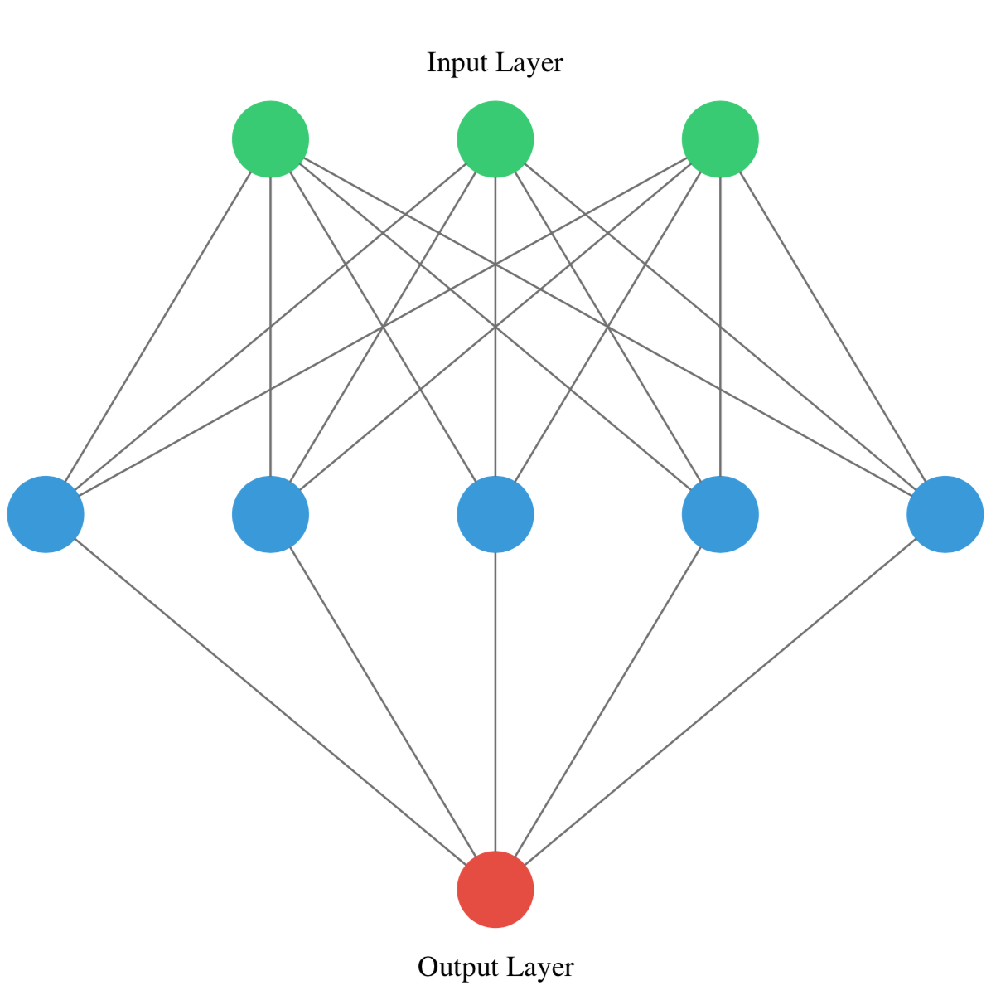

<!DOCTYPE html>
<html xmlns="http://www.w3.org/1999/xhtml" lang="en" xml:lang="en"><head>

<meta charset="utf-8">
<meta name="generator" content="quarto-1.4.549">

<meta name="viewport" content="width=device-width, initial-scale=1.0, user-scalable=yes">

<meta name="author" content="Mburu">
<meta name="dcterms.date" content="2024-03-04">

<title>Personal Blog - Introduction to Deep Learning with Keras</title>
<style>
code{white-space: pre-wrap;}
span.smallcaps{font-variant: small-caps;}
div.columns{display: flex; gap: min(4vw, 1.5em);}
div.column{flex: auto; overflow-x: auto;}
div.hanging-indent{margin-left: 1.5em; text-indent: -1.5em;}
ul.task-list{list-style: none;}
ul.task-list li input[type="checkbox"] {
  width: 0.8em;
  margin: 0 0.8em 0.2em -1em; /* quarto-specific, see https://github.com/quarto-dev/quarto-cli/issues/4556 */ 
  vertical-align: middle;
}
/* CSS for syntax highlighting */
pre > code.sourceCode { white-space: pre; position: relative; }
pre > code.sourceCode > span { line-height: 1.25; }
pre > code.sourceCode > span:empty { height: 1.2em; }
.sourceCode { overflow: visible; }
code.sourceCode > span { color: inherit; text-decoration: inherit; }
div.sourceCode { margin: 1em 0; }
pre.sourceCode { margin: 0; }
@media screen {
div.sourceCode { overflow: auto; }
}
@media print {
pre > code.sourceCode { white-space: pre-wrap; }
pre > code.sourceCode > span { text-indent: -5em; padding-left: 5em; }
}
pre.numberSource code
  { counter-reset: source-line 0; }
pre.numberSource code > span
  { position: relative; left: -4em; counter-increment: source-line; }
pre.numberSource code > span > a:first-child::before
  { content: counter(source-line);
    position: relative; left: -1em; text-align: right; vertical-align: baseline;
    border: none; display: inline-block;
    -webkit-touch-callout: none; -webkit-user-select: none;
    -khtml-user-select: none; -moz-user-select: none;
    -ms-user-select: none; user-select: none;
    padding: 0 4px; width: 4em;
  }
pre.numberSource { margin-left: 3em;  padding-left: 4px; }
div.sourceCode
  {   }
@media screen {
pre > code.sourceCode > span > a:first-child::before { text-decoration: underline; }
}
</style>


<script src="../../site_libs/quarto-nav/quarto-nav.js"></script>
<script src="../../site_libs/quarto-nav/headroom.min.js"></script>
<script src="../../site_libs/clipboard/clipboard.min.js"></script>
<script src="../../site_libs/quarto-search/autocomplete.umd.js"></script>
<script src="../../site_libs/quarto-search/fuse.min.js"></script>
<script src="../../site_libs/quarto-search/quarto-search.js"></script>
<meta name="quarto:offset" content="../../">
<link href="../../milkyway.jpeg" rel="icon" type="image/jpeg">
<script src="../../site_libs/quarto-html/quarto.js"></script>
<script src="../../site_libs/quarto-html/popper.min.js"></script>
<script src="../../site_libs/quarto-html/tippy.umd.min.js"></script>
<script src="../../site_libs/quarto-html/anchor.min.js"></script>
<link href="../../site_libs/quarto-html/tippy.css" rel="stylesheet">
<link href="../../site_libs/quarto-html/quarto-syntax-highlighting.css" rel="stylesheet" id="quarto-text-highlighting-styles">
<script src="../../site_libs/bootstrap/bootstrap.min.js"></script>
<link href="../../site_libs/bootstrap/bootstrap-icons.css" rel="stylesheet">
<link href="../../site_libs/bootstrap/bootstrap.min.css" rel="stylesheet" id="quarto-bootstrap" data-mode="light">
<script id="quarto-search-options" type="application/json">{
  "location": "navbar",
  "copy-button": false,
  "collapse-after": 3,
  "panel-placement": "end",
  "type": "overlay",
  "limit": 50,
  "keyboard-shortcut": [
    "f",
    "/",
    "s"
  ],
  "show-item-context": false,
  "language": {
    "search-no-results-text": "No results",
    "search-matching-documents-text": "matching documents",
    "search-copy-link-title": "Copy link to search",
    "search-hide-matches-text": "Hide additional matches",
    "search-more-match-text": "more match in this document",
    "search-more-matches-text": "more matches in this document",
    "search-clear-button-title": "Clear",
    "search-text-placeholder": "",
    "search-detached-cancel-button-title": "Cancel",
    "search-submit-button-title": "Submit",
    "search-label": "Search"
  }
}</script>
<script async="" src="https://www.googletagmanager.com/gtag/js?id=G-BFNZ97VTLJ"></script>

<script type="text/javascript">

window.dataLayer = window.dataLayer || [];
function gtag(){dataLayer.push(arguments);}
gtag('js', new Date());
gtag('config', 'G-BFNZ97VTLJ', { 'anonymize_ip': true});
</script>
<style>html{ scroll-behavior: smooth; }</style>

  <script src="https://polyfill.io/v3/polyfill.min.js?features=es6"></script>
  <script src="https://cdn.jsdelivr.net/npm/mathjax@3/es5/tex-chtml-full.js" type="text/javascript"></script>

<script type="text/javascript">
const typesetMath = (el) => {
  if (window.MathJax) {
    // MathJax Typeset
    window.MathJax.typeset([el]);
  } else if (window.katex) {
    // KaTeX Render
    var mathElements = el.getElementsByClassName("math");
    var macros = [];
    for (var i = 0; i < mathElements.length; i++) {
      var texText = mathElements[i].firstChild;
      if (mathElements[i].tagName == "SPAN") {
        window.katex.render(texText.data, mathElements[i], {
          displayMode: mathElements[i].classList.contains('display'),
          throwOnError: false,
          macros: macros,
          fleqn: false
        });
      }
    }
  }
}
window.Quarto = {
  typesetMath
};
</script>

<link rel="stylesheet" href="../../style.css">
<meta property="og:title" content="Personal Blog - Introduction to Deep Learning with Keras">
<meta property="og:site_name" content="Personal Blog">
<meta name="twitter:title" content="Personal Blog - Introduction to Deep Learning with Keras">
<meta name="twitter:card" content="summary">
</head>

<body class="nav-fixed">

<div id="quarto-search-results"></div>
  <header id="quarto-header" class="headroom fixed-top">
    <nav class="navbar navbar-expand-lg " data-bs-theme="dark">
      <div class="navbar-container container-fluid">
      <div class="navbar-brand-container mx-auto">
    <a class="navbar-brand" href="../../index.html">
    <span class="navbar-title">Personal Blog</span>
    </a>
  </div>
            <div id="quarto-search" class="" title="Search"></div>
          <button class="navbar-toggler" type="button" data-bs-toggle="collapse" data-bs-target="#navbarCollapse" aria-controls="navbarCollapse" aria-expanded="false" aria-label="Toggle navigation" onclick="if (window.quartoToggleHeadroom) { window.quartoToggleHeadroom(); }">
  <span class="navbar-toggler-icon"></span>
</button>
          <div class="collapse navbar-collapse" id="navbarCollapse">
            <ul class="navbar-nav navbar-nav-scroll me-auto">
  <li class="nav-item">
    <a class="nav-link" href="../../index.html"> 
<span class="menu-text">Home</span></a>
  </li>  
  <li class="nav-item">
    <a class="nav-link" href="../../datacamp.html"> 
<span class="menu-text">Data Camp Courses</span></a>
  </li>  
</ul>
            <ul class="navbar-nav navbar-nav-scroll ms-auto">
  <li class="nav-item">
    <a class="nav-link" href="../../about.html"> 
<span class="menu-text">About</span></a>
  </li>  
  <li class="nav-item compact">
    <a class="nav-link" href="https://github.com/m-mburu"> <i class="bi bi-github" role="img">
</i> 
<span class="menu-text"></span></a>
  </li>  
  <li class="nav-item compact">
    <a class="nav-link" href="https://twitter.com/mmburu_w"> <i class="bi bi-twitter" role="img">
</i> 
<span class="menu-text"></span></a>
  </li>  
</ul>
          </div> <!-- /navcollapse -->
          <div class="quarto-navbar-tools">
  <a href="" class="quarto-reader-toggle quarto-navigation-tool px-1" onclick="window.quartoToggleReader(); return false;" title="Toggle reader mode">
  <div class="quarto-reader-toggle-btn">
  <i class="bi"></i>
  </div>
</a>
</div>
      </div> <!-- /container-fluid -->
    </nav>
</header>
<!-- content -->
<div id="quarto-content" class="quarto-container page-columns page-rows-contents page-layout-article page-navbar">
<!-- sidebar -->
<!-- margin-sidebar -->
    <div id="quarto-margin-sidebar" class="sidebar margin-sidebar">
        <nav id="TOC" role="doc-toc" class="toc-active">
    <h2 id="toc-title">On this page</h2>
   
  <ul>
  <li><a href="#introducing-keras" id="toc-introducing-keras" class="nav-link active" data-scroll-target="#introducing-keras">Introducing Keras</a>
  <ul>
  <li><a href="#hello-nets" id="toc-hello-nets" class="nav-link" data-scroll-target="#hello-nets">Hello nets!</a></li>
  <li><a href="#counting-parameters" id="toc-counting-parameters" class="nav-link" data-scroll-target="#counting-parameters">Counting parameters</a>
  <ul class="collapse">
  <li><a href="#question" id="toc-question" class="nav-link" data-scroll-target="#question">Question</a></li>
  </ul></li>
  <li><a href="#build-as-shown" id="toc-build-as-shown" class="nav-link" data-scroll-target="#build-as-shown">Build as shown!</a></li>
  <li><a href="#specifying-a-model" id="toc-specifying-a-model" class="nav-link" data-scroll-target="#specifying-a-model">Specifying a model</a></li>
  <li><a href="#training" id="toc-training" class="nav-link" data-scroll-target="#training">Training</a></li>
  <li><a href="#predicting-the-orbit" id="toc-predicting-the-orbit" class="nav-link" data-scroll-target="#predicting-the-orbit">Predicting the orbit!</a></li>
  </ul></li>
  <li><a href="#going-deeper" id="toc-going-deeper" class="nav-link" data-scroll-target="#going-deeper">Going Deeper</a>
  <ul>
  <li><a href="#exploring-dollar-bills" id="toc-exploring-dollar-bills" class="nav-link" data-scroll-target="#exploring-dollar-bills">Exploring dollar bills</a></li>
  <li><a href="#a-binary-classification-model" id="toc-a-binary-classification-model" class="nav-link" data-scroll-target="#a-binary-classification-model">A binary classification model</a></li>
  <li><a href="#is-this-dollar-bill-fake" id="toc-is-this-dollar-bill-fake" class="nav-link" data-scroll-target="#is-this-dollar-bill-fake">Is this dollar bill fake ?</a></li>
  <li><a href="#a-multi-class-model" id="toc-a-multi-class-model" class="nav-link" data-scroll-target="#a-multi-class-model">A multi-class model</a></li>
  <li><a href="#prepare-your-dataset" id="toc-prepare-your-dataset" class="nav-link" data-scroll-target="#prepare-your-dataset">Prepare your dataset</a></li>
  <li><a href="#training-on-dart-throwers" id="toc-training-on-dart-throwers" class="nav-link" data-scroll-target="#training-on-dart-throwers">Training on dart throwers</a></li>
  <li><a href="#softmax-predictions" id="toc-softmax-predictions" class="nav-link" data-scroll-target="#softmax-predictions">Softmax predictions</a></li>
  <li><a href="#an-irrigation-machine" id="toc-an-irrigation-machine" class="nav-link" data-scroll-target="#an-irrigation-machine">An irrigation machine</a></li>
  <li><a href="#training-with-multiple-labels" id="toc-training-with-multiple-labels" class="nav-link" data-scroll-target="#training-with-multiple-labels">Training with multiple labels</a></li>
  <li><a href="#the-history-callback" id="toc-the-history-callback" class="nav-link" data-scroll-target="#the-history-callback">The history callback</a></li>
  <li><a href="#early-stopping-your-model" id="toc-early-stopping-your-model" class="nav-link" data-scroll-target="#early-stopping-your-model">Early stopping your model</a></li>
  <li><a href="#a-combination-of-callbacks" id="toc-a-combination-of-callbacks" class="nav-link" data-scroll-target="#a-combination-of-callbacks">A combination of callbacks</a></li>
  </ul></li>
  <li><a href="#improving-your-model-performance" id="toc-improving-your-model-performance" class="nav-link" data-scroll-target="#improving-your-model-performance">Improving Your Model Performance</a>
  <ul>
  <li><a href="#learning-the-digits" id="toc-learning-the-digits" class="nav-link" data-scroll-target="#learning-the-digits">Learning the digits</a></li>
  </ul></li>
  <li><a href="#improving-your-model-performance-1" id="toc-improving-your-model-performance-1" class="nav-link" data-scroll-target="#improving-your-model-performance-1">Improving Your Model Performance</a>
  <ul>
  <li><a href="#is-the-model-overfitting" id="toc-is-the-model-overfitting" class="nav-link" data-scroll-target="#is-the-model-overfitting">Is the model overfitting?</a></li>
  <li><a href="#do-we-need-more-data" id="toc-do-we-need-more-data" class="nav-link" data-scroll-target="#do-we-need-more-data">Do we need more data?</a></li>
  <li><a href="#different-activation-functions" id="toc-different-activation-functions" class="nav-link" data-scroll-target="#different-activation-functions">Different activation functions</a></li>
  <li><a href="#comparing-activation-functions" id="toc-comparing-activation-functions" class="nav-link" data-scroll-target="#comparing-activation-functions">Comparing activation functions</a>
  <ul class="collapse">
  <li><a href="#comparing-activation-functions-ii" id="toc-comparing-activation-functions-ii" class="nav-link" data-scroll-target="#comparing-activation-functions-ii">Comparing activation functions II</a></li>
  </ul></li>
  <li><a href="#changing-batch-sizes" id="toc-changing-batch-sizes" class="nav-link" data-scroll-target="#changing-batch-sizes">Changing batch sizes</a></li>
  <li><a href="#batch-normalizing-a-familiar-model" id="toc-batch-normalizing-a-familiar-model" class="nav-link" data-scroll-target="#batch-normalizing-a-familiar-model">Batch normalizing a familiar model</a></li>
  <li><a href="#batch-normalization-effects" id="toc-batch-normalization-effects" class="nav-link" data-scroll-target="#batch-normalization-effects">Batch normalization effects</a></li>
  <li><a href="#preparing-a-model-for-tuning" id="toc-preparing-a-model-for-tuning" class="nav-link" data-scroll-target="#preparing-a-model-for-tuning">Preparing a model for tuning</a></li>
  <li><a href="#tuning-the-model-parameters" id="toc-tuning-the-model-parameters" class="nav-link" data-scroll-target="#tuning-the-model-parameters">Tuning the model parameters</a></li>
  <li><a href="#training-with-cross-validation" id="toc-training-with-cross-validation" class="nav-link" data-scroll-target="#training-with-cross-validation">Training with cross-validation</a></li>
  </ul></li>
  </ul>
</nav>
    </div>
<!-- main -->
<main class="content" id="quarto-document-content">

<header id="title-block-header" class="quarto-title-block default">
<div class="quarto-title">
<h1 class="title">Introduction to Deep Learning with Keras</h1>
</div>


<div class="quarto-title-meta">

    <div>
    <div class="quarto-title-meta-heading">Author</div>
    <div class="quarto-title-meta-contents">
             <p>Mburu </p>
          </div>
  </div>
    
    <div>
    <div class="quarto-title-meta-heading">Published</div>
    <div class="quarto-title-meta-contents">
      <p class="date">March 4, 2024</p>
    </div>
  </div>
  
    
  </div>
  


</header>


<section id="introducing-keras" class="level1">
<h1>Introducing Keras</h1>
<section id="hello-nets" class="level2">
<h2 class="anchored" data-anchor-id="hello-nets">Hello nets!</h2>
<p>You’re going to build a simple neural network to get a feeling of how quickly it is to accomplish this in Keras.</p>
<p>You will build a network that takes two numbers as an input, passes them through a hidden layer of 10 neurons, and finally outputs a single non-constrained number.</p>
<p>A non-constrained output can be obtained by avoiding setting an activation function in the output layer. This is useful for problems like regression, when we want our output to be able to take any non-constrained value.</p>
<p>include hello.nets.png </p>
<div class="cell">
<div class="sourceCode cell-code" id="cb1"><pre class="sourceCode python code-with-copy"><code class="sourceCode python"><span id="cb1-1"><a href="#cb1-1" aria-hidden="true" tabindex="-1"></a><span class="co"># Import the Sequential model and Dense layer</span></span>
<span id="cb1-2"><a href="#cb1-2" aria-hidden="true" tabindex="-1"></a><span class="im">from</span> tensorflow.keras.models <span class="im">import</span> Sequential</span>
<span id="cb1-3"><a href="#cb1-3" aria-hidden="true" tabindex="-1"></a><span class="im">from</span> tensorflow.keras.layers <span class="im">import</span> Dense</span>
<span id="cb1-4"><a href="#cb1-4" aria-hidden="true" tabindex="-1"></a></span>
<span id="cb1-5"><a href="#cb1-5" aria-hidden="true" tabindex="-1"></a><span class="co"># Create a Sequential model</span></span>
<span id="cb1-6"><a href="#cb1-6" aria-hidden="true" tabindex="-1"></a>model <span class="op">=</span> Sequential()</span>
<span id="cb1-7"><a href="#cb1-7" aria-hidden="true" tabindex="-1"></a></span>
<span id="cb1-8"><a href="#cb1-8" aria-hidden="true" tabindex="-1"></a><span class="co"># Add an input layer and a hidden layer with 10 neurons</span></span>
<span id="cb1-9"><a href="#cb1-9" aria-hidden="true" tabindex="-1"></a>model.add(Dense(<span class="dv">10</span>, input_shape<span class="op">=</span>(<span class="dv">2</span>,), activation<span class="op">=</span><span class="st">"relu"</span>))</span>
<span id="cb1-10"><a href="#cb1-10" aria-hidden="true" tabindex="-1"></a></span>
<span id="cb1-11"><a href="#cb1-11" aria-hidden="true" tabindex="-1"></a><span class="co"># Add a 1-neuron output layer</span></span>
<span id="cb1-12"><a href="#cb1-12" aria-hidden="true" tabindex="-1"></a>model.add(Dense(<span class="dv">1</span>))</span>
<span id="cb1-13"><a href="#cb1-13" aria-hidden="true" tabindex="-1"></a></span>
<span id="cb1-14"><a href="#cb1-14" aria-hidden="true" tabindex="-1"></a><span class="co"># Summarise your model</span></span>
<span id="cb1-15"><a href="#cb1-15" aria-hidden="true" tabindex="-1"></a>model.summary()</span></code><button title="Copy to Clipboard" class="code-copy-button"><i class="bi"></i></button></pre></div>
<div class="cell-output cell-output-stdout">
<pre><code>Model: "sequential"
_________________________________________________________________
 Layer (type)                Output Shape              Param #   
=================================================================
 dense (Dense)               (None, 10)                30        
                                                                 
 dense_1 (Dense)             (None, 1)                 11        
                                                                 
=================================================================
Total params: 41 (164.00 Byte)
Trainable params: 41 (164.00 Byte)
Non-trainable params: 0 (0.00 Byte)
_________________________________________________________________</code></pre>
</div>
</div>
</section>
<section id="counting-parameters" class="level2">
<h2 class="anchored" data-anchor-id="counting-parameters">Counting parameters</h2>
<p>You’ve just created a neural network. But you’re going to create a new one now, taking some time to think about the weights of each layer. The Keras Dense layer and the Sequential model are already loaded for you to use.</p>
<p>This is the network you will be creating:</p>
<p></p>
<div class="cell">
<div class="sourceCode cell-code" id="cb3"><pre class="sourceCode python code-with-copy"><code class="sourceCode python"><span id="cb3-1"><a href="#cb3-1" aria-hidden="true" tabindex="-1"></a><span class="co"># Instantiate a new Sequential model</span></span>
<span id="cb3-2"><a href="#cb3-2" aria-hidden="true" tabindex="-1"></a>model <span class="op">=</span> Sequential()</span>
<span id="cb3-3"><a href="#cb3-3" aria-hidden="true" tabindex="-1"></a></span>
<span id="cb3-4"><a href="#cb3-4" aria-hidden="true" tabindex="-1"></a><span class="co"># Add a Dense layer with five neurons and three inputs</span></span>
<span id="cb3-5"><a href="#cb3-5" aria-hidden="true" tabindex="-1"></a>model.add(Dense(<span class="dv">5</span>, input_shape<span class="op">=</span>(<span class="dv">3</span>,), activation<span class="op">=</span><span class="st">"relu"</span>))</span>
<span id="cb3-6"><a href="#cb3-6" aria-hidden="true" tabindex="-1"></a></span>
<span id="cb3-7"><a href="#cb3-7" aria-hidden="true" tabindex="-1"></a><span class="co"># Add a final Dense layer with one neuron and no activation</span></span>
<span id="cb3-8"><a href="#cb3-8" aria-hidden="true" tabindex="-1"></a>model.add(Dense(<span class="dv">1</span>))</span>
<span id="cb3-9"><a href="#cb3-9" aria-hidden="true" tabindex="-1"></a></span>
<span id="cb3-10"><a href="#cb3-10" aria-hidden="true" tabindex="-1"></a><span class="co"># Summarize your model</span></span>
<span id="cb3-11"><a href="#cb3-11" aria-hidden="true" tabindex="-1"></a>model.summary()</span></code><button title="Copy to Clipboard" class="code-copy-button"><i class="bi"></i></button></pre></div>
<div class="cell-output cell-output-stdout">
<pre><code>Model: "sequential_1"
_________________________________________________________________
 Layer (type)                Output Shape              Param #   
=================================================================
 dense_2 (Dense)             (None, 5)                 20        
                                                                 
 dense_3 (Dense)             (None, 1)                 6         
                                                                 
=================================================================
Total params: 26 (104.00 Byte)
Trainable params: 26 (104.00 Byte)
Non-trainable params: 0 (0.00 Byte)
_________________________________________________________________</code></pre>
</div>
</div>
<section id="question" class="level3">
<h3 class="anchored" data-anchor-id="question">Question</h3>
<ul>
<li><p>Given the model you just built, which answer is correct regarding the number of weights (parameters) in the hidden layer?</p></li>
<li><p><strong><em>There are 20 parameters, 15 from the connections of our inputs to our hidden layer and 5 from the bias weight of each neuron in the hidden layer.</em></strong></p></li>
</ul>
</section>
</section>
<section id="build-as-shown" class="level2">
<h2 class="anchored" data-anchor-id="build-as-shown">Build as shown!</h2>
<p>You will take on a final challenge before moving on to the next lesson. Build the network shown in the picture below. Prove your mastered Keras basics in no time!</p>
<p></p>
<div class="cell">
<div class="sourceCode cell-code" id="cb5"><pre class="sourceCode python code-with-copy"><code class="sourceCode python"><span id="cb5-1"><a href="#cb5-1" aria-hidden="true" tabindex="-1"></a></span>
<span id="cb5-2"><a href="#cb5-2" aria-hidden="true" tabindex="-1"></a><span class="co"># Instantiate a Sequential model</span></span>
<span id="cb5-3"><a href="#cb5-3" aria-hidden="true" tabindex="-1"></a>model <span class="op">=</span> Sequential()</span>
<span id="cb5-4"><a href="#cb5-4" aria-hidden="true" tabindex="-1"></a></span>
<span id="cb5-5"><a href="#cb5-5" aria-hidden="true" tabindex="-1"></a><span class="co"># Build the input and hidden layer</span></span>
<span id="cb5-6"><a href="#cb5-6" aria-hidden="true" tabindex="-1"></a>model.add(Dense(<span class="dv">3</span>, input_shape <span class="op">=</span> (<span class="dv">2</span>,)))</span>
<span id="cb5-7"><a href="#cb5-7" aria-hidden="true" tabindex="-1"></a></span>
<span id="cb5-8"><a href="#cb5-8" aria-hidden="true" tabindex="-1"></a><span class="co"># Add the ouput layer</span></span>
<span id="cb5-9"><a href="#cb5-9" aria-hidden="true" tabindex="-1"></a>model.add(Dense(<span class="dv">1</span>))</span></code><button title="Copy to Clipboard" class="code-copy-button"><i class="bi"></i></button></pre></div>
</div>
</section>
<section id="specifying-a-model" class="level2">
<h2 class="anchored" data-anchor-id="specifying-a-model">Specifying a model</h2>
<p>You will build a simple regression model to predict the orbit of the meteor!</p>
<p>Your training data consist of measurements taken at time steps from -10 minutes before the impact region to +10 minutes after. Each time step can be viewed as an X coordinate in our graph, which has an associated position Y for the meteor orbit at that time step.</p>
<p>Note that you can view this problem as approximating a quadratic function via the use of neural networks.</p>
<p></p>
<p>This data is stored in two numpy arrays: one called time_steps , what we call features, and another called y_positions, with the labels. Go on and build your model! It should be able to predict the y positions for the meteor orbit at future time steps.</p>
<p>Keras Sequential model and Dense layers are available for you to use.</p>
<div class="cell">
<div class="sourceCode cell-code" id="cb6"><pre class="sourceCode python code-with-copy"><code class="sourceCode python"><span id="cb6-1"><a href="#cb6-1" aria-hidden="true" tabindex="-1"></a><span class="co"># Instantiate a Sequential model</span></span>
<span id="cb6-2"><a href="#cb6-2" aria-hidden="true" tabindex="-1"></a>model <span class="op">=</span> Sequential()</span>
<span id="cb6-3"><a href="#cb6-3" aria-hidden="true" tabindex="-1"></a></span>
<span id="cb6-4"><a href="#cb6-4" aria-hidden="true" tabindex="-1"></a><span class="co"># Add a Dense layer with 50 neurons and an input of 1 neuron</span></span>
<span id="cb6-5"><a href="#cb6-5" aria-hidden="true" tabindex="-1"></a>model.add(Dense(<span class="dv">50</span>, input_shape<span class="op">=</span>(<span class="dv">1</span>,), activation<span class="op">=</span><span class="st">'relu'</span>))</span>
<span id="cb6-6"><a href="#cb6-6" aria-hidden="true" tabindex="-1"></a></span>
<span id="cb6-7"><a href="#cb6-7" aria-hidden="true" tabindex="-1"></a><span class="co"># Add two Dense layers with 50 neurons and relu activation</span></span>
<span id="cb6-8"><a href="#cb6-8" aria-hidden="true" tabindex="-1"></a>model.add(Dense(<span class="dv">50</span>, activation<span class="op">=</span> <span class="st">"relu"</span>))</span>
<span id="cb6-9"><a href="#cb6-9" aria-hidden="true" tabindex="-1"></a>model.add(Dense(<span class="dv">50</span>, activation<span class="op">=</span> <span class="st">"relu"</span>))</span>
<span id="cb6-10"><a href="#cb6-10" aria-hidden="true" tabindex="-1"></a></span>
<span id="cb6-11"><a href="#cb6-11" aria-hidden="true" tabindex="-1"></a><span class="co"># End your model with a Dense layer and no activation</span></span>
<span id="cb6-12"><a href="#cb6-12" aria-hidden="true" tabindex="-1"></a>model.add(Dense(<span class="dv">1</span>))</span></code><button title="Copy to Clipboard" class="code-copy-button"><i class="bi"></i></button></pre></div>
</div>
</section>
<section id="training" class="level2">
<h2 class="anchored" data-anchor-id="training">Training</h2>
<p>You’re going to train your first model in this course, and for a good cause!</p>
<p>Remember that before training your Keras models you need to compile them. This can be done with the .compile() method. The .compile() method takes arguments such as the optimizer, used for weight updating, and the loss function, which is what we want to minimize. Training your model is as easy as calling the .fit() method, passing on the features, labels and a number of epochs to train for.</p>
<p>The regression model you built in the previous exercise is loaded for you to use, along with the time_steps and y_positions data. Train it and evaluate it on this very same data, let’s see if your model can learn the meteor’s trajectory.</p>
<div class="cell">
<div class="sourceCode cell-code" id="cb7"><pre class="sourceCode python code-with-copy"><code class="sourceCode python"><span id="cb7-1"><a href="#cb7-1" aria-hidden="true" tabindex="-1"></a>time_steps_script <span class="op">=</span> <span class="st">"time_steps.py"</span></span>
<span id="cb7-2"><a href="#cb7-2" aria-hidden="true" tabindex="-1"></a></span>
<span id="cb7-3"><a href="#cb7-3" aria-hidden="true" tabindex="-1"></a>filename <span class="op">=</span> <span class="st">'path_to_your_script.py'</span></span>
<span id="cb7-4"><a href="#cb7-4" aria-hidden="true" tabindex="-1"></a></span>
<span id="cb7-5"><a href="#cb7-5" aria-hidden="true" tabindex="-1"></a><span class="cf">with</span> <span class="bu">open</span>(time_steps_script, <span class="st">'r'</span>) <span class="im">as</span> <span class="bu">file</span>:</span>
<span id="cb7-6"><a href="#cb7-6" aria-hidden="true" tabindex="-1"></a>    script_content <span class="op">=</span> <span class="bu">file</span>.read()</span>
<span id="cb7-7"><a href="#cb7-7" aria-hidden="true" tabindex="-1"></a></span>
<span id="cb7-8"><a href="#cb7-8" aria-hidden="true" tabindex="-1"></a><span class="bu">exec</span>(script_content)</span>
<span id="cb7-9"><a href="#cb7-9" aria-hidden="true" tabindex="-1"></a></span>
<span id="cb7-10"><a href="#cb7-10" aria-hidden="true" tabindex="-1"></a><span class="co"># Compile your model</span></span>
<span id="cb7-11"><a href="#cb7-11" aria-hidden="true" tabindex="-1"></a>model.<span class="bu">compile</span>(optimizer <span class="op">=</span> <span class="st">"adam"</span>, loss <span class="op">=</span> <span class="st">"mse"</span>)</span>
<span id="cb7-12"><a href="#cb7-12" aria-hidden="true" tabindex="-1"></a></span>
<span id="cb7-13"><a href="#cb7-13" aria-hidden="true" tabindex="-1"></a><span class="bu">print</span>(<span class="st">"Training started..., this can take a while:"</span>)</span></code><button title="Copy to Clipboard" class="code-copy-button"><i class="bi"></i></button></pre></div>
<div class="cell-output cell-output-stdout">
<pre><code>Training started..., this can take a while:</code></pre>
</div>
<div class="sourceCode cell-code" id="cb9"><pre class="sourceCode python code-with-copy"><code class="sourceCode python"><span id="cb9-1"><a href="#cb9-1" aria-hidden="true" tabindex="-1"></a><span class="co"># Fit your model on your data for 30 epochs</span></span>
<span id="cb9-2"><a href="#cb9-2" aria-hidden="true" tabindex="-1"></a>model.fit(time_steps,y_positions, epochs <span class="op">=</span> <span class="dv">30</span>)</span></code><button title="Copy to Clipboard" class="code-copy-button"><i class="bi"></i></button></pre></div>
<div class="cell-output cell-output-stdout">
<pre><code>Epoch 1/30

 1/63 [..............................] - ETA: 31s - loss: 1898.9307
48/63 [=====================&gt;........] - ETA: 0s - loss: 1782.0690 
63/63 [==============================] - 1s 1ms/step - loss: 1570.2661
Epoch 2/30

 1/63 [..............................] - ETA: 0s - loss: 596.8338
51/63 [=======================&gt;......] - ETA: 0s - loss: 276.0764
63/63 [==============================] - 0s 1ms/step - loss: 250.9498
Epoch 3/30

 1/63 [..............................] - ETA: 0s - loss: 143.9181
52/63 [=======================&gt;......] - ETA: 0s - loss: 129.9817
63/63 [==============================] - 0s 1ms/step - loss: 129.2717
Epoch 4/30

 1/63 [..............................] - ETA: 0s - loss: 119.4723
56/63 [=========================&gt;....] - ETA: 0s - loss: 102.7880
63/63 [==============================] - 0s 940us/step - loss: 101.2285
Epoch 5/30

 1/63 [..............................] - ETA: 0s - loss: 106.8071
51/63 [=======================&gt;......] - ETA: 0s - loss: 71.2458 
63/63 [==============================] - 0s 1ms/step - loss: 69.9295
Epoch 6/30

 1/63 [..............................] - ETA: 0s - loss: 52.6778
56/63 [=========================&gt;....] - ETA: 0s - loss: 48.3553
63/63 [==============================] - 0s 945us/step - loss: 46.5619
Epoch 7/30

 1/63 [..............................] - ETA: 0s - loss: 28.7040
52/63 [=======================&gt;......] - ETA: 0s - loss: 28.1992
63/63 [==============================] - 0s 1ms/step - loss: 27.2515
Epoch 8/30

 1/63 [..............................] - ETA: 0s - loss: 15.2236
53/63 [========================&gt;.....] - ETA: 0s - loss: 16.2146
63/63 [==============================] - 0s 983us/step - loss: 15.5511
Epoch 9/30

 1/63 [..............................] - ETA: 0s - loss: 12.5567
53/63 [========================&gt;.....] - ETA: 0s - loss: 9.7067 
63/63 [==============================] - 0s 1ms/step - loss: 9.1497
Epoch 10/30

 1/63 [..............................] - ETA: 0s - loss: 4.8695
48/63 [=====================&gt;........] - ETA: 0s - loss: 6.2929
63/63 [==============================] - 0s 1ms/step - loss: 6.2438
Epoch 11/30

 1/63 [..............................] - ETA: 0s - loss: 6.3005
49/63 [======================&gt;.......] - ETA: 0s - loss: 3.9532
63/63 [==============================] - 0s 1ms/step - loss: 3.7343
Epoch 12/30

 1/63 [..............................] - ETA: 0s - loss: 2.8742
48/63 [=====================&gt;........] - ETA: 0s - loss: 3.3589
63/63 [==============================] - 0s 1ms/step - loss: 3.1419
Epoch 13/30

 1/63 [..............................] - ETA: 0s - loss: 2.1622
55/63 [=========================&gt;....] - ETA: 0s - loss: 1.9904
63/63 [==============================] - 0s 950us/step - loss: 1.9444
Epoch 14/30

 1/63 [..............................] - ETA: 0s - loss: 1.9055
51/63 [=======================&gt;......] - ETA: 0s - loss: 1.3589
63/63 [==============================] - 0s 1ms/step - loss: 1.4234
Epoch 15/30

 1/63 [..............................] - ETA: 0s - loss: 2.3644
53/63 [========================&gt;.....] - ETA: 0s - loss: 1.4362
63/63 [==============================] - 0s 963us/step - loss: 1.3774
Epoch 16/30

 1/63 [..............................] - ETA: 0s - loss: 0.6225
57/63 [==========================&gt;...] - ETA: 0s - loss: 0.8337
63/63 [==============================] - 0s 917us/step - loss: 0.8109
Epoch 17/30

 1/63 [..............................] - ETA: 0s - loss: 0.5317
52/63 [=======================&gt;......] - ETA: 0s - loss: 0.7082
63/63 [==============================] - 0s 992us/step - loss: 0.7266
Epoch 18/30

 1/63 [..............................] - ETA: 0s - loss: 0.3751
57/63 [==========================&gt;...] - ETA: 0s - loss: 0.5857
63/63 [==============================] - 0s 922us/step - loss: 0.5866
Epoch 19/30

 1/63 [..............................] - ETA: 0s - loss: 0.6664
56/63 [=========================&gt;....] - ETA: 0s - loss: 0.5301
63/63 [==============================] - 0s 929us/step - loss: 0.5284
Epoch 20/30

 1/63 [..............................] - ETA: 0s - loss: 0.2963
54/63 [========================&gt;.....] - ETA: 0s - loss: 0.5550
63/63 [==============================] - 0s 968us/step - loss: 0.5303
Epoch 21/30

 1/63 [..............................] - ETA: 0s - loss: 0.4377
54/63 [========================&gt;.....] - ETA: 0s - loss: 0.3165
63/63 [==============================] - 0s 967us/step - loss: 0.3362
Epoch 22/30

 1/63 [..............................] - ETA: 0s - loss: 0.1393
51/63 [=======================&gt;......] - ETA: 0s - loss: 0.2837
63/63 [==============================] - 0s 1ms/step - loss: 0.2669
Epoch 23/30

 1/63 [..............................] - ETA: 0s - loss: 0.7585
52/63 [=======================&gt;......] - ETA: 0s - loss: 0.3225
63/63 [==============================] - 0s 1ms/step - loss: 0.3281
Epoch 24/30

 1/63 [..............................] - ETA: 0s - loss: 0.1837
52/63 [=======================&gt;......] - ETA: 0s - loss: 0.2756
63/63 [==============================] - 0s 991us/step - loss: 0.2644
Epoch 25/30

 1/63 [..............................] - ETA: 0s - loss: 0.3557
54/63 [========================&gt;.....] - ETA: 0s - loss: 0.1744
63/63 [==============================] - 0s 961us/step - loss: 0.1793
Epoch 26/30

 1/63 [..............................] - ETA: 0s - loss: 0.1272
51/63 [=======================&gt;......] - ETA: 0s - loss: 0.1684
63/63 [==============================] - 0s 1ms/step - loss: 0.1770
Epoch 27/30

 1/63 [..............................] - ETA: 0s - loss: 0.2307
54/63 [========================&gt;.....] - ETA: 0s - loss: 0.1682
63/63 [==============================] - 0s 961us/step - loss: 0.1693
Epoch 28/30

 1/63 [..............................] - ETA: 0s - loss: 0.4482
56/63 [=========================&gt;....] - ETA: 0s - loss: 0.1901
63/63 [==============================] - 0s 943us/step - loss: 0.1874
Epoch 29/30

 1/63 [..............................] - ETA: 0s - loss: 0.1806
55/63 [=========================&gt;....] - ETA: 0s - loss: 0.1128
63/63 [==============================] - 0s 941us/step - loss: 0.1154
Epoch 30/30

 1/63 [..............................] - ETA: 0s - loss: 0.0545
54/63 [========================&gt;.....] - ETA: 0s - loss: 0.1041
63/63 [==============================] - 0s 957us/step - loss: 0.1077
&lt;keras.src.callbacks.History object at 0x7f88e0344bb0&gt;</code></pre>
</div>
<div class="sourceCode cell-code" id="cb11"><pre class="sourceCode python code-with-copy"><code class="sourceCode python"><span id="cb11-1"><a href="#cb11-1" aria-hidden="true" tabindex="-1"></a><span class="co"># Evaluate your model </span></span>
<span id="cb11-2"><a href="#cb11-2" aria-hidden="true" tabindex="-1"></a><span class="bu">print</span>(<span class="st">"Final loss value:"</span>,model.evaluate(time_steps, y_positions))</span></code><button title="Copy to Clipboard" class="code-copy-button"><i class="bi"></i></button></pre></div>
<div class="cell-output cell-output-stdout">
<pre><code>
 1/63 [..............................] - ETA: 4s - loss: 0.0972
63/63 [==============================] - 0s 745us/step - loss: 0.2000
Final loss value: 0.20000852644443512</code></pre>
</div>
</div>
</section>
<section id="predicting-the-orbit" class="level2">
<h2 class="anchored" data-anchor-id="predicting-the-orbit">Predicting the orbit!</h2>
<p>You’ve already trained a model that approximates the orbit of the meteor approaching Earth and it’s loaded for you to use.</p>
<p>Since you trained your model for values between -10 and 10 minutes, your model hasn’t yet seen any other values for different time steps. You will now visualize how your model behaves on unseen data.</p>
<p>If you want to check the source code of plot_orbit, paste show_code(plot_orbit) into the console.</p>
<p>Hurry up, the Earth is running out of time!</p>
<p>Remember np.arange(x,y) produces a range of values from x to y-1. That is the [x, y) interval.</p>
<div class="cell">
<div class="sourceCode cell-code" id="cb13"><pre class="sourceCode python code-with-copy"><code class="sourceCode python"><span id="cb13-1"><a href="#cb13-1" aria-hidden="true" tabindex="-1"></a><span class="im">import</span> numpy <span class="im">as</span> np</span>
<span id="cb13-2"><a href="#cb13-2" aria-hidden="true" tabindex="-1"></a><span class="co"># Predict the twenty minutes orbit</span></span>
<span id="cb13-3"><a href="#cb13-3" aria-hidden="true" tabindex="-1"></a>twenty_min_orbit <span class="op">=</span> model.predict(np.arange(<span class="op">-</span><span class="dv">10</span>, <span class="dv">11</span>))</span></code><button title="Copy to Clipboard" class="code-copy-button"><i class="bi"></i></button></pre></div>
<div class="cell-output cell-output-stdout">
<pre><code>
1/1 [==============================] - ETA: 0s
1/1 [==============================] - 0s 57ms/step</code></pre>
</div>
<div class="sourceCode cell-code" id="cb15"><pre class="sourceCode python code-with-copy"><code class="sourceCode python"><span id="cb15-1"><a href="#cb15-1" aria-hidden="true" tabindex="-1"></a><span class="co"># Plot the twenty minute orbit </span></span>
<span id="cb15-2"><a href="#cb15-2" aria-hidden="true" tabindex="-1"></a>plot_orbit(twenty_min_orbit)</span></code><button title="Copy to Clipboard" class="code-copy-button"><i class="bi"></i></button></pre></div>
<div class="cell-output-display">
<div>
<figure class="figure">
<p></p>
</figure>
</div>
</div>
</div>
<div class="cell">
<div class="sourceCode cell-code" id="cb16"><pre class="sourceCode python code-with-copy"><code class="sourceCode python"><span id="cb16-1"><a href="#cb16-1" aria-hidden="true" tabindex="-1"></a><span class="co"># Predict the eighty minute orbit</span></span>
<span id="cb16-2"><a href="#cb16-2" aria-hidden="true" tabindex="-1"></a>eighty_min_orbit <span class="op">=</span> model.predict(np.arange(<span class="op">-</span><span class="dv">40</span>, <span class="dv">41</span>))</span></code><button title="Copy to Clipboard" class="code-copy-button"><i class="bi"></i></button></pre></div>
<div class="cell-output cell-output-stdout">
<pre><code>
1/3 [=========&gt;....................] - ETA: 0s
3/3 [==============================] - 0s 1ms/step</code></pre>
</div>
<div class="sourceCode cell-code" id="cb18"><pre class="sourceCode python code-with-copy"><code class="sourceCode python"><span id="cb18-1"><a href="#cb18-1" aria-hidden="true" tabindex="-1"></a><span class="co"># Plot the eighty minute orbit </span></span>
<span id="cb18-2"><a href="#cb18-2" aria-hidden="true" tabindex="-1"></a>plot_orbit(eighty_min_orbit)</span></code><button title="Copy to Clipboard" class="code-copy-button"><i class="bi"></i></button></pre></div>
<div class="cell-output-display">
<div>
<figure class="figure">
<p></p>
</figure>
</div>
</div>
</div>
</section>
</section>
<section id="going-deeper" class="level1">
<h1>Going Deeper</h1>
<section id="exploring-dollar-bills" class="level2">
<h2 class="anchored" data-anchor-id="exploring-dollar-bills">Exploring dollar bills</h2>
<p>You will practice building classification models in Keras with the Banknote Authentication dataset.</p>
<p>Your goal is to distinguish between real and fake dollar bills. In order to do this, the dataset comes with 4 features: variance,skewness,kurtosis and entropy. These features are calculated by applying mathematical operations over the dollar bill images. The labels are found in the dataframe’s class column.</p>
<p></p>
<div class="cell">
<div class="sourceCode cell-code" id="cb19"><pre class="sourceCode python code-with-copy"><code class="sourceCode python"><span id="cb19-1"><a href="#cb19-1" aria-hidden="true" tabindex="-1"></a><span class="im">import</span> pandas <span class="im">as</span> pd</span>
<span id="cb19-2"><a href="#cb19-2" aria-hidden="true" tabindex="-1"></a>banknotes <span class="op">=</span> pd.read_csv(<span class="st">"data/banknotes.csv"</span>)</span>
<span id="cb19-3"><a href="#cb19-3" aria-hidden="true" tabindex="-1"></a></span>
<span id="cb19-4"><a href="#cb19-4" aria-hidden="true" tabindex="-1"></a><span class="co"># Import seaborn</span></span>
<span id="cb19-5"><a href="#cb19-5" aria-hidden="true" tabindex="-1"></a><span class="im">import</span> seaborn <span class="im">as</span> sns</span>
<span id="cb19-6"><a href="#cb19-6" aria-hidden="true" tabindex="-1"></a><span class="co"># Use pairplot and set the hue to be our class column</span></span>
<span id="cb19-7"><a href="#cb19-7" aria-hidden="true" tabindex="-1"></a>sns.pairplot(banknotes, hue<span class="op">=</span> <span class="st">"class"</span>) </span></code><button title="Copy to Clipboard" class="code-copy-button"><i class="bi"></i></button></pre></div>
<div class="cell-output-display">
<div>
<figure class="figure">
<p></p>
</figure>
</div>
</div>
<div class="sourceCode cell-code" id="cb20"><pre class="sourceCode python code-with-copy"><code class="sourceCode python"><span id="cb20-1"><a href="#cb20-1" aria-hidden="true" tabindex="-1"></a><span class="co"># Describe the data</span></span>
<span id="cb20-2"><a href="#cb20-2" aria-hidden="true" tabindex="-1"></a><span class="bu">print</span>(<span class="st">'Dataset stats: </span><span class="ch">\n</span><span class="st">'</span>,banknotes.describe())</span></code><button title="Copy to Clipboard" class="code-copy-button"><i class="bi"></i></button></pre></div>
<div class="cell-output cell-output-stdout">
<pre><code>Dataset stats: 
            variace     skewness     curtosis      entropy        class
count  1372.000000  1372.000000  1372.000000  1372.000000  1372.000000
mean      0.433735     1.922353     1.397627    -1.191657     0.444606
std       2.842763     5.869047     4.310030     2.101013     0.497103
min      -7.042100   -13.773100    -5.286100    -8.548200     0.000000
25%      -1.773000    -1.708200    -1.574975    -2.413450     0.000000
50%       0.496180     2.319650     0.616630    -0.586650     0.000000
75%       2.821475     6.814625     3.179250     0.394810     1.000000
max       6.824800    12.951600    17.927400     2.449500     1.000000</code></pre>
</div>
<div class="sourceCode cell-code" id="cb22"><pre class="sourceCode python code-with-copy"><code class="sourceCode python"><span id="cb22-1"><a href="#cb22-1" aria-hidden="true" tabindex="-1"></a><span class="co"># Count the number of observations per class</span></span>
<span id="cb22-2"><a href="#cb22-2" aria-hidden="true" tabindex="-1"></a><span class="bu">print</span>(<span class="st">'Observations per class: </span><span class="ch">\n</span><span class="st">'</span>,banknotes[<span class="st">"class"</span>].value_counts())</span></code><button title="Copy to Clipboard" class="code-copy-button"><i class="bi"></i></button></pre></div>
<div class="cell-output cell-output-stdout">
<pre><code>Observations per class: 
 class
0    762
1    610
Name: count, dtype: int64</code></pre>
</div>
<div class="cell-output-display">
<div>
<figure class="figure">
<p></p>
</figure>
</div>
</div>
</div>
</section>
<section id="a-binary-classification-model" class="level2">
<h2 class="anchored" data-anchor-id="a-binary-classification-model">A binary classification model</h2>
<p>Now that you know what the Banknote Authentication dataset looks like, we’ll build a simple model to distinguish between real and fake bills.</p>
<p>You will perform binary classification by using a single neuron as an output. The input layer will have 4 neurons since we have 4 features in our dataset. The model’s output will be a value constrained between 0 and 1.</p>
<p>We will interpret this output number as the probability of our input variables coming from a fake dollar bill, with 1 meaning we are certain it’s a fake bill.</p>
<p></p>
<div class="cell">
<div class="sourceCode cell-code" id="cb24"><pre class="sourceCode python code-with-copy"><code class="sourceCode python"><span id="cb24-1"><a href="#cb24-1" aria-hidden="true" tabindex="-1"></a><span class="co"># Import the sequential model and dense layer</span></span>
<span id="cb24-2"><a href="#cb24-2" aria-hidden="true" tabindex="-1"></a><span class="im">from</span> tensorflow.keras.models <span class="im">import</span> Sequential</span>
<span id="cb24-3"><a href="#cb24-3" aria-hidden="true" tabindex="-1"></a><span class="im">from</span> tensorflow.keras.layers <span class="im">import</span> Dense</span>
<span id="cb24-4"><a href="#cb24-4" aria-hidden="true" tabindex="-1"></a></span>
<span id="cb24-5"><a href="#cb24-5" aria-hidden="true" tabindex="-1"></a><span class="co"># Create a sequential model</span></span>
<span id="cb24-6"><a href="#cb24-6" aria-hidden="true" tabindex="-1"></a>model <span class="op">=</span> Sequential()</span>
<span id="cb24-7"><a href="#cb24-7" aria-hidden="true" tabindex="-1"></a></span>
<span id="cb24-8"><a href="#cb24-8" aria-hidden="true" tabindex="-1"></a><span class="co"># Add a dense layer </span></span>
<span id="cb24-9"><a href="#cb24-9" aria-hidden="true" tabindex="-1"></a>model.add(Dense(<span class="dv">1</span>, input_shape<span class="op">=</span>(<span class="dv">4</span>,), activation<span class="op">=</span> <span class="st">"sigmoid"</span>))</span>
<span id="cb24-10"><a href="#cb24-10" aria-hidden="true" tabindex="-1"></a></span>
<span id="cb24-11"><a href="#cb24-11" aria-hidden="true" tabindex="-1"></a><span class="co"># Compile your model</span></span>
<span id="cb24-12"><a href="#cb24-12" aria-hidden="true" tabindex="-1"></a>model.<span class="bu">compile</span>(loss<span class="op">=</span><span class="st">'binary_crossentropy'</span>, optimizer<span class="op">=</span><span class="st">"sgd"</span>, metrics<span class="op">=</span>[<span class="st">'accuracy'</span>])</span>
<span id="cb24-13"><a href="#cb24-13" aria-hidden="true" tabindex="-1"></a></span>
<span id="cb24-14"><a href="#cb24-14" aria-hidden="true" tabindex="-1"></a><span class="co"># Display a summary of your model</span></span>
<span id="cb24-15"><a href="#cb24-15" aria-hidden="true" tabindex="-1"></a>model.summary()</span></code><button title="Copy to Clipboard" class="code-copy-button"><i class="bi"></i></button></pre></div>
<div class="cell-output cell-output-stdout">
<pre><code>Model: "sequential_4"
_________________________________________________________________
 Layer (type)                Output Shape              Param #   
=================================================================
 dense_10 (Dense)            (None, 1)                 5         
                                                                 
=================================================================
Total params: 5 (20.00 Byte)
Trainable params: 5 (20.00 Byte)
Non-trainable params: 0 (0.00 Byte)
_________________________________________________________________</code></pre>
</div>
</div>
</section>
<section id="is-this-dollar-bill-fake" class="level2">
<h2 class="anchored" data-anchor-id="is-this-dollar-bill-fake">Is this dollar bill fake ?</h2>
<p>You are now ready to train your model and check how well it performs when classifying new bills! The dataset has already been partitioned into features: X_train &amp; X_test, and labels: y_train &amp; y_test.</p>
<div class="cell">
<div class="sourceCode cell-code" id="cb26"><pre class="sourceCode python code-with-copy"><code class="sourceCode python"><span id="cb26-1"><a href="#cb26-1" aria-hidden="true" tabindex="-1"></a><span class="im">from</span> sklearn.model_selection <span class="im">import</span> train_test_split</span>
<span id="cb26-2"><a href="#cb26-2" aria-hidden="true" tabindex="-1"></a><span class="co"># Separate features and labels</span></span>
<span id="cb26-3"><a href="#cb26-3" aria-hidden="true" tabindex="-1"></a>X <span class="op">=</span> banknotes.drop(<span class="st">'class'</span>, axis<span class="op">=</span><span class="dv">1</span>)  <span class="co"># Features</span></span>
<span id="cb26-4"><a href="#cb26-4" aria-hidden="true" tabindex="-1"></a>y <span class="op">=</span> banknotes[<span class="st">'class'</span>]  <span class="co"># Labels</span></span>
<span id="cb26-5"><a href="#cb26-5" aria-hidden="true" tabindex="-1"></a></span>
<span id="cb26-6"><a href="#cb26-6" aria-hidden="true" tabindex="-1"></a><span class="co"># Split the dataset into training and testing sets</span></span>
<span id="cb26-7"><a href="#cb26-7" aria-hidden="true" tabindex="-1"></a>X_train, X_test, y_train, y_test <span class="op">=</span> train_test_split(X, y, test_size<span class="op">=</span><span class="fl">0.2</span>, random_state<span class="op">=</span><span class="dv">42</span>)</span>
<span id="cb26-8"><a href="#cb26-8" aria-hidden="true" tabindex="-1"></a></span>
<span id="cb26-9"><a href="#cb26-9" aria-hidden="true" tabindex="-1"></a><span class="co"># Train your model for 20 epochs</span></span>
<span id="cb26-10"><a href="#cb26-10" aria-hidden="true" tabindex="-1"></a>model.fit(X_train, y_train, epochs <span class="op">=</span> <span class="dv">20</span>)</span></code><button title="Copy to Clipboard" class="code-copy-button"><i class="bi"></i></button></pre></div>
<div class="cell-output cell-output-stdout">
<pre><code>Epoch 1/20

 1/35 [..............................] - ETA: 6s - loss: 4.3534 - accuracy: 0.3750
35/35 [==============================] - 0s 848us/step - loss: 2.3420 - accuracy: 0.3418
Epoch 2/20

 1/35 [..............................] - ETA: 0s - loss: 1.0439 - accuracy: 0.5000
35/35 [==============================] - 0s 881us/step - loss: 0.6762 - accuracy: 0.7201
Epoch 3/20

 1/35 [..............................] - ETA: 0s - loss: 0.4907 - accuracy: 0.8125
35/35 [==============================] - 0s 766us/step - loss: 0.4409 - accuracy: 0.8332
Epoch 4/20

 1/35 [..............................] - ETA: 0s - loss: 0.2553 - accuracy: 0.9062
35/35 [==============================] - 0s 720us/step - loss: 0.3375 - accuracy: 0.8861
Epoch 5/20

 1/35 [..............................] - ETA: 0s - loss: 0.2321 - accuracy: 0.9688
35/35 [==============================] - 0s 836us/step - loss: 0.2805 - accuracy: 0.9107
Epoch 6/20

 1/35 [..............................] - ETA: 0s - loss: 0.3618 - accuracy: 0.8438
35/35 [==============================] - 0s 775us/step - loss: 0.2439 - accuracy: 0.9262
Epoch 7/20

 1/35 [..............................] - ETA: 0s - loss: 0.3466 - accuracy: 0.8750
35/35 [==============================] - 0s 801us/step - loss: 0.2180 - accuracy: 0.9371
Epoch 8/20

 1/35 [..............................] - ETA: 0s - loss: 0.2251 - accuracy: 0.9688
35/35 [==============================] - 0s 840us/step - loss: 0.1983 - accuracy: 0.9417
Epoch 9/20

 1/35 [..............................] - ETA: 0s - loss: 0.1350 - accuracy: 1.0000
35/35 [==============================] - 0s 823us/step - loss: 0.1832 - accuracy: 0.9471
Epoch 10/20

 1/35 [..............................] - ETA: 0s - loss: 0.1383 - accuracy: 1.0000
35/35 [==============================] - 0s 805us/step - loss: 0.1710 - accuracy: 0.9508
Epoch 11/20

 1/35 [..............................] - ETA: 0s - loss: 0.1414 - accuracy: 1.0000
35/35 [==============================] - 0s 784us/step - loss: 0.1609 - accuracy: 0.9508
Epoch 12/20

 1/35 [..............................] - ETA: 0s - loss: 0.2066 - accuracy: 0.9062
35/35 [==============================] - 0s 802us/step - loss: 0.1525 - accuracy: 0.9544
Epoch 13/20

 1/35 [..............................] - ETA: 0s - loss: 0.1014 - accuracy: 0.9375
35/35 [==============================] - 0s 889us/step - loss: 0.1454 - accuracy: 0.9581
Epoch 14/20

 1/35 [..............................] - ETA: 0s - loss: 0.1284 - accuracy: 0.9688
35/35 [==============================] - 0s 821us/step - loss: 0.1391 - accuracy: 0.9599
Epoch 15/20

 1/35 [..............................] - ETA: 0s - loss: 0.1977 - accuracy: 0.9688
35/35 [==============================] - 0s 810us/step - loss: 0.1339 - accuracy: 0.9644
Epoch 16/20

 1/35 [..............................] - ETA: 0s - loss: 0.0980 - accuracy: 1.0000
35/35 [==============================] - 0s 803us/step - loss: 0.1292 - accuracy: 0.9663
Epoch 17/20

 1/35 [..............................] - ETA: 0s - loss: 0.1205 - accuracy: 0.9688
35/35 [==============================] - 0s 882us/step - loss: 0.1248 - accuracy: 0.9699
Epoch 18/20

 1/35 [..............................] - ETA: 0s - loss: 0.1335 - accuracy: 0.9688
35/35 [==============================] - 0s 785us/step - loss: 0.1210 - accuracy: 0.9717
Epoch 19/20

 1/35 [..............................] - ETA: 0s - loss: 0.1701 - accuracy: 0.9688
35/35 [==============================] - 0s 744us/step - loss: 0.1176 - accuracy: 0.9736
Epoch 20/20

 1/35 [..............................] - ETA: 0s - loss: 0.0756 - accuracy: 1.0000
35/35 [==============================] - 0s 729us/step - loss: 0.1144 - accuracy: 0.9772
&lt;keras.src.callbacks.History object at 0x7f883c4e5fc0&gt;</code></pre>
</div>
<div class="sourceCode cell-code" id="cb28"><pre class="sourceCode python code-with-copy"><code class="sourceCode python"><span id="cb28-1"><a href="#cb28-1" aria-hidden="true" tabindex="-1"></a><span class="co"># Evaluate your model accuracy on the test set</span></span>
<span id="cb28-2"><a href="#cb28-2" aria-hidden="true" tabindex="-1"></a>accuracy <span class="op">=</span> model.evaluate(X_test, y_test)[<span class="dv">1</span>]</span></code><button title="Copy to Clipboard" class="code-copy-button"><i class="bi"></i></button></pre></div>
<div class="cell-output cell-output-stdout">
<pre><code>
1/9 [==&gt;...........................] - ETA: 0s - loss: 0.1538 - accuracy: 0.9375
9/9 [==============================] - 0s 996us/step - loss: 0.1473 - accuracy: 0.9527</code></pre>
</div>
<div class="sourceCode cell-code" id="cb30"><pre class="sourceCode python code-with-copy"><code class="sourceCode python"><span id="cb30-1"><a href="#cb30-1" aria-hidden="true" tabindex="-1"></a><span class="co"># Print accuracy</span></span>
<span id="cb30-2"><a href="#cb30-2" aria-hidden="true" tabindex="-1"></a><span class="bu">print</span>(<span class="st">'Accuracy:'</span>, accuracy)</span></code><button title="Copy to Clipboard" class="code-copy-button"><i class="bi"></i></button></pre></div>
<div class="cell-output cell-output-stdout">
<pre><code>Accuracy: 0.9527272582054138</code></pre>
</div>
</div>
</section>
<section id="a-multi-class-model" class="level2">
<h2 class="anchored" data-anchor-id="a-multi-class-model">A multi-class model</h2>
<p>You’re going to build a model that predicts who threw which dart only based on where that dart landed! (That is the dart’s x and y coordinates on the board.)</p>
<p>This problem is a multi-class classification problem since each dart can only be thrown by one of 4 competitors. So classes/labels are mutually exclusive, and therefore we can build a neuron with as many output as competitors and use the softmax activation function to achieve a total sum of probabilities of 1 over all competitors.</p>
<p>The Sequential model and Dense layers are already imported for you to use.</p>
<div class="cell">
<div class="sourceCode cell-code" id="cb32"><pre class="sourceCode python code-with-copy"><code class="sourceCode python"><span id="cb32-1"><a href="#cb32-1" aria-hidden="true" tabindex="-1"></a><span class="co"># Instantiate a sequential model</span></span>
<span id="cb32-2"><a href="#cb32-2" aria-hidden="true" tabindex="-1"></a>model <span class="op">=</span> Sequential()</span>
<span id="cb32-3"><a href="#cb32-3" aria-hidden="true" tabindex="-1"></a>  </span>
<span id="cb32-4"><a href="#cb32-4" aria-hidden="true" tabindex="-1"></a><span class="co"># Add 3 dense layers of 128, 64 and 32 neurons each</span></span>
<span id="cb32-5"><a href="#cb32-5" aria-hidden="true" tabindex="-1"></a>model.add(Dense(<span class="dv">128</span>, input_shape<span class="op">=</span>(<span class="dv">2</span>,), activation<span class="op">=</span><span class="st">'relu'</span>))</span>
<span id="cb32-6"><a href="#cb32-6" aria-hidden="true" tabindex="-1"></a>model.add(Dense(<span class="dv">64</span>, activation<span class="op">=</span><span class="st">'relu'</span>))</span>
<span id="cb32-7"><a href="#cb32-7" aria-hidden="true" tabindex="-1"></a>model.add(Dense(<span class="dv">32</span>, activation<span class="op">=</span><span class="st">'relu'</span>))</span>
<span id="cb32-8"><a href="#cb32-8" aria-hidden="true" tabindex="-1"></a>  </span>
<span id="cb32-9"><a href="#cb32-9" aria-hidden="true" tabindex="-1"></a><span class="co"># Add a dense layer with as many neurons as competitors</span></span>
<span id="cb32-10"><a href="#cb32-10" aria-hidden="true" tabindex="-1"></a>model.add(Dense(<span class="dv">4</span>, activation<span class="op">=</span> <span class="st">"softmax"</span>))</span>
<span id="cb32-11"><a href="#cb32-11" aria-hidden="true" tabindex="-1"></a>  </span>
<span id="cb32-12"><a href="#cb32-12" aria-hidden="true" tabindex="-1"></a><span class="co"># Compile your model using categorical_crossentropy loss</span></span>
<span id="cb32-13"><a href="#cb32-13" aria-hidden="true" tabindex="-1"></a>model.<span class="bu">compile</span>(loss<span class="op">=</span> <span class="st">"categorical_crossentropy"</span>,</span>
<span id="cb32-14"><a href="#cb32-14" aria-hidden="true" tabindex="-1"></a>              optimizer<span class="op">=</span><span class="st">'adam'</span>,</span>
<span id="cb32-15"><a href="#cb32-15" aria-hidden="true" tabindex="-1"></a>              metrics<span class="op">=</span>[<span class="st">'accuracy'</span>])</span>
<span id="cb32-16"><a href="#cb32-16" aria-hidden="true" tabindex="-1"></a>              </span></code><button title="Copy to Clipboard" class="code-copy-button"><i class="bi"></i></button></pre></div>
</div>
</section>
<section id="prepare-your-dataset" class="level2">
<h2 class="anchored" data-anchor-id="prepare-your-dataset">Prepare your dataset</h2>
<p>In the console you can check that your labels, darts.competitor are not yet in a format to be understood by your network. They contain the names of the competitors as strings. You will first turn these competitors into unique numbers,then use the to_categorical() function from keras.utils to turn these numbers into their one-hot encoded representation.</p>
<p>This is useful for multi-class classification problems, since there are as many output neurons as classes and for every observation in our dataset we just want one of the neurons to be activated.</p>
<p>The dart’s dataset is loaded as darts. Pandas is imported as pd. Let’s prepare this dataset!</p>
<div class="cell">
<div class="sourceCode cell-code" id="cb33"><pre class="sourceCode python code-with-copy"><code class="sourceCode python"><span id="cb33-1"><a href="#cb33-1" aria-hidden="true" tabindex="-1"></a>darts <span class="op">=</span> pd.read_csv(<span class="st">"data/darts.csv"</span>)</span>
<span id="cb33-2"><a href="#cb33-2" aria-hidden="true" tabindex="-1"></a><span class="co"># Transform into a categorical variable</span></span>
<span id="cb33-3"><a href="#cb33-3" aria-hidden="true" tabindex="-1"></a>darts.competitor <span class="op">=</span> pd.Categorical(darts.competitor)</span>
<span id="cb33-4"><a href="#cb33-4" aria-hidden="true" tabindex="-1"></a></span>
<span id="cb33-5"><a href="#cb33-5" aria-hidden="true" tabindex="-1"></a><span class="co"># Assign a number to each category (label encoding)</span></span>
<span id="cb33-6"><a href="#cb33-6" aria-hidden="true" tabindex="-1"></a>darts.competitor <span class="op">=</span> darts.competitor.cat.codes </span>
<span id="cb33-7"><a href="#cb33-7" aria-hidden="true" tabindex="-1"></a></span>
<span id="cb33-8"><a href="#cb33-8" aria-hidden="true" tabindex="-1"></a><span class="co"># Import to_categorical from keras utils module</span></span>
<span id="cb33-9"><a href="#cb33-9" aria-hidden="true" tabindex="-1"></a><span class="im">from</span> tensorflow.keras.utils <span class="im">import</span> to_categorical</span>
<span id="cb33-10"><a href="#cb33-10" aria-hidden="true" tabindex="-1"></a></span>
<span id="cb33-11"><a href="#cb33-11" aria-hidden="true" tabindex="-1"></a>coordinates <span class="op">=</span> darts.drop([<span class="st">'competitor'</span>], axis<span class="op">=</span><span class="dv">1</span>)</span>
<span id="cb33-12"><a href="#cb33-12" aria-hidden="true" tabindex="-1"></a><span class="co"># Use to_categorical on your labels</span></span>
<span id="cb33-13"><a href="#cb33-13" aria-hidden="true" tabindex="-1"></a>competitors <span class="op">=</span> to_categorical(darts.competitor)</span>
<span id="cb33-14"><a href="#cb33-14" aria-hidden="true" tabindex="-1"></a></span>
<span id="cb33-15"><a href="#cb33-15" aria-hidden="true" tabindex="-1"></a><span class="co"># Now print the one-hot encoded labels</span></span>
<span id="cb33-16"><a href="#cb33-16" aria-hidden="true" tabindex="-1"></a><span class="bu">print</span>(<span class="st">'One-hot encoded competitors: </span><span class="ch">\n</span><span class="st">'</span>,competitors)</span></code><button title="Copy to Clipboard" class="code-copy-button"><i class="bi"></i></button></pre></div>
<div class="cell-output cell-output-stdout">
<pre><code>One-hot encoded competitors: 
 [[0. 0. 1. 0.]
 [0. 0. 0. 1.]
 [0. 1. 0. 0.]
 ...
 [0. 1. 0. 0.]
 [0. 1. 0. 0.]
 [0. 0. 0. 1.]]</code></pre>
</div>
</div>
</section>
<section id="training-on-dart-throwers" class="level2">
<h2 class="anchored" data-anchor-id="training-on-dart-throwers">Training on dart throwers</h2>
<p>Your model is now ready, just as your dataset. It’s time to train!</p>
<p>The coordinates features and competitors labels you just transformed have been partitioned into coord_train,coord_test and competitors_train,competitors_test.</p>
<p>Your model is also loaded. Feel free to visualize your training data or model.summary() in the console.</p>
<p>Let’s find out who threw which dart just by looking at the board!</p>
<div class="cell">
<div class="sourceCode cell-code" id="cb35"><pre class="sourceCode python code-with-copy"><code class="sourceCode python"><span id="cb35-1"><a href="#cb35-1" aria-hidden="true" tabindex="-1"></a><span class="co"># Now, split the datasets into training and testing sets</span></span>
<span id="cb35-2"><a href="#cb35-2" aria-hidden="true" tabindex="-1"></a>coord_train, coord_test, competitors_train, competitors_test <span class="op">=</span> train_test_split(</span>
<span id="cb35-3"><a href="#cb35-3" aria-hidden="true" tabindex="-1"></a>    coordinates,  <span class="co"># features</span></span>
<span id="cb35-4"><a href="#cb35-4" aria-hidden="true" tabindex="-1"></a>    competitors,  <span class="co"># target</span></span>
<span id="cb35-5"><a href="#cb35-5" aria-hidden="true" tabindex="-1"></a>    test_size<span class="op">=</span><span class="fl">0.2</span>,  <span class="co"># proportion of the dataset to include in the test split</span></span>
<span id="cb35-6"><a href="#cb35-6" aria-hidden="true" tabindex="-1"></a>    random_state<span class="op">=</span><span class="dv">42</span>  <span class="co"># seed used by the random number generator for reproducibility</span></span>
<span id="cb35-7"><a href="#cb35-7" aria-hidden="true" tabindex="-1"></a>)</span>
<span id="cb35-8"><a href="#cb35-8" aria-hidden="true" tabindex="-1"></a></span>
<span id="cb35-9"><a href="#cb35-9" aria-hidden="true" tabindex="-1"></a></span>
<span id="cb35-10"><a href="#cb35-10" aria-hidden="true" tabindex="-1"></a><span class="co"># Fit your model to the training data for 200 epochs</span></span>
<span id="cb35-11"><a href="#cb35-11" aria-hidden="true" tabindex="-1"></a>model.fit(coord_train, competitors_train, epochs<span class="op">=</span> <span class="dv">200</span>)</span></code><button title="Copy to Clipboard" class="code-copy-button"><i class="bi"></i></button></pre></div>
<div class="cell-output cell-output-stdout">
<pre><code>Epoch 1/200

 1/20 [&gt;.............................] - ETA: 7s - loss: 1.3887 - accuracy: 0.1875
20/20 [==============================] - 0s 1ms/step - loss: 1.3731 - accuracy: 0.2703
Epoch 2/200

 1/20 [&gt;.............................] - ETA: 0s - loss: 1.3623 - accuracy: 0.3438
20/20 [==============================] - 0s 1ms/step - loss: 1.3363 - accuracy: 0.3016
Epoch 3/200

 1/20 [&gt;.............................] - ETA: 0s - loss: 1.3198 - accuracy: 0.2188
20/20 [==============================] - 0s 1ms/step - loss: 1.2857 - accuracy: 0.3766
Epoch 4/200

 1/20 [&gt;.............................] - ETA: 0s - loss: 1.2016 - accuracy: 0.4688
20/20 [==============================] - 0s 1ms/step - loss: 1.2186 - accuracy: 0.4703
Epoch 5/200

 1/20 [&gt;.............................] - ETA: 0s - loss: 1.2123 - accuracy: 0.5000
20/20 [==============================] - 0s 1ms/step - loss: 1.1451 - accuracy: 0.5063
Epoch 6/200

 1/20 [&gt;.............................] - ETA: 0s - loss: 1.0839 - accuracy: 0.5312
20/20 [==============================] - 0s 1ms/step - loss: 1.0646 - accuracy: 0.5531
Epoch 7/200

 1/20 [&gt;.............................] - ETA: 0s - loss: 1.0197 - accuracy: 0.5000
20/20 [==============================] - 0s 1ms/step - loss: 0.9788 - accuracy: 0.5750
Epoch 8/200

 1/20 [&gt;.............................] - ETA: 0s - loss: 0.8761 - accuracy: 0.6562
20/20 [==============================] - 0s 1ms/step - loss: 0.9109 - accuracy: 0.6016
Epoch 9/200

 1/20 [&gt;.............................] - ETA: 0s - loss: 0.8035 - accuracy: 0.7188
20/20 [==============================] - 0s 1ms/step - loss: 0.8641 - accuracy: 0.6187
Epoch 10/200

 1/20 [&gt;.............................] - ETA: 0s - loss: 0.7682 - accuracy: 0.6562
20/20 [==============================] - 0s 1ms/step - loss: 0.8344 - accuracy: 0.6500
Epoch 11/200

 1/20 [&gt;.............................] - ETA: 0s - loss: 1.0624 - accuracy: 0.5625
20/20 [==============================] - 0s 1ms/step - loss: 0.8174 - accuracy: 0.6734
Epoch 12/200

 1/20 [&gt;.............................] - ETA: 0s - loss: 0.7658 - accuracy: 0.7500
20/20 [==============================] - 0s 1ms/step - loss: 0.7999 - accuracy: 0.6781
Epoch 13/200

 1/20 [&gt;.............................] - ETA: 0s - loss: 0.6660 - accuracy: 0.7812
20/20 [==============================] - 0s 1ms/step - loss: 0.7782 - accuracy: 0.7031
Epoch 14/200

 1/20 [&gt;.............................] - ETA: 0s - loss: 0.6999 - accuracy: 0.7500
20/20 [==============================] - 0s 1ms/step - loss: 0.7581 - accuracy: 0.7156
Epoch 15/200

 1/20 [&gt;.............................] - ETA: 0s - loss: 0.6399 - accuracy: 0.7500
20/20 [==============================] - 0s 1ms/step - loss: 0.7526 - accuracy: 0.7188
Epoch 16/200

 1/20 [&gt;.............................] - ETA: 0s - loss: 0.9757 - accuracy: 0.7500
20/20 [==============================] - 0s 1ms/step - loss: 0.7294 - accuracy: 0.7281
Epoch 17/200

 1/20 [&gt;.............................] - ETA: 0s - loss: 0.7397 - accuracy: 0.7188
20/20 [==============================] - 0s 1ms/step - loss: 0.7276 - accuracy: 0.7234
Epoch 18/200

 1/20 [&gt;.............................] - ETA: 0s - loss: 0.6596 - accuracy: 0.6875
20/20 [==============================] - 0s 1ms/step - loss: 0.7212 - accuracy: 0.7328
Epoch 19/200

 1/20 [&gt;.............................] - ETA: 0s - loss: 0.8041 - accuracy: 0.7188
20/20 [==============================] - 0s 1ms/step - loss: 0.7182 - accuracy: 0.7281
Epoch 20/200

 1/20 [&gt;.............................] - ETA: 0s - loss: 0.7933 - accuracy: 0.7500
20/20 [==============================] - 0s 1ms/step - loss: 0.7085 - accuracy: 0.7375
Epoch 21/200

 1/20 [&gt;.............................] - ETA: 0s - loss: 0.6726 - accuracy: 0.7500
20/20 [==============================] - 0s 1ms/step - loss: 0.7138 - accuracy: 0.7375
Epoch 22/200

 1/20 [&gt;.............................] - ETA: 0s - loss: 0.6224 - accuracy: 0.7812
20/20 [==============================] - 0s 1ms/step - loss: 0.6952 - accuracy: 0.7406
Epoch 23/200

 1/20 [&gt;.............................] - ETA: 0s - loss: 0.6138 - accuracy: 0.7812
20/20 [==============================] - 0s 1ms/step - loss: 0.6904 - accuracy: 0.7484
Epoch 24/200

 1/20 [&gt;.............................] - ETA: 0s - loss: 0.9039 - accuracy: 0.6875
20/20 [==============================] - 0s 1ms/step - loss: 0.6837 - accuracy: 0.7484
Epoch 25/200

 1/20 [&gt;.............................] - ETA: 0s - loss: 0.6622 - accuracy: 0.7188
20/20 [==============================] - 0s 1ms/step - loss: 0.6686 - accuracy: 0.7609
Epoch 26/200

 1/20 [&gt;.............................] - ETA: 0s - loss: 0.8227 - accuracy: 0.7500
20/20 [==============================] - 0s 1ms/step - loss: 0.6645 - accuracy: 0.7547
Epoch 27/200

 1/20 [&gt;.............................] - ETA: 0s - loss: 0.7359 - accuracy: 0.7500
20/20 [==============================] - 0s 1ms/step - loss: 0.6712 - accuracy: 0.7641
Epoch 28/200

 1/20 [&gt;.............................] - ETA: 0s - loss: 0.4262 - accuracy: 0.9062
20/20 [==============================] - 0s 1ms/step - loss: 0.6664 - accuracy: 0.7516
Epoch 29/200

 1/20 [&gt;.............................] - ETA: 0s - loss: 0.6173 - accuracy: 0.8125
20/20 [==============================] - 0s 1ms/step - loss: 0.6579 - accuracy: 0.7656
Epoch 30/200

 1/20 [&gt;.............................] - ETA: 0s - loss: 0.5192 - accuracy: 0.8125
20/20 [==============================] - 0s 1ms/step - loss: 0.6447 - accuracy: 0.7750
Epoch 31/200

 1/20 [&gt;.............................] - ETA: 0s - loss: 0.5871 - accuracy: 0.8125
20/20 [==============================] - 0s 1ms/step - loss: 0.6472 - accuracy: 0.7750
Epoch 32/200

 1/20 [&gt;.............................] - ETA: 0s - loss: 0.6190 - accuracy: 0.7812
20/20 [==============================] - 0s 1ms/step - loss: 0.6546 - accuracy: 0.7500
Epoch 33/200

 1/20 [&gt;.............................] - ETA: 0s - loss: 0.6130 - accuracy: 0.7500
20/20 [==============================] - 0s 1ms/step - loss: 0.6424 - accuracy: 0.7625
Epoch 34/200

 1/20 [&gt;.............................] - ETA: 0s - loss: 0.5181 - accuracy: 0.7500
20/20 [==============================] - 0s 1ms/step - loss: 0.6417 - accuracy: 0.7641
Epoch 35/200

 1/20 [&gt;.............................] - ETA: 0s - loss: 0.5543 - accuracy: 0.9062
20/20 [==============================] - 0s 1ms/step - loss: 0.6417 - accuracy: 0.7531
Epoch 36/200

 1/20 [&gt;.............................] - ETA: 0s - loss: 0.8112 - accuracy: 0.7500
20/20 [==============================] - 0s 1ms/step - loss: 0.6417 - accuracy: 0.7641
Epoch 37/200

 1/20 [&gt;.............................] - ETA: 0s - loss: 0.4381 - accuracy: 0.8125
20/20 [==============================] - 0s 1ms/step - loss: 0.6352 - accuracy: 0.7734
Epoch 38/200

 1/20 [&gt;.............................] - ETA: 0s - loss: 0.5968 - accuracy: 0.8125
20/20 [==============================] - 0s 1ms/step - loss: 0.6172 - accuracy: 0.7812
Epoch 39/200

 1/20 [&gt;.............................] - ETA: 0s - loss: 0.7108 - accuracy: 0.8438
20/20 [==============================] - 0s 1ms/step - loss: 0.6203 - accuracy: 0.7844
Epoch 40/200

 1/20 [&gt;.............................] - ETA: 0s - loss: 0.7574 - accuracy: 0.7812
20/20 [==============================] - 0s 1ms/step - loss: 0.6168 - accuracy: 0.7766
Epoch 41/200

 1/20 [&gt;.............................] - ETA: 0s - loss: 0.6269 - accuracy: 0.7812
20/20 [==============================] - 0s 1ms/step - loss: 0.6067 - accuracy: 0.7844
Epoch 42/200

 1/20 [&gt;.............................] - ETA: 0s - loss: 0.8203 - accuracy: 0.7188
20/20 [==============================] - 0s 1ms/step - loss: 0.6199 - accuracy: 0.7781
Epoch 43/200

 1/20 [&gt;.............................] - ETA: 0s - loss: 0.4944 - accuracy: 0.8438
20/20 [==============================] - 0s 1ms/step - loss: 0.5990 - accuracy: 0.7891
Epoch 44/200

 1/20 [&gt;.............................] - ETA: 0s - loss: 0.6158 - accuracy: 0.6875
20/20 [==============================] - 0s 1ms/step - loss: 0.5987 - accuracy: 0.7875
Epoch 45/200

 1/20 [&gt;.............................] - ETA: 0s - loss: 0.8731 - accuracy: 0.7188
20/20 [==============================] - 0s 1ms/step - loss: 0.6008 - accuracy: 0.7922
Epoch 46/200

 1/20 [&gt;.............................] - ETA: 0s - loss: 0.4606 - accuracy: 0.7812
20/20 [==============================] - 0s 1ms/step - loss: 0.5970 - accuracy: 0.7766
Epoch 47/200

 1/20 [&gt;.............................] - ETA: 0s - loss: 0.5476 - accuracy: 0.8750
20/20 [==============================] - 0s 1ms/step - loss: 0.6019 - accuracy: 0.7828
Epoch 48/200

 1/20 [&gt;.............................] - ETA: 0s - loss: 0.7218 - accuracy: 0.8125
20/20 [==============================] - 0s 1ms/step - loss: 0.6111 - accuracy: 0.7781
Epoch 49/200

 1/20 [&gt;.............................] - ETA: 0s - loss: 0.5091 - accuracy: 0.7812
20/20 [==============================] - 0s 1ms/step - loss: 0.5975 - accuracy: 0.7766
Epoch 50/200

 1/20 [&gt;.............................] - ETA: 0s - loss: 0.6196 - accuracy: 0.7500
20/20 [==============================] - 0s 1ms/step - loss: 0.5858 - accuracy: 0.7969
Epoch 51/200

 1/20 [&gt;.............................] - ETA: 0s - loss: 0.4200 - accuracy: 0.8438
20/20 [==============================] - 0s 1ms/step - loss: 0.5875 - accuracy: 0.7859
Epoch 52/200

 1/20 [&gt;.............................] - ETA: 0s - loss: 0.7136 - accuracy: 0.7500
20/20 [==============================] - 0s 1ms/step - loss: 0.5842 - accuracy: 0.7922
Epoch 53/200

 1/20 [&gt;.............................] - ETA: 0s - loss: 0.6596 - accuracy: 0.7812
20/20 [==============================] - 0s 1ms/step - loss: 0.6028 - accuracy: 0.7812
Epoch 54/200

 1/20 [&gt;.............................] - ETA: 0s - loss: 0.6664 - accuracy: 0.7500
20/20 [==============================] - 0s 1ms/step - loss: 0.5845 - accuracy: 0.7922
Epoch 55/200

 1/20 [&gt;.............................] - ETA: 0s - loss: 0.7533 - accuracy: 0.7812
20/20 [==============================] - 0s 1ms/step - loss: 0.5884 - accuracy: 0.7906
Epoch 56/200

 1/20 [&gt;.............................] - ETA: 0s - loss: 0.6815 - accuracy: 0.8125
20/20 [==============================] - 0s 1ms/step - loss: 0.5866 - accuracy: 0.7937
Epoch 57/200

 1/20 [&gt;.............................] - ETA: 0s - loss: 0.4917 - accuracy: 0.7812
20/20 [==============================] - 0s 1ms/step - loss: 0.5932 - accuracy: 0.7734
Epoch 58/200

 1/20 [&gt;.............................] - ETA: 0s - loss: 0.7670 - accuracy: 0.7188
20/20 [==============================] - 0s 1ms/step - loss: 0.5700 - accuracy: 0.7953
Epoch 59/200

 1/20 [&gt;.............................] - ETA: 0s - loss: 0.6999 - accuracy: 0.6875
20/20 [==============================] - 0s 1ms/step - loss: 0.5752 - accuracy: 0.7953
Epoch 60/200

 1/20 [&gt;.............................] - ETA: 0s - loss: 0.5337 - accuracy: 0.7812
20/20 [==============================] - 0s 1ms/step - loss: 0.5701 - accuracy: 0.7937
Epoch 61/200

 1/20 [&gt;.............................] - ETA: 0s - loss: 0.5693 - accuracy: 0.8750
20/20 [==============================] - 0s 1ms/step - loss: 0.5699 - accuracy: 0.7953
Epoch 62/200

 1/20 [&gt;.............................] - ETA: 0s - loss: 0.4720 - accuracy: 0.7500
20/20 [==============================] - 0s 1ms/step - loss: 0.5711 - accuracy: 0.8000
Epoch 63/200

 1/20 [&gt;.............................] - ETA: 0s - loss: 0.4689 - accuracy: 0.8125
20/20 [==============================] - 0s 1ms/step - loss: 0.5612 - accuracy: 0.8000
Epoch 64/200

 1/20 [&gt;.............................] - ETA: 0s - loss: 0.7224 - accuracy: 0.6250
20/20 [==============================] - 0s 1ms/step - loss: 0.5651 - accuracy: 0.8031
Epoch 65/200

 1/20 [&gt;.............................] - ETA: 0s - loss: 0.5370 - accuracy: 0.8125
20/20 [==============================] - 0s 1ms/step - loss: 0.5738 - accuracy: 0.7937
Epoch 66/200

 1/20 [&gt;.............................] - ETA: 0s - loss: 0.5172 - accuracy: 0.7500
20/20 [==============================] - 0s 1ms/step - loss: 0.5869 - accuracy: 0.7875
Epoch 67/200

 1/20 [&gt;.............................] - ETA: 0s - loss: 0.5874 - accuracy: 0.7500
20/20 [==============================] - 0s 1ms/step - loss: 0.5629 - accuracy: 0.7937
Epoch 68/200

 1/20 [&gt;.............................] - ETA: 0s - loss: 0.7175 - accuracy: 0.6875
20/20 [==============================] - 0s 1ms/step - loss: 0.5656 - accuracy: 0.7969
Epoch 69/200

 1/20 [&gt;.............................] - ETA: 0s - loss: 0.6009 - accuracy: 0.8125
20/20 [==============================] - 0s 1ms/step - loss: 0.5631 - accuracy: 0.7969
Epoch 70/200

 1/20 [&gt;.............................] - ETA: 0s - loss: 0.6002 - accuracy: 0.7500
20/20 [==============================] - 0s 1ms/step - loss: 0.5561 - accuracy: 0.8031
Epoch 71/200

 1/20 [&gt;.............................] - ETA: 0s - loss: 0.2910 - accuracy: 0.9375
20/20 [==============================] - 0s 1ms/step - loss: 0.5659 - accuracy: 0.7875
Epoch 72/200

 1/20 [&gt;.............................] - ETA: 0s - loss: 0.5454 - accuracy: 0.7812
20/20 [==============================] - 0s 1ms/step - loss: 0.5602 - accuracy: 0.7969
Epoch 73/200

 1/20 [&gt;.............................] - ETA: 0s - loss: 0.4472 - accuracy: 0.8750
20/20 [==============================] - 0s 1ms/step - loss: 0.5491 - accuracy: 0.8047
Epoch 74/200

 1/20 [&gt;.............................] - ETA: 0s - loss: 0.5135 - accuracy: 0.7500
20/20 [==============================] - 0s 1ms/step - loss: 0.5648 - accuracy: 0.7891
Epoch 75/200

 1/20 [&gt;.............................] - ETA: 0s - loss: 0.5419 - accuracy: 0.7188
20/20 [==============================] - 0s 1ms/step - loss: 0.5781 - accuracy: 0.7937
Epoch 76/200

 1/20 [&gt;.............................] - ETA: 0s - loss: 0.6084 - accuracy: 0.7188
20/20 [==============================] - 0s 1ms/step - loss: 0.5747 - accuracy: 0.7891
Epoch 77/200

 1/20 [&gt;.............................] - ETA: 0s - loss: 0.8373 - accuracy: 0.8125
20/20 [==============================] - 0s 1ms/step - loss: 0.5432 - accuracy: 0.8078
Epoch 78/200

 1/20 [&gt;.............................] - ETA: 0s - loss: 0.3986 - accuracy: 0.8438
20/20 [==============================] - 0s 1ms/step - loss: 0.5562 - accuracy: 0.7984
Epoch 79/200

 1/20 [&gt;.............................] - ETA: 0s - loss: 0.6122 - accuracy: 0.7188
20/20 [==============================] - 0s 1ms/step - loss: 0.5561 - accuracy: 0.7969
Epoch 80/200

 1/20 [&gt;.............................] - ETA: 0s - loss: 0.3323 - accuracy: 0.9062
20/20 [==============================] - 0s 1ms/step - loss: 0.5737 - accuracy: 0.7844
Epoch 81/200

 1/20 [&gt;.............................] - ETA: 0s - loss: 0.4852 - accuracy: 0.8125
20/20 [==============================] - 0s 1ms/step - loss: 0.5898 - accuracy: 0.7828
Epoch 82/200

 1/20 [&gt;.............................] - ETA: 0s - loss: 0.8386 - accuracy: 0.6562
20/20 [==============================] - 0s 1ms/step - loss: 0.5898 - accuracy: 0.7844
Epoch 83/200

 1/20 [&gt;.............................] - ETA: 0s - loss: 0.7122 - accuracy: 0.7188
20/20 [==============================] - 0s 1ms/step - loss: 0.5519 - accuracy: 0.8062
Epoch 84/200

 1/20 [&gt;.............................] - ETA: 0s - loss: 0.5021 - accuracy: 0.8125
20/20 [==============================] - 0s 1ms/step - loss: 0.5522 - accuracy: 0.8094
Epoch 85/200

 1/20 [&gt;.............................] - ETA: 0s - loss: 0.6566 - accuracy: 0.7500
20/20 [==============================] - 0s 1ms/step - loss: 0.5450 - accuracy: 0.8062
Epoch 86/200

 1/20 [&gt;.............................] - ETA: 0s - loss: 0.4550 - accuracy: 0.8438
20/20 [==============================] - 0s 1ms/step - loss: 0.5443 - accuracy: 0.8094
Epoch 87/200

 1/20 [&gt;.............................] - ETA: 0s - loss: 0.3599 - accuracy: 0.9062
20/20 [==============================] - 0s 1ms/step - loss: 0.5462 - accuracy: 0.8047
Epoch 88/200

 1/20 [&gt;.............................] - ETA: 0s - loss: 0.7188 - accuracy: 0.6562
20/20 [==============================] - 0s 1ms/step - loss: 0.5492 - accuracy: 0.8000
Epoch 89/200

 1/20 [&gt;.............................] - ETA: 0s - loss: 0.3834 - accuracy: 0.8438
20/20 [==============================] - 0s 1ms/step - loss: 0.5494 - accuracy: 0.8062
Epoch 90/200

 1/20 [&gt;.............................] - ETA: 0s - loss: 0.8364 - accuracy: 0.6562
20/20 [==============================] - 0s 1ms/step - loss: 0.5544 - accuracy: 0.7953
Epoch 91/200

 1/20 [&gt;.............................] - ETA: 0s - loss: 0.4847 - accuracy: 0.8438
20/20 [==============================] - 0s 1ms/step - loss: 0.5423 - accuracy: 0.8047
Epoch 92/200

 1/20 [&gt;.............................] - ETA: 0s - loss: 0.6416 - accuracy: 0.7812
20/20 [==============================] - 0s 997us/step - loss: 0.5465 - accuracy: 0.8062
Epoch 93/200

 1/20 [&gt;.............................] - ETA: 0s - loss: 0.6741 - accuracy: 0.6875
20/20 [==============================] - 0s 1ms/step - loss: 0.5503 - accuracy: 0.7953
Epoch 94/200

 1/20 [&gt;.............................] - ETA: 0s - loss: 0.5128 - accuracy: 0.8125
20/20 [==============================] - 0s 1ms/step - loss: 0.5344 - accuracy: 0.8016
Epoch 95/200

 1/20 [&gt;.............................] - ETA: 0s - loss: 0.8374 - accuracy: 0.6875
20/20 [==============================] - 0s 1ms/step - loss: 0.5418 - accuracy: 0.8016
Epoch 96/200

 1/20 [&gt;.............................] - ETA: 0s - loss: 0.3566 - accuracy: 0.9062
20/20 [==============================] - 0s 1ms/step - loss: 0.5461 - accuracy: 0.8094
Epoch 97/200

 1/20 [&gt;.............................] - ETA: 0s - loss: 0.8082 - accuracy: 0.7188
20/20 [==============================] - 0s 1ms/step - loss: 0.5374 - accuracy: 0.8094
Epoch 98/200

 1/20 [&gt;.............................] - ETA: 0s - loss: 0.5388 - accuracy: 0.7500
20/20 [==============================] - 0s 1ms/step - loss: 0.5344 - accuracy: 0.8062
Epoch 99/200

 1/20 [&gt;.............................] - ETA: 0s - loss: 0.3697 - accuracy: 0.8750
20/20 [==============================] - 0s 1ms/step - loss: 0.5288 - accuracy: 0.8141
Epoch 100/200

 1/20 [&gt;.............................] - ETA: 0s - loss: 0.4192 - accuracy: 0.8750
20/20 [==============================] - 0s 1ms/step - loss: 0.5349 - accuracy: 0.8062
Epoch 101/200

 1/20 [&gt;.............................] - ETA: 0s - loss: 0.5157 - accuracy: 0.7812
20/20 [==============================] - 0s 1ms/step - loss: 0.5290 - accuracy: 0.8141
Epoch 102/200

 1/20 [&gt;.............................] - ETA: 0s - loss: 0.5718 - accuracy: 0.7812
20/20 [==============================] - 0s 1ms/step - loss: 0.5433 - accuracy: 0.8031
Epoch 103/200

 1/20 [&gt;.............................] - ETA: 0s - loss: 0.5273 - accuracy: 0.8438
20/20 [==============================] - 0s 1ms/step - loss: 0.5234 - accuracy: 0.8141
Epoch 104/200

 1/20 [&gt;.............................] - ETA: 0s - loss: 0.3854 - accuracy: 0.9062
20/20 [==============================] - 0s 1ms/step - loss: 0.5353 - accuracy: 0.8125
Epoch 105/200

 1/20 [&gt;.............................] - ETA: 0s - loss: 0.6998 - accuracy: 0.8125
20/20 [==============================] - 0s 1ms/step - loss: 0.5520 - accuracy: 0.7875
Epoch 106/200

 1/20 [&gt;.............................] - ETA: 0s - loss: 0.6896 - accuracy: 0.7500
20/20 [==============================] - 0s 998us/step - loss: 0.5338 - accuracy: 0.8031
Epoch 107/200

 1/20 [&gt;.............................] - ETA: 0s - loss: 0.4004 - accuracy: 0.8438
20/20 [==============================] - 0s 1ms/step - loss: 0.5368 - accuracy: 0.8125
Epoch 108/200

 1/20 [&gt;.............................] - ETA: 0s - loss: 0.3915 - accuracy: 0.8750
20/20 [==============================] - 0s 1ms/step - loss: 0.5248 - accuracy: 0.8156
Epoch 109/200

 1/20 [&gt;.............................] - ETA: 0s - loss: 0.4273 - accuracy: 0.8438
20/20 [==============================] - 0s 1ms/step - loss: 0.5373 - accuracy: 0.8094
Epoch 110/200

 1/20 [&gt;.............................] - ETA: 0s - loss: 0.4189 - accuracy: 0.9062
20/20 [==============================] - 0s 1ms/step - loss: 0.5440 - accuracy: 0.8016
Epoch 111/200

 1/20 [&gt;.............................] - ETA: 0s - loss: 0.8649 - accuracy: 0.7500
20/20 [==============================] - 0s 1ms/step - loss: 0.5597 - accuracy: 0.7891
Epoch 112/200

 1/20 [&gt;.............................] - ETA: 0s - loss: 0.6948 - accuracy: 0.7812
20/20 [==============================] - 0s 1ms/step - loss: 0.5254 - accuracy: 0.8125
Epoch 113/200

 1/20 [&gt;.............................] - ETA: 0s - loss: 0.5230 - accuracy: 0.8125
20/20 [==============================] - 0s 1ms/step - loss: 0.5334 - accuracy: 0.8016
Epoch 114/200

 1/20 [&gt;.............................] - ETA: 0s - loss: 0.4781 - accuracy: 0.8750
20/20 [==============================] - 0s 1ms/step - loss: 0.5278 - accuracy: 0.8125
Epoch 115/200

 1/20 [&gt;.............................] - ETA: 0s - loss: 0.5725 - accuracy: 0.7812
20/20 [==============================] - 0s 1ms/step - loss: 0.5220 - accuracy: 0.8078
Epoch 116/200

 1/20 [&gt;.............................] - ETA: 0s - loss: 0.8243 - accuracy: 0.6875
20/20 [==============================] - 0s 1ms/step - loss: 0.5218 - accuracy: 0.8125
Epoch 117/200

 1/20 [&gt;.............................] - ETA: 0s - loss: 0.5143 - accuracy: 0.8125
20/20 [==============================] - 0s 1ms/step - loss: 0.5223 - accuracy: 0.8078
Epoch 118/200

 1/20 [&gt;.............................] - ETA: 0s - loss: 0.5604 - accuracy: 0.8125
20/20 [==============================] - 0s 1ms/step - loss: 0.5254 - accuracy: 0.8156
Epoch 119/200

 1/20 [&gt;.............................] - ETA: 0s - loss: 0.7334 - accuracy: 0.6562
20/20 [==============================] - 0s 1ms/step - loss: 0.5267 - accuracy: 0.8203
Epoch 120/200

 1/20 [&gt;.............................] - ETA: 0s - loss: 0.2974 - accuracy: 0.9062
20/20 [==============================] - 0s 1ms/step - loss: 0.5262 - accuracy: 0.8016
Epoch 121/200

 1/20 [&gt;.............................] - ETA: 0s - loss: 0.3540 - accuracy: 0.8750
20/20 [==============================] - 0s 1ms/step - loss: 0.5208 - accuracy: 0.8062
Epoch 122/200

 1/20 [&gt;.............................] - ETA: 0s - loss: 0.2857 - accuracy: 0.9375
20/20 [==============================] - 0s 992us/step - loss: 0.5176 - accuracy: 0.8125
Epoch 123/200

 1/20 [&gt;.............................] - ETA: 0s - loss: 0.3322 - accuracy: 0.8750
20/20 [==============================] - 0s 1ms/step - loss: 0.5200 - accuracy: 0.8016
Epoch 124/200

 1/20 [&gt;.............................] - ETA: 0s - loss: 0.5295 - accuracy: 0.7812
20/20 [==============================] - 0s 1ms/step - loss: 0.5186 - accuracy: 0.8188
Epoch 125/200

 1/20 [&gt;.............................] - ETA: 0s - loss: 0.5877 - accuracy: 0.8125
20/20 [==============================] - 0s 1ms/step - loss: 0.5193 - accuracy: 0.8062
Epoch 126/200

 1/20 [&gt;.............................] - ETA: 0s - loss: 0.3700 - accuracy: 0.9062
20/20 [==============================] - 0s 1ms/step - loss: 0.5272 - accuracy: 0.8000
Epoch 127/200

 1/20 [&gt;.............................] - ETA: 0s - loss: 0.4372 - accuracy: 0.8125
20/20 [==============================] - 0s 1ms/step - loss: 0.5536 - accuracy: 0.7828
Epoch 128/200

 1/20 [&gt;.............................] - ETA: 0s - loss: 0.4878 - accuracy: 0.8125
20/20 [==============================] - 0s 1ms/step - loss: 0.5228 - accuracy: 0.8016
Epoch 129/200

 1/20 [&gt;.............................] - ETA: 0s - loss: 0.6316 - accuracy: 0.7812
20/20 [==============================] - 0s 1ms/step - loss: 0.5108 - accuracy: 0.8203
Epoch 130/200

 1/20 [&gt;.............................] - ETA: 0s - loss: 0.5723 - accuracy: 0.8125
20/20 [==============================] - 0s 1ms/step - loss: 0.5208 - accuracy: 0.8094
Epoch 131/200

 1/20 [&gt;.............................] - ETA: 0s - loss: 0.5360 - accuracy: 0.8125
20/20 [==============================] - 0s 1ms/step - loss: 0.5342 - accuracy: 0.8047
Epoch 132/200

 1/20 [&gt;.............................] - ETA: 0s - loss: 0.6305 - accuracy: 0.7812
20/20 [==============================] - 0s 1ms/step - loss: 0.5198 - accuracy: 0.8094
Epoch 133/200

 1/20 [&gt;.............................] - ETA: 0s - loss: 0.3703 - accuracy: 0.8438
20/20 [==============================] - 0s 1ms/step - loss: 0.5100 - accuracy: 0.8094
Epoch 134/200

 1/20 [&gt;.............................] - ETA: 0s - loss: 0.4945 - accuracy: 0.8438
20/20 [==============================] - 0s 1ms/step - loss: 0.5175 - accuracy: 0.8156
Epoch 135/200

 1/20 [&gt;.............................] - ETA: 0s - loss: 0.3522 - accuracy: 0.8438
20/20 [==============================] - 0s 1ms/step - loss: 0.5116 - accuracy: 0.8141
Epoch 136/200

 1/20 [&gt;.............................] - ETA: 0s - loss: 0.4448 - accuracy: 0.8125
20/20 [==============================] - 0s 1ms/step - loss: 0.5384 - accuracy: 0.7937
Epoch 137/200

 1/20 [&gt;.............................] - ETA: 0s - loss: 0.5380 - accuracy: 0.7812
20/20 [==============================] - 0s 1ms/step - loss: 0.5120 - accuracy: 0.8172
Epoch 138/200

 1/20 [&gt;.............................] - ETA: 0s - loss: 0.4022 - accuracy: 0.8125
20/20 [==============================] - 0s 1ms/step - loss: 0.5185 - accuracy: 0.8047
Epoch 139/200

 1/20 [&gt;.............................] - ETA: 0s - loss: 0.4252 - accuracy: 0.8438
20/20 [==============================] - 0s 1ms/step - loss: 0.5092 - accuracy: 0.8156
Epoch 140/200

 1/20 [&gt;.............................] - ETA: 0s - loss: 0.3870 - accuracy: 0.8750
20/20 [==============================] - 0s 1ms/step - loss: 0.5038 - accuracy: 0.8125
Epoch 141/200

 1/20 [&gt;.............................] - ETA: 0s - loss: 0.3823 - accuracy: 0.9062
20/20 [==============================] - 0s 1ms/step - loss: 0.5180 - accuracy: 0.8062
Epoch 142/200

 1/20 [&gt;.............................] - ETA: 0s - loss: 0.6634 - accuracy: 0.7812
20/20 [==============================] - 0s 1ms/step - loss: 0.5138 - accuracy: 0.8156
Epoch 143/200

 1/20 [&gt;.............................] - ETA: 0s - loss: 0.6180 - accuracy: 0.7500
20/20 [==============================] - 0s 1ms/step - loss: 0.5304 - accuracy: 0.7969
Epoch 144/200

 1/20 [&gt;.............................] - ETA: 0s - loss: 0.3263 - accuracy: 0.9062
20/20 [==============================] - 0s 1ms/step - loss: 0.5139 - accuracy: 0.8078
Epoch 145/200

 1/20 [&gt;.............................] - ETA: 0s - loss: 0.4445 - accuracy: 0.8750
20/20 [==============================] - 0s 1ms/step - loss: 0.5027 - accuracy: 0.8219
Epoch 146/200

 1/20 [&gt;.............................] - ETA: 0s - loss: 0.5968 - accuracy: 0.8125
20/20 [==============================] - 0s 1ms/step - loss: 0.5055 - accuracy: 0.8156
Epoch 147/200

 1/20 [&gt;.............................] - ETA: 0s - loss: 0.6057 - accuracy: 0.7188
20/20 [==============================] - 0s 1ms/step - loss: 0.5302 - accuracy: 0.8000
Epoch 148/200

 1/20 [&gt;.............................] - ETA: 0s - loss: 0.5226 - accuracy: 0.8750
20/20 [==============================] - 0s 1ms/step - loss: 0.5291 - accuracy: 0.8016
Epoch 149/200

 1/20 [&gt;.............................] - ETA: 0s - loss: 0.2951 - accuracy: 0.9062
20/20 [==============================] - 0s 1ms/step - loss: 0.5242 - accuracy: 0.8016
Epoch 150/200

 1/20 [&gt;.............................] - ETA: 0s - loss: 0.4461 - accuracy: 0.8125
20/20 [==============================] - 0s 1ms/step - loss: 0.5139 - accuracy: 0.8016
Epoch 151/200

 1/20 [&gt;.............................] - ETA: 0s - loss: 0.5858 - accuracy: 0.7812
20/20 [==============================] - 0s 1ms/step - loss: 0.5217 - accuracy: 0.8094
Epoch 152/200

 1/20 [&gt;.............................] - ETA: 0s - loss: 0.5791 - accuracy: 0.8750
20/20 [==============================] - 0s 1ms/step - loss: 0.4968 - accuracy: 0.8219
Epoch 153/200

 1/20 [&gt;.............................] - ETA: 0s - loss: 0.5419 - accuracy: 0.8125
20/20 [==============================] - 0s 1ms/step - loss: 0.5060 - accuracy: 0.8125
Epoch 154/200

 1/20 [&gt;.............................] - ETA: 0s - loss: 0.6230 - accuracy: 0.8438
20/20 [==============================] - 0s 1ms/step - loss: 0.5008 - accuracy: 0.8141
Epoch 155/200

 1/20 [&gt;.............................] - ETA: 0s - loss: 0.5437 - accuracy: 0.8125
20/20 [==============================] - 0s 1ms/step - loss: 0.5050 - accuracy: 0.8125
Epoch 156/200

 1/20 [&gt;.............................] - ETA: 0s - loss: 0.5406 - accuracy: 0.7812
20/20 [==============================] - 0s 1ms/step - loss: 0.5189 - accuracy: 0.8062
Epoch 157/200

 1/20 [&gt;.............................] - ETA: 0s - loss: 0.3344 - accuracy: 0.8438
20/20 [==============================] - 0s 1ms/step - loss: 0.5104 - accuracy: 0.8062
Epoch 158/200

 1/20 [&gt;.............................] - ETA: 0s - loss: 0.3993 - accuracy: 0.8750
20/20 [==============================] - 0s 1ms/step - loss: 0.5175 - accuracy: 0.8016
Epoch 159/200

 1/20 [&gt;.............................] - ETA: 0s - loss: 0.4598 - accuracy: 0.8438
20/20 [==============================] - 0s 1ms/step - loss: 0.5225 - accuracy: 0.8016
Epoch 160/200

 1/20 [&gt;.............................] - ETA: 0s - loss: 0.4467 - accuracy: 0.7812
20/20 [==============================] - 0s 1ms/step - loss: 0.5055 - accuracy: 0.8172
Epoch 161/200

 1/20 [&gt;.............................] - ETA: 0s - loss: 0.3341 - accuracy: 0.9062
20/20 [==============================] - 0s 1ms/step - loss: 0.5027 - accuracy: 0.8172
Epoch 162/200

 1/20 [&gt;.............................] - ETA: 0s - loss: 0.5071 - accuracy: 0.7812
20/20 [==============================] - 0s 1ms/step - loss: 0.5082 - accuracy: 0.8109
Epoch 163/200

 1/20 [&gt;.............................] - ETA: 0s - loss: 0.4235 - accuracy: 0.8438
20/20 [==============================] - 0s 1ms/step - loss: 0.5077 - accuracy: 0.8047
Epoch 164/200

 1/20 [&gt;.............................] - ETA: 0s - loss: 0.4239 - accuracy: 0.8750
20/20 [==============================] - 0s 1ms/step - loss: 0.5009 - accuracy: 0.8031
Epoch 165/200

 1/20 [&gt;.............................] - ETA: 0s - loss: 0.4945 - accuracy: 0.8750
20/20 [==============================] - 0s 999us/step - loss: 0.5103 - accuracy: 0.8125
Epoch 166/200

 1/20 [&gt;.............................] - ETA: 0s - loss: 0.5649 - accuracy: 0.7188
20/20 [==============================] - 0s 1ms/step - loss: 0.5091 - accuracy: 0.8031
Epoch 167/200

 1/20 [&gt;.............................] - ETA: 0s - loss: 0.5773 - accuracy: 0.7500
20/20 [==============================] - 0s 1ms/step - loss: 0.5101 - accuracy: 0.8062
Epoch 168/200

 1/20 [&gt;.............................] - ETA: 0s - loss: 0.5202 - accuracy: 0.8750
20/20 [==============================] - 0s 1ms/step - loss: 0.5255 - accuracy: 0.8062
Epoch 169/200

 1/20 [&gt;.............................] - ETA: 0s - loss: 0.4153 - accuracy: 0.8750
20/20 [==============================] - 0s 1ms/step - loss: 0.5045 - accuracy: 0.8125
Epoch 170/200

 1/20 [&gt;.............................] - ETA: 0s - loss: 0.5902 - accuracy: 0.7812
20/20 [==============================] - 0s 1ms/step - loss: 0.5019 - accuracy: 0.8156
Epoch 171/200

 1/20 [&gt;.............................] - ETA: 0s - loss: 0.4161 - accuracy: 0.8438
20/20 [==============================] - 0s 1ms/step - loss: 0.4895 - accuracy: 0.8188
Epoch 172/200

 1/20 [&gt;.............................] - ETA: 0s - loss: 0.4054 - accuracy: 0.7812
20/20 [==============================] - 0s 1ms/step - loss: 0.5019 - accuracy: 0.8156
Epoch 173/200

 1/20 [&gt;.............................] - ETA: 0s - loss: 0.3076 - accuracy: 0.9375
20/20 [==============================] - 0s 1ms/step - loss: 0.4954 - accuracy: 0.8219
Epoch 174/200

 1/20 [&gt;.............................] - ETA: 0s - loss: 0.4779 - accuracy: 0.8125
20/20 [==============================] - 0s 1ms/step - loss: 0.5091 - accuracy: 0.8125
Epoch 175/200

 1/20 [&gt;.............................] - ETA: 0s - loss: 0.5585 - accuracy: 0.7812
20/20 [==============================] - 0s 1ms/step - loss: 0.4979 - accuracy: 0.8094
Epoch 176/200

 1/20 [&gt;.............................] - ETA: 0s - loss: 0.4466 - accuracy: 0.8125
20/20 [==============================] - 0s 1ms/step - loss: 0.5109 - accuracy: 0.8047
Epoch 177/200

 1/20 [&gt;.............................] - ETA: 0s - loss: 0.5662 - accuracy: 0.7812
20/20 [==============================] - 0s 1ms/step - loss: 0.5011 - accuracy: 0.8094
Epoch 178/200

 1/20 [&gt;.............................] - ETA: 0s - loss: 0.2879 - accuracy: 0.9062
20/20 [==============================] - 0s 1ms/step - loss: 0.4931 - accuracy: 0.8109
Epoch 179/200

 1/20 [&gt;.............................] - ETA: 0s - loss: 0.3553 - accuracy: 0.9062
20/20 [==============================] - 0s 1ms/step - loss: 0.5173 - accuracy: 0.8062
Epoch 180/200

 1/20 [&gt;.............................] - ETA: 0s - loss: 0.4403 - accuracy: 0.8125
20/20 [==============================] - 0s 1ms/step - loss: 0.5814 - accuracy: 0.7828
Epoch 181/200

 1/20 [&gt;.............................] - ETA: 0s - loss: 0.4111 - accuracy: 0.8750
20/20 [==============================] - 0s 1ms/step - loss: 0.5116 - accuracy: 0.8047
Epoch 182/200

 1/20 [&gt;.............................] - ETA: 0s - loss: 0.3189 - accuracy: 0.9375
20/20 [==============================] - 0s 1ms/step - loss: 0.4961 - accuracy: 0.8203
Epoch 183/200

 1/20 [&gt;.............................] - ETA: 0s - loss: 0.3608 - accuracy: 0.9062
20/20 [==============================] - 0s 1ms/step - loss: 0.4971 - accuracy: 0.8188
Epoch 184/200

 1/20 [&gt;.............................] - ETA: 0s - loss: 0.4652 - accuracy: 0.8125
20/20 [==============================] - 0s 1ms/step - loss: 0.4885 - accuracy: 0.8172
Epoch 185/200

 1/20 [&gt;.............................] - ETA: 0s - loss: 0.4142 - accuracy: 0.8125
20/20 [==============================] - 0s 1ms/step - loss: 0.4924 - accuracy: 0.8125
Epoch 186/200

 1/20 [&gt;.............................] - ETA: 0s - loss: 0.3625 - accuracy: 0.8750
20/20 [==============================] - 0s 1ms/step - loss: 0.4973 - accuracy: 0.8078
Epoch 187/200

 1/20 [&gt;.............................] - ETA: 0s - loss: 0.4860 - accuracy: 0.8125
20/20 [==============================] - 0s 1ms/step - loss: 0.4949 - accuracy: 0.8109
Epoch 188/200

 1/20 [&gt;.............................] - ETA: 0s - loss: 0.3846 - accuracy: 0.8750
20/20 [==============================] - 0s 1ms/step - loss: 0.4982 - accuracy: 0.8125
Epoch 189/200

 1/20 [&gt;.............................] - ETA: 0s - loss: 0.3095 - accuracy: 0.9062
20/20 [==============================] - 0s 1ms/step - loss: 0.4981 - accuracy: 0.8188
Epoch 190/200

 1/20 [&gt;.............................] - ETA: 0s - loss: 0.2752 - accuracy: 0.8750
20/20 [==============================] - 0s 1ms/step - loss: 0.4896 - accuracy: 0.8172
Epoch 191/200

 1/20 [&gt;.............................] - ETA: 0s - loss: 0.3192 - accuracy: 0.9375
20/20 [==============================] - 0s 1ms/step - loss: 0.4905 - accuracy: 0.8156
Epoch 192/200

 1/20 [&gt;.............................] - ETA: 0s - loss: 0.6260 - accuracy: 0.8125
20/20 [==============================] - 0s 1ms/step - loss: 0.5072 - accuracy: 0.8078
Epoch 193/200

 1/20 [&gt;.............................] - ETA: 0s - loss: 0.5014 - accuracy: 0.8438
20/20 [==============================] - 0s 1ms/step - loss: 0.5126 - accuracy: 0.8000
Epoch 194/200

 1/20 [&gt;.............................] - ETA: 0s - loss: 0.5277 - accuracy: 0.8438
20/20 [==============================] - 0s 1ms/step - loss: 0.5136 - accuracy: 0.7984
Epoch 195/200

 1/20 [&gt;.............................] - ETA: 0s - loss: 0.5471 - accuracy: 0.8125
20/20 [==============================] - 0s 1ms/step - loss: 0.5502 - accuracy: 0.7969
Epoch 196/200

 1/20 [&gt;.............................] - ETA: 0s - loss: 0.6676 - accuracy: 0.7812
20/20 [==============================] - 0s 1ms/step - loss: 0.5050 - accuracy: 0.8219
Epoch 197/200

 1/20 [&gt;.............................] - ETA: 0s - loss: 0.2430 - accuracy: 0.9062
20/20 [==============================] - 0s 1ms/step - loss: 0.4951 - accuracy: 0.8031
Epoch 198/200

 1/20 [&gt;.............................] - ETA: 0s - loss: 0.7437 - accuracy: 0.7188
20/20 [==============================] - 0s 977us/step - loss: 0.4862 - accuracy: 0.8188
Epoch 199/200

 1/20 [&gt;.............................] - ETA: 0s - loss: 0.3874 - accuracy: 0.8438
20/20 [==============================] - 0s 994us/step - loss: 0.4986 - accuracy: 0.8234
Epoch 200/200

 1/20 [&gt;.............................] - ETA: 0s - loss: 0.3672 - accuracy: 0.8438
20/20 [==============================] - 0s 1ms/step - loss: 0.4984 - accuracy: 0.8125
&lt;keras.src.callbacks.History object at 0x7f883f569990&gt;</code></pre>
</div>
<div class="sourceCode cell-code" id="cb37"><pre class="sourceCode python code-with-copy"><code class="sourceCode python"><span id="cb37-1"><a href="#cb37-1" aria-hidden="true" tabindex="-1"></a><span class="co"># Evaluate your model accuracy on the test data</span></span>
<span id="cb37-2"><a href="#cb37-2" aria-hidden="true" tabindex="-1"></a>accuracy <span class="op">=</span> model.evaluate(coord_test, competitors_test)[<span class="dv">1</span>]</span></code><button title="Copy to Clipboard" class="code-copy-button"><i class="bi"></i></button></pre></div>
<div class="cell-output cell-output-stdout">
<pre><code>
1/5 [=====&gt;........................] - ETA: 0s - loss: 0.9331 - accuracy: 0.6562
5/5 [==============================] - 0s 1ms/step - loss: 0.6476 - accuracy: 0.7875</code></pre>
</div>
<div class="sourceCode cell-code" id="cb39"><pre class="sourceCode python code-with-copy"><code class="sourceCode python"><span id="cb39-1"><a href="#cb39-1" aria-hidden="true" tabindex="-1"></a><span class="co"># Print accuracy</span></span>
<span id="cb39-2"><a href="#cb39-2" aria-hidden="true" tabindex="-1"></a><span class="bu">print</span>(<span class="st">'Accuracy:'</span>, accuracy)</span></code><button title="Copy to Clipboard" class="code-copy-button"><i class="bi"></i></button></pre></div>
<div class="cell-output cell-output-stdout">
<pre><code>Accuracy: 0.7875000238418579</code></pre>
</div>
</div>
</section>
<section id="softmax-predictions" class="level2">
<h2 class="anchored" data-anchor-id="softmax-predictions">Softmax predictions</h2>
<p>Your recently trained model is loaded for you. This model is generalizing well!, that’s why you got a high accuracy on the test set.</p>
<p>Since you used the softmax activation function, for every input of 2 coordinates provided to your model there’s an output vector of 4 numbers. Each of these numbers encodes the probability of a given dart being thrown by one of the 4 possible competitors.</p>
<p>When computing accuracy with the model’s .evaluate() method, your model takes the class with the highest probability as the prediction. np.argmax() can help you do this since it returns the index with the highest value in an array.</p>
<p>Use the collection of test throws stored in coords_small_test and np.argmax()to check this out!</p>
<div class="cell">
<div class="sourceCode cell-code" id="cb41"><pre class="sourceCode python code-with-copy"><code class="sourceCode python"><span id="cb41-1"><a href="#cb41-1" aria-hidden="true" tabindex="-1"></a><span class="im">import</span> numpy <span class="im">as</span> np</span>
<span id="cb41-2"><a href="#cb41-2" aria-hidden="true" tabindex="-1"></a><span class="co"># Predict on coords_small_test</span></span>
<span id="cb41-3"><a href="#cb41-3" aria-hidden="true" tabindex="-1"></a>coords_small_test <span class="op">=</span> coord_test.iloc[:<span class="dv">5</span>, :]</span>
<span id="cb41-4"><a href="#cb41-4" aria-hidden="true" tabindex="-1"></a>competitors_small_test <span class="op">=</span> competitors_test[:<span class="dv">5</span>, :]</span>
<span id="cb41-5"><a href="#cb41-5" aria-hidden="true" tabindex="-1"></a>preds <span class="op">=</span> model.predict(coords_small_test)</span></code><button title="Copy to Clipboard" class="code-copy-button"><i class="bi"></i></button></pre></div>
<div class="cell-output cell-output-stdout">
<pre><code>
1/1 [==============================] - ETA: 0s
1/1 [==============================] - 0s 37ms/step</code></pre>
</div>
<div class="sourceCode cell-code" id="cb43"><pre class="sourceCode python code-with-copy"><code class="sourceCode python"><span id="cb43-1"><a href="#cb43-1" aria-hidden="true" tabindex="-1"></a><span class="co"># Print preds vs true values</span></span>
<span id="cb43-2"><a href="#cb43-2" aria-hidden="true" tabindex="-1"></a><span class="bu">print</span>(<span class="st">"</span><span class="sc">{:45}</span><span class="st"> | </span><span class="sc">{}</span><span class="st">"</span>.<span class="bu">format</span>(<span class="st">'Raw Model Predictions'</span>,<span class="st">'True labels'</span>))</span></code><button title="Copy to Clipboard" class="code-copy-button"><i class="bi"></i></button></pre></div>
<div class="cell-output cell-output-stdout">
<pre><code>Raw Model Predictions                         | True labels</code></pre>
</div>
<div class="sourceCode cell-code" id="cb45"><pre class="sourceCode python code-with-copy"><code class="sourceCode python"><span id="cb45-1"><a href="#cb45-1" aria-hidden="true" tabindex="-1"></a><span class="cf">for</span> i,pred <span class="kw">in</span> <span class="bu">enumerate</span>(preds):</span>
<span id="cb45-2"><a href="#cb45-2" aria-hidden="true" tabindex="-1"></a>  <span class="bu">print</span>(<span class="st">"</span><span class="sc">{}</span><span class="st"> | </span><span class="sc">{}</span><span class="st">"</span>.<span class="bu">format</span>(pred,competitors_small_test[i]))</span></code><button title="Copy to Clipboard" class="code-copy-button"><i class="bi"></i></button></pre></div>
<div class="cell-output cell-output-stdout">
<pre><code>[0.23973112 0.02065724 0.7249623  0.0146494 ] | [0. 0. 1. 0.]
[6.1699899e-04 9.9796259e-01 1.3867869e-03 3.3657390e-05] | [0. 1. 0. 0.]
[0.6093697  0.02614117 0.35528654 0.00920259] | [1. 0. 0. 0.]
[0.09525175 0.01195013 0.8808766  0.01192153] | [1. 0. 0. 0.]
[0.2235388  0.01284886 0.7572938  0.00631859] | [0. 0. 0. 1.]</code></pre>
</div>
<div class="sourceCode cell-code" id="cb47"><pre class="sourceCode python code-with-copy"><code class="sourceCode python"><span id="cb47-1"><a href="#cb47-1" aria-hidden="true" tabindex="-1"></a><span class="co"># Extract the position of highest probability from each pred vector</span></span>
<span id="cb47-2"><a href="#cb47-2" aria-hidden="true" tabindex="-1"></a>preds_chosen <span class="op">=</span> [np.argmax(pred) <span class="cf">for</span> pred <span class="kw">in</span> preds]</span>
<span id="cb47-3"><a href="#cb47-3" aria-hidden="true" tabindex="-1"></a></span>
<span id="cb47-4"><a href="#cb47-4" aria-hidden="true" tabindex="-1"></a><span class="co"># Print preds vs true values</span></span>
<span id="cb47-5"><a href="#cb47-5" aria-hidden="true" tabindex="-1"></a><span class="bu">print</span>(<span class="st">"</span><span class="sc">{:10}</span><span class="st"> | </span><span class="sc">{}</span><span class="st">"</span>.<span class="bu">format</span>(<span class="st">'Rounded Model Predictions'</span>,<span class="st">'True labels'</span>))</span></code><button title="Copy to Clipboard" class="code-copy-button"><i class="bi"></i></button></pre></div>
<div class="cell-output cell-output-stdout">
<pre><code>Rounded Model Predictions | True labels</code></pre>
</div>
<div class="sourceCode cell-code" id="cb49"><pre class="sourceCode python code-with-copy"><code class="sourceCode python"><span id="cb49-1"><a href="#cb49-1" aria-hidden="true" tabindex="-1"></a><span class="cf">for</span> i,pred <span class="kw">in</span> <span class="bu">enumerate</span>(preds_chosen):</span>
<span id="cb49-2"><a href="#cb49-2" aria-hidden="true" tabindex="-1"></a>  <span class="bu">print</span>(<span class="st">"</span><span class="sc">{:25}</span><span class="st"> | </span><span class="sc">{}</span><span class="st">"</span>.<span class="bu">format</span>(pred,competitors_small_test[i]))</span></code><button title="Copy to Clipboard" class="code-copy-button"><i class="bi"></i></button></pre></div>
<div class="cell-output cell-output-stdout">
<pre><code>                        2 | [0. 0. 1. 0.]
                        1 | [0. 1. 0. 0.]
                        0 | [1. 0. 0. 0.]
                        2 | [1. 0. 0. 0.]
                        2 | [0. 0. 0. 1.]</code></pre>
</div>
</div>
</section>
<section id="an-irrigation-machine" class="level2">
<h2 class="anchored" data-anchor-id="an-irrigation-machine">An irrigation machine</h2>
<p>You’re going to automate the watering of farm parcels by making an intelligent irrigation machine. Multi-label classification problems differ from multi-class problems in that each observation can be labeled with zero or more classes. So classes/labels are not mutually exclusive, you could water all, none or any combination of farm parcels based on the inputs.</p>
<p>To account for this behavior what we do is have an output layer with as many neurons as classes but this time, unlike in multi-class problems, each output neuron has a sigmoid activation function. This makes each neuron in the output layer able to output a number between 0 and 1 independently.</p>
<p>The Sequential() model and Dense() layers are ready to be used. It’s time to build an intelligent irrigation machine!</p>
<p></p>
<div class="cell">
<div class="sourceCode cell-code" id="cb51"><pre class="sourceCode python code-with-copy"><code class="sourceCode python"><span id="cb51-1"><a href="#cb51-1" aria-hidden="true" tabindex="-1"></a><span class="co"># Instantiate a Sequential model</span></span>
<span id="cb51-2"><a href="#cb51-2" aria-hidden="true" tabindex="-1"></a>model <span class="op">=</span> Sequential()</span>
<span id="cb51-3"><a href="#cb51-3" aria-hidden="true" tabindex="-1"></a></span>
<span id="cb51-4"><a href="#cb51-4" aria-hidden="true" tabindex="-1"></a><span class="co"># Add a hidden layer of 64 neurons and a 20 neuron's input</span></span>
<span id="cb51-5"><a href="#cb51-5" aria-hidden="true" tabindex="-1"></a>model.add(Dense(<span class="dv">64</span>, input_shape <span class="op">=</span>(<span class="dv">20</span>,),  activation<span class="op">=</span><span class="st">'relu'</span>))</span>
<span id="cb51-6"><a href="#cb51-6" aria-hidden="true" tabindex="-1"></a></span>
<span id="cb51-7"><a href="#cb51-7" aria-hidden="true" tabindex="-1"></a><span class="co"># Add an output layer of 3 neurons with sigmoid activation</span></span>
<span id="cb51-8"><a href="#cb51-8" aria-hidden="true" tabindex="-1"></a></span>
<span id="cb51-9"><a href="#cb51-9" aria-hidden="true" tabindex="-1"></a>model.add(Dense(<span class="dv">3</span>,   activation<span class="op">=</span><span class="st">'sigmoid'</span>))</span>
<span id="cb51-10"><a href="#cb51-10" aria-hidden="true" tabindex="-1"></a></span>
<span id="cb51-11"><a href="#cb51-11" aria-hidden="true" tabindex="-1"></a><span class="co"># Compile your model with binary crossentropy loss</span></span>
<span id="cb51-12"><a href="#cb51-12" aria-hidden="true" tabindex="-1"></a>model.<span class="bu">compile</span>(optimizer<span class="op">=</span><span class="st">'adam'</span>,</span>
<span id="cb51-13"><a href="#cb51-13" aria-hidden="true" tabindex="-1"></a>           loss <span class="op">=</span> <span class="st">"binary_crossentropy"</span> ,</span>
<span id="cb51-14"><a href="#cb51-14" aria-hidden="true" tabindex="-1"></a>           metrics<span class="op">=</span>[<span class="st">'accuracy'</span>])</span>
<span id="cb51-15"><a href="#cb51-15" aria-hidden="true" tabindex="-1"></a></span>
<span id="cb51-16"><a href="#cb51-16" aria-hidden="true" tabindex="-1"></a>model.summary()</span></code><button title="Copy to Clipboard" class="code-copy-button"><i class="bi"></i></button></pre></div>
<div class="cell-output cell-output-stdout">
<pre><code>Model: "sequential_6"
_________________________________________________________________
 Layer (type)                Output Shape              Param #   
=================================================================
 dense_15 (Dense)            (None, 64)                1344      
                                                                 
 dense_16 (Dense)            (None, 3)                 195       
                                                                 
=================================================================
Total params: 1539 (6.01 KB)
Trainable params: 1539 (6.01 KB)
Non-trainable params: 0 (0.00 Byte)
_________________________________________________________________</code></pre>
</div>
</div>
</section>
<section id="training-with-multiple-labels" class="level2">
<h2 class="anchored" data-anchor-id="training-with-multiple-labels">Training with multiple labels</h2>
<p>An output of your multi-label model could look like this: [0.76 , 0.99 , 0.66 ]. If we round up probabilities higher than 0.5, this observation will be classified as containing all 3 possible labels [1,1,1]. For this particular problem, this would mean watering all 3 parcels in your farm is the right thing to do, according to the network, given the input sensor measurements.</p>
<p>You will now train and predict with the model you just built. sensors_train, parcels_train, sensors_test and parcels_test are already loaded for you to use.</p>
<p>Let’s see how well your intelligent machine performs!</p>
<div class="cell">
<div class="sourceCode cell-code" id="cb53"><pre class="sourceCode python code-with-copy"><code class="sourceCode python"><span id="cb53-1"><a href="#cb53-1" aria-hidden="true" tabindex="-1"></a>irrigation_df <span class="op">=</span> pd.read_csv(<span class="st">'data/irrigation_machine.csv'</span>, index_col<span class="op">=</span><span class="dv">0</span>)</span>
<span id="cb53-2"><a href="#cb53-2" aria-hidden="true" tabindex="-1"></a></span>
<span id="cb53-3"><a href="#cb53-3" aria-hidden="true" tabindex="-1"></a><span class="co"># Define lists of column names for sensors and parcels</span></span>
<span id="cb53-4"><a href="#cb53-4" aria-hidden="true" tabindex="-1"></a>sensor_columns <span class="op">=</span> [col <span class="cf">for</span> col <span class="kw">in</span> irrigation_df.columns <span class="cf">if</span> <span class="st">'sensor_'</span> <span class="kw">in</span> col]</span>
<span id="cb53-5"><a href="#cb53-5" aria-hidden="true" tabindex="-1"></a>parcel_columns <span class="op">=</span> [col <span class="cf">for</span> col <span class="kw">in</span> irrigation_df .columns <span class="cf">if</span> <span class="st">'parcel_'</span> <span class="kw">in</span> col]</span>
<span id="cb53-6"><a href="#cb53-6" aria-hidden="true" tabindex="-1"></a></span>
<span id="cb53-7"><a href="#cb53-7" aria-hidden="true" tabindex="-1"></a><span class="co"># Separate sensor readings and parcel indicators</span></span>
<span id="cb53-8"><a href="#cb53-8" aria-hidden="true" tabindex="-1"></a>sensors <span class="op">=</span> irrigation_df[sensor_columns] <span class="co"># Sensor readings columns</span></span>
<span id="cb53-9"><a href="#cb53-9" aria-hidden="true" tabindex="-1"></a>parcels <span class="op">=</span> irrigation_df[parcel_columns]  <span class="co"># Parcel indicators columns</span></span>
<span id="cb53-10"><a href="#cb53-10" aria-hidden="true" tabindex="-1"></a></span>
<span id="cb53-11"><a href="#cb53-11" aria-hidden="true" tabindex="-1"></a><span class="co"># Split the datasets into training and testing sets</span></span>
<span id="cb53-12"><a href="#cb53-12" aria-hidden="true" tabindex="-1"></a>sensors_train, sensors_test, parcels_train, parcels_test <span class="op">=</span> train_test_split(</span>
<span id="cb53-13"><a href="#cb53-13" aria-hidden="true" tabindex="-1"></a>    sensors, parcels, test_size<span class="op">=</span><span class="fl">0.2</span>, random_state<span class="op">=</span><span class="dv">42</span></span>
<span id="cb53-14"><a href="#cb53-14" aria-hidden="true" tabindex="-1"></a>)</span>
<span id="cb53-15"><a href="#cb53-15" aria-hidden="true" tabindex="-1"></a></span>
<span id="cb53-16"><a href="#cb53-16" aria-hidden="true" tabindex="-1"></a><span class="co"># Checking the shapes of the resulting datasets to confirm successful split</span></span>
<span id="cb53-17"><a href="#cb53-17" aria-hidden="true" tabindex="-1"></a>sensors_train.shape, sensors_test.shape, parcels_train.shape, parcels_test.shape</span></code><button title="Copy to Clipboard" class="code-copy-button"><i class="bi"></i></button></pre></div>
<div class="cell-output cell-output-stdout">
<pre><code>((1600, 20), (400, 20), (1600, 3), (400, 3))</code></pre>
</div>
<div class="sourceCode cell-code" id="cb55"><pre class="sourceCode python code-with-copy"><code class="sourceCode python"><span id="cb55-1"><a href="#cb55-1" aria-hidden="true" tabindex="-1"></a><span class="co"># Train for 100 epochs using a validation split of 0.2</span></span>
<span id="cb55-2"><a href="#cb55-2" aria-hidden="true" tabindex="-1"></a>model.fit(sensors_train, parcels_train, epochs <span class="op">=</span> <span class="dv">100</span>, validation_split <span class="op">=</span> <span class="fl">0.2</span>)</span></code><button title="Copy to Clipboard" class="code-copy-button"><i class="bi"></i></button></pre></div>
<div class="cell-output cell-output-stdout">
<pre><code>Epoch 1/100

 1/40 [..............................] - ETA: 9s - loss: 1.0210 - accuracy: 0.1875
40/40 [==============================] - 0s 4ms/step - loss: 0.6166 - accuracy: 0.5453 - val_loss: 0.4724 - val_accuracy: 0.5031
Epoch 2/100

 1/40 [..............................] - ETA: 0s - loss: 0.4952 - accuracy: 0.5312
40/40 [==============================] - 0s 1ms/step - loss: 0.4354 - accuracy: 0.6359 - val_loss: 0.3659 - val_accuracy: 0.6187
Epoch 3/100

 1/40 [..............................] - ETA: 0s - loss: 0.4524 - accuracy: 0.7500
40/40 [==============================] - 0s 1ms/step - loss: 0.3614 - accuracy: 0.6625 - val_loss: 0.3289 - val_accuracy: 0.6000
Epoch 4/100

 1/40 [..............................] - ETA: 0s - loss: 0.3064 - accuracy: 0.7500
40/40 [==============================] - 0s 1ms/step - loss: 0.3270 - accuracy: 0.6555 - val_loss: 0.3005 - val_accuracy: 0.5813
Epoch 5/100

 1/40 [..............................] - ETA: 0s - loss: 0.2707 - accuracy: 0.6875
40/40 [==============================] - 0s 1ms/step - loss: 0.3071 - accuracy: 0.6625 - val_loss: 0.2874 - val_accuracy: 0.5906
Epoch 6/100

 1/40 [..............................] - ETA: 0s - loss: 0.2405 - accuracy: 0.7188
40/40 [==============================] - 0s 1ms/step - loss: 0.2938 - accuracy: 0.6383 - val_loss: 0.2795 - val_accuracy: 0.6406
Epoch 7/100

 1/40 [..............................] - ETA: 0s - loss: 0.3016 - accuracy: 0.7188
40/40 [==============================] - 0s 1ms/step - loss: 0.2836 - accuracy: 0.6539 - val_loss: 0.2667 - val_accuracy: 0.6094
Epoch 8/100

 1/40 [..............................] - ETA: 0s - loss: 0.3170 - accuracy: 0.6562
40/40 [==============================] - 0s 2ms/step - loss: 0.2753 - accuracy: 0.6430 - val_loss: 0.2601 - val_accuracy: 0.6219
Epoch 9/100

 1/40 [..............................] - ETA: 0s - loss: 0.2538 - accuracy: 0.5938
40/40 [==============================] - 0s 1ms/step - loss: 0.2687 - accuracy: 0.6453 - val_loss: 0.2579 - val_accuracy: 0.5719
Epoch 10/100

 1/40 [..............................] - ETA: 0s - loss: 0.2941 - accuracy: 0.5312
40/40 [==============================] - 0s 1ms/step - loss: 0.2607 - accuracy: 0.6391 - val_loss: 0.2499 - val_accuracy: 0.5969
Epoch 11/100

 1/40 [..............................] - ETA: 0s - loss: 0.1631 - accuracy: 0.7188
40/40 [==============================] - 0s 1ms/step - loss: 0.2570 - accuracy: 0.6359 - val_loss: 0.2430 - val_accuracy: 0.6000
Epoch 12/100

 1/40 [..............................] - ETA: 0s - loss: 0.2997 - accuracy: 0.5312
40/40 [==============================] - 0s 1ms/step - loss: 0.2514 - accuracy: 0.6406 - val_loss: 0.2481 - val_accuracy: 0.5969
Epoch 13/100

 1/40 [..............................] - ETA: 0s - loss: 0.3267 - accuracy: 0.6875
40/40 [==============================] - 0s 1ms/step - loss: 0.2451 - accuracy: 0.6367 - val_loss: 0.2336 - val_accuracy: 0.6344
Epoch 14/100

 1/40 [..............................] - ETA: 0s - loss: 0.2336 - accuracy: 0.6250
40/40 [==============================] - 0s 1ms/step - loss: 0.2396 - accuracy: 0.6375 - val_loss: 0.2291 - val_accuracy: 0.6250
Epoch 15/100

 1/40 [..............................] - ETA: 0s - loss: 0.2252 - accuracy: 0.5312
40/40 [==============================] - 0s 1ms/step - loss: 0.2353 - accuracy: 0.6383 - val_loss: 0.2270 - val_accuracy: 0.5969
Epoch 16/100

 1/40 [..............................] - ETA: 0s - loss: 0.2371 - accuracy: 0.6250
40/40 [==============================] - 0s 1ms/step - loss: 0.2316 - accuracy: 0.6305 - val_loss: 0.2219 - val_accuracy: 0.6000
Epoch 17/100

 1/40 [..............................] - ETA: 0s - loss: 0.2420 - accuracy: 0.5938
40/40 [==============================] - 0s 1ms/step - loss: 0.2283 - accuracy: 0.6328 - val_loss: 0.2188 - val_accuracy: 0.5844
Epoch 18/100

 1/40 [..............................] - ETA: 0s - loss: 0.2861 - accuracy: 0.7500
40/40 [==============================] - 0s 1ms/step - loss: 0.2243 - accuracy: 0.6289 - val_loss: 0.2241 - val_accuracy: 0.6250
Epoch 19/100

 1/40 [..............................] - ETA: 0s - loss: 0.2370 - accuracy: 0.7500
40/40 [==============================] - 0s 1ms/step - loss: 0.2254 - accuracy: 0.6211 - val_loss: 0.2131 - val_accuracy: 0.5844
Epoch 20/100

 1/40 [..............................] - ETA: 0s - loss: 0.1997 - accuracy: 0.6250
40/40 [==============================] - 0s 1ms/step - loss: 0.2186 - accuracy: 0.6352 - val_loss: 0.2129 - val_accuracy: 0.6031
Epoch 21/100

 1/40 [..............................] - ETA: 0s - loss: 0.2706 - accuracy: 0.7188
40/40 [==============================] - 0s 1ms/step - loss: 0.2164 - accuracy: 0.6344 - val_loss: 0.2083 - val_accuracy: 0.6281
Epoch 22/100

 1/40 [..............................] - ETA: 0s - loss: 0.1379 - accuracy: 0.6250
40/40 [==============================] - 0s 1ms/step - loss: 0.2124 - accuracy: 0.6203 - val_loss: 0.2091 - val_accuracy: 0.6000
Epoch 23/100

 1/40 [..............................] - ETA: 0s - loss: 0.1925 - accuracy: 0.6875
40/40 [==============================] - 0s 1ms/step - loss: 0.2109 - accuracy: 0.6367 - val_loss: 0.2061 - val_accuracy: 0.5906
Epoch 24/100

 1/40 [..............................] - ETA: 0s - loss: 0.1991 - accuracy: 0.5938
40/40 [==============================] - 0s 1ms/step - loss: 0.2096 - accuracy: 0.6164 - val_loss: 0.2069 - val_accuracy: 0.5875
Epoch 25/100

 1/40 [..............................] - ETA: 0s - loss: 0.1747 - accuracy: 0.5312
40/40 [==============================] - 0s 1ms/step - loss: 0.2067 - accuracy: 0.6367 - val_loss: 0.2080 - val_accuracy: 0.5875
Epoch 26/100

 1/40 [..............................] - ETA: 0s - loss: 0.2787 - accuracy: 0.6562
40/40 [==============================] - 0s 1ms/step - loss: 0.2048 - accuracy: 0.6203 - val_loss: 0.2048 - val_accuracy: 0.5875
Epoch 27/100

 1/40 [..............................] - ETA: 0s - loss: 0.1258 - accuracy: 0.6250
40/40 [==============================] - 0s 1ms/step - loss: 0.2041 - accuracy: 0.6211 - val_loss: 0.2041 - val_accuracy: 0.6031
Epoch 28/100

 1/40 [..............................] - ETA: 0s - loss: 0.2780 - accuracy: 0.5625
40/40 [==============================] - 0s 1ms/step - loss: 0.2026 - accuracy: 0.6109 - val_loss: 0.2032 - val_accuracy: 0.5469
Epoch 29/100

 1/40 [..............................] - ETA: 0s - loss: 0.2479 - accuracy: 0.6250
40/40 [==============================] - 0s 1ms/step - loss: 0.2014 - accuracy: 0.6320 - val_loss: 0.1995 - val_accuracy: 0.6031
Epoch 30/100

 1/40 [..............................] - ETA: 0s - loss: 0.1830 - accuracy: 0.6250
40/40 [==============================] - 0s 1ms/step - loss: 0.1988 - accuracy: 0.6164 - val_loss: 0.2014 - val_accuracy: 0.5938
Epoch 31/100

 1/40 [..............................] - ETA: 0s - loss: 0.2314 - accuracy: 0.7188
40/40 [==============================] - 0s 1ms/step - loss: 0.1989 - accuracy: 0.6102 - val_loss: 0.2044 - val_accuracy: 0.5719
Epoch 32/100

 1/40 [..............................] - ETA: 0s - loss: 0.2450 - accuracy: 0.6875
40/40 [==============================] - 0s 1ms/step - loss: 0.1971 - accuracy: 0.6383 - val_loss: 0.1996 - val_accuracy: 0.5625
Epoch 33/100

 1/40 [..............................] - ETA: 0s - loss: 0.2699 - accuracy: 0.5938
40/40 [==============================] - 0s 1ms/step - loss: 0.1968 - accuracy: 0.6070 - val_loss: 0.1983 - val_accuracy: 0.6125
Epoch 34/100

 1/40 [..............................] - ETA: 0s - loss: 0.1943 - accuracy: 0.6875
40/40 [==============================] - 0s 1ms/step - loss: 0.1974 - accuracy: 0.6328 - val_loss: 0.1986 - val_accuracy: 0.6156
Epoch 35/100

 1/40 [..............................] - ETA: 0s - loss: 0.1560 - accuracy: 0.5625
40/40 [==============================] - 0s 1ms/step - loss: 0.1941 - accuracy: 0.6250 - val_loss: 0.2000 - val_accuracy: 0.6031
Epoch 36/100

 1/40 [..............................] - ETA: 0s - loss: 0.1346 - accuracy: 0.6250
40/40 [==============================] - 0s 1ms/step - loss: 0.1924 - accuracy: 0.6039 - val_loss: 0.2004 - val_accuracy: 0.6438
Epoch 37/100

 1/40 [..............................] - ETA: 0s - loss: 0.4154 - accuracy: 0.7500
40/40 [==============================] - 0s 1ms/step - loss: 0.1915 - accuracy: 0.6297 - val_loss: 0.1974 - val_accuracy: 0.6125
Epoch 38/100

 1/40 [..............................] - ETA: 0s - loss: 0.1666 - accuracy: 0.5938
40/40 [==============================] - 0s 1ms/step - loss: 0.1913 - accuracy: 0.6242 - val_loss: 0.1975 - val_accuracy: 0.5969
Epoch 39/100

 1/40 [..............................] - ETA: 0s - loss: 0.1826 - accuracy: 0.6250
40/40 [==============================] - 0s 1ms/step - loss: 0.1902 - accuracy: 0.6336 - val_loss: 0.1994 - val_accuracy: 0.5562
Epoch 40/100

 1/40 [..............................] - ETA: 0s - loss: 0.1786 - accuracy: 0.6250
40/40 [==============================] - 0s 1ms/step - loss: 0.1907 - accuracy: 0.6039 - val_loss: 0.1969 - val_accuracy: 0.6344
Epoch 41/100

 1/40 [..............................] - ETA: 0s - loss: 0.2510 - accuracy: 0.6875
40/40 [==============================] - 0s 1ms/step - loss: 0.1877 - accuracy: 0.6258 - val_loss: 0.2023 - val_accuracy: 0.5531
Epoch 42/100

 1/40 [..............................] - ETA: 0s - loss: 0.1810 - accuracy: 0.6562
40/40 [==============================] - 0s 1ms/step - loss: 0.1913 - accuracy: 0.6141 - val_loss: 0.2008 - val_accuracy: 0.5781
Epoch 43/100

 1/40 [..............................] - ETA: 0s - loss: 0.1925 - accuracy: 0.6250
40/40 [==============================] - 0s 1ms/step - loss: 0.1857 - accuracy: 0.6211 - val_loss: 0.1972 - val_accuracy: 0.6219
Epoch 44/100

 1/40 [..............................] - ETA: 0s - loss: 0.1920 - accuracy: 0.5938
40/40 [==============================] - 0s 1ms/step - loss: 0.1830 - accuracy: 0.6133 - val_loss: 0.1957 - val_accuracy: 0.6219
Epoch 45/100

 1/40 [..............................] - ETA: 0s - loss: 0.2360 - accuracy: 0.6562
40/40 [==============================] - 0s 1ms/step - loss: 0.1825 - accuracy: 0.6242 - val_loss: 0.1973 - val_accuracy: 0.5406
Epoch 46/100

 1/40 [..............................] - ETA: 0s - loss: 0.1993 - accuracy: 0.5000
40/40 [==============================] - 0s 1ms/step - loss: 0.1810 - accuracy: 0.6117 - val_loss: 0.2024 - val_accuracy: 0.6469
Epoch 47/100

 1/40 [..............................] - ETA: 0s - loss: 0.1295 - accuracy: 0.6875
40/40 [==============================] - 0s 1ms/step - loss: 0.1833 - accuracy: 0.6195 - val_loss: 0.1958 - val_accuracy: 0.5875
Epoch 48/100

 1/40 [..............................] - ETA: 0s - loss: 0.1159 - accuracy: 0.5000
40/40 [==============================] - 0s 1ms/step - loss: 0.1796 - accuracy: 0.6219 - val_loss: 0.1974 - val_accuracy: 0.5813
Epoch 49/100

 1/40 [..............................] - ETA: 0s - loss: 0.1178 - accuracy: 0.6250
40/40 [==============================] - 0s 1ms/step - loss: 0.1807 - accuracy: 0.6148 - val_loss: 0.1983 - val_accuracy: 0.6250
Epoch 50/100

 1/40 [..............................] - ETA: 0s - loss: 0.1903 - accuracy: 0.6562
40/40 [==============================] - 0s 1ms/step - loss: 0.1788 - accuracy: 0.6234 - val_loss: 0.1985 - val_accuracy: 0.5594
Epoch 51/100

 1/40 [..............................] - ETA: 0s - loss: 0.1265 - accuracy: 0.5000
40/40 [==============================] - 0s 1ms/step - loss: 0.1794 - accuracy: 0.6078 - val_loss: 0.1992 - val_accuracy: 0.6281
Epoch 52/100

 1/40 [..............................] - ETA: 0s - loss: 0.2288 - accuracy: 0.7188
40/40 [==============================] - 0s 1ms/step - loss: 0.1790 - accuracy: 0.6172 - val_loss: 0.1970 - val_accuracy: 0.6281
Epoch 53/100

 1/40 [..............................] - ETA: 0s - loss: 0.1011 - accuracy: 0.6250
40/40 [==============================] - 0s 1ms/step - loss: 0.1772 - accuracy: 0.6219 - val_loss: 0.1955 - val_accuracy: 0.5719
Epoch 54/100

 1/40 [..............................] - ETA: 0s - loss: 0.1309 - accuracy: 0.6250
40/40 [==============================] - 0s 1ms/step - loss: 0.1737 - accuracy: 0.6328 - val_loss: 0.2026 - val_accuracy: 0.5906
Epoch 55/100

 1/40 [..............................] - ETA: 0s - loss: 0.2361 - accuracy: 0.5938
40/40 [==============================] - 0s 1ms/step - loss: 0.1729 - accuracy: 0.6117 - val_loss: 0.1969 - val_accuracy: 0.5500
Epoch 56/100

 1/40 [..............................] - ETA: 0s - loss: 0.0671 - accuracy: 0.6250
40/40 [==============================] - 0s 1ms/step - loss: 0.1756 - accuracy: 0.6250 - val_loss: 0.1975 - val_accuracy: 0.5094
Epoch 57/100

 1/40 [..............................] - ETA: 0s - loss: 0.2057 - accuracy: 0.3750
40/40 [==============================] - 0s 1ms/step - loss: 0.1722 - accuracy: 0.6094 - val_loss: 0.1976 - val_accuracy: 0.5781
Epoch 58/100

 1/40 [..............................] - ETA: 0s - loss: 0.1633 - accuracy: 0.6562
40/40 [==============================] - 0s 1ms/step - loss: 0.1707 - accuracy: 0.6289 - val_loss: 0.1975 - val_accuracy: 0.5906
Epoch 59/100

 1/40 [..............................] - ETA: 0s - loss: 0.1115 - accuracy: 0.5938
40/40 [==============================] - 0s 1ms/step - loss: 0.1713 - accuracy: 0.6039 - val_loss: 0.2010 - val_accuracy: 0.5969
Epoch 60/100

 1/40 [..............................] - ETA: 0s - loss: 0.1610 - accuracy: 0.6875
40/40 [==============================] - 0s 1ms/step - loss: 0.1690 - accuracy: 0.6141 - val_loss: 0.1997 - val_accuracy: 0.5875
Epoch 61/100

 1/40 [..............................] - ETA: 0s - loss: 0.1141 - accuracy: 0.7812
40/40 [==============================] - 0s 1ms/step - loss: 0.1698 - accuracy: 0.6195 - val_loss: 0.1975 - val_accuracy: 0.5625
Epoch 62/100

 1/40 [..............................] - ETA: 0s - loss: 0.2327 - accuracy: 0.6562
40/40 [==============================] - 0s 1ms/step - loss: 0.1687 - accuracy: 0.6078 - val_loss: 0.1989 - val_accuracy: 0.6344
Epoch 63/100

 1/40 [..............................] - ETA: 0s - loss: 0.1522 - accuracy: 0.7500
40/40 [==============================] - 0s 1ms/step - loss: 0.1715 - accuracy: 0.6328 - val_loss: 0.2056 - val_accuracy: 0.5562
Epoch 64/100

 1/40 [..............................] - ETA: 0s - loss: 0.2274 - accuracy: 0.5625
40/40 [==============================] - 0s 1ms/step - loss: 0.1663 - accuracy: 0.5984 - val_loss: 0.2015 - val_accuracy: 0.5969
Epoch 65/100

 1/40 [..............................] - ETA: 0s - loss: 0.1729 - accuracy: 0.5312
40/40 [==============================] - 0s 1ms/step - loss: 0.1665 - accuracy: 0.6242 - val_loss: 0.2032 - val_accuracy: 0.5281
Epoch 66/100

 1/40 [..............................] - ETA: 0s - loss: 0.1149 - accuracy: 0.5312
40/40 [==============================] - 0s 1ms/step - loss: 0.1707 - accuracy: 0.6211 - val_loss: 0.2007 - val_accuracy: 0.5344
Epoch 67/100

 1/40 [..............................] - ETA: 0s - loss: 0.2176 - accuracy: 0.6250
40/40 [==============================] - 0s 2ms/step - loss: 0.1669 - accuracy: 0.6438 - val_loss: 0.2012 - val_accuracy: 0.5063
Epoch 68/100

 1/40 [..............................] - ETA: 0s - loss: 0.2165 - accuracy: 0.4062
40/40 [==============================] - 0s 2ms/step - loss: 0.1643 - accuracy: 0.5945 - val_loss: 0.1956 - val_accuracy: 0.5844
Epoch 69/100

 1/40 [..............................] - ETA: 0s - loss: 0.1128 - accuracy: 0.5938
40/40 [==============================] - 0s 2ms/step - loss: 0.1617 - accuracy: 0.6180 - val_loss: 0.1972 - val_accuracy: 0.6156
Epoch 70/100

 1/40 [..............................] - ETA: 0s - loss: 0.1535 - accuracy: 0.5938
40/40 [==============================] - 0s 1ms/step - loss: 0.1642 - accuracy: 0.6281 - val_loss: 0.1973 - val_accuracy: 0.5938
Epoch 71/100

 1/40 [..............................] - ETA: 0s - loss: 0.1645 - accuracy: 0.6250
40/40 [==============================] - 0s 1ms/step - loss: 0.1620 - accuracy: 0.6070 - val_loss: 0.2003 - val_accuracy: 0.5875
Epoch 72/100

 1/40 [..............................] - ETA: 0s - loss: 0.1162 - accuracy: 0.7500
40/40 [==============================] - 0s 1ms/step - loss: 0.1598 - accuracy: 0.5961 - val_loss: 0.2029 - val_accuracy: 0.6406
Epoch 73/100

 1/40 [..............................] - ETA: 0s - loss: 0.2259 - accuracy: 0.7812
40/40 [==============================] - 0s 1ms/step - loss: 0.1605 - accuracy: 0.6195 - val_loss: 0.1959 - val_accuracy: 0.5813
Epoch 74/100

 1/40 [..............................] - ETA: 0s - loss: 0.0943 - accuracy: 0.5625
40/40 [==============================] - 0s 1ms/step - loss: 0.1582 - accuracy: 0.6187 - val_loss: 0.2016 - val_accuracy: 0.6219
Epoch 75/100

 1/40 [..............................] - ETA: 0s - loss: 0.1929 - accuracy: 0.8438
40/40 [==============================] - 0s 2ms/step - loss: 0.1577 - accuracy: 0.6172 - val_loss: 0.1971 - val_accuracy: 0.5906
Epoch 76/100

 1/40 [..............................] - ETA: 0s - loss: 0.1708 - accuracy: 0.7500
40/40 [==============================] - 0s 1ms/step - loss: 0.1566 - accuracy: 0.5992 - val_loss: 0.1997 - val_accuracy: 0.5531
Epoch 77/100

 1/40 [..............................] - ETA: 0s - loss: 0.1765 - accuracy: 0.7500
40/40 [==============================] - 0s 1ms/step - loss: 0.1553 - accuracy: 0.6062 - val_loss: 0.1964 - val_accuracy: 0.5844
Epoch 78/100

 1/40 [..............................] - ETA: 0s - loss: 0.1911 - accuracy: 0.5000
40/40 [==============================] - 0s 1ms/step - loss: 0.1552 - accuracy: 0.6195 - val_loss: 0.1980 - val_accuracy: 0.5625
Epoch 79/100

 1/40 [..............................] - ETA: 0s - loss: 0.0991 - accuracy: 0.4375
40/40 [==============================] - 0s 1ms/step - loss: 0.1549 - accuracy: 0.6266 - val_loss: 0.2016 - val_accuracy: 0.5344
Epoch 80/100

 1/40 [..............................] - ETA: 0s - loss: 0.1141 - accuracy: 0.5312
40/40 [==============================] - 0s 1ms/step - loss: 0.1536 - accuracy: 0.6016 - val_loss: 0.1986 - val_accuracy: 0.5625
Epoch 81/100

 1/40 [..............................] - ETA: 0s - loss: 0.1390 - accuracy: 0.7188
40/40 [==============================] - 0s 1ms/step - loss: 0.1521 - accuracy: 0.6078 - val_loss: 0.1979 - val_accuracy: 0.5469
Epoch 82/100

 1/40 [..............................] - ETA: 0s - loss: 0.1211 - accuracy: 0.5000
40/40 [==============================] - 0s 1ms/step - loss: 0.1518 - accuracy: 0.6031 - val_loss: 0.1973 - val_accuracy: 0.5781
Epoch 83/100

 1/40 [..............................] - ETA: 0s - loss: 0.1348 - accuracy: 0.5000
40/40 [==============================] - 0s 1ms/step - loss: 0.1512 - accuracy: 0.5953 - val_loss: 0.2016 - val_accuracy: 0.5375
Epoch 84/100

 1/40 [..............................] - ETA: 0s - loss: 0.1569 - accuracy: 0.3438
40/40 [==============================] - 0s 1ms/step - loss: 0.1520 - accuracy: 0.6344 - val_loss: 0.2029 - val_accuracy: 0.5875
Epoch 85/100

 1/40 [..............................] - ETA: 0s - loss: 0.1344 - accuracy: 0.6875
40/40 [==============================] - 0s 1ms/step - loss: 0.1503 - accuracy: 0.6039 - val_loss: 0.2040 - val_accuracy: 0.5156
Epoch 86/100

 1/40 [..............................] - ETA: 0s - loss: 0.1431 - accuracy: 0.5000
40/40 [==============================] - 0s 1ms/step - loss: 0.1494 - accuracy: 0.6031 - val_loss: 0.1983 - val_accuracy: 0.5750
Epoch 87/100

 1/40 [..............................] - ETA: 0s - loss: 0.0581 - accuracy: 0.5938
40/40 [==============================] - 0s 1ms/step - loss: 0.1476 - accuracy: 0.6305 - val_loss: 0.1986 - val_accuracy: 0.5750
Epoch 88/100

 1/40 [..............................] - ETA: 0s - loss: 0.0602 - accuracy: 0.7500
40/40 [==============================] - 0s 1ms/step - loss: 0.1466 - accuracy: 0.6016 - val_loss: 0.2017 - val_accuracy: 0.5813
Epoch 89/100

 1/40 [..............................] - ETA: 0s - loss: 0.0902 - accuracy: 0.7500
40/40 [==============================] - 0s 1ms/step - loss: 0.1458 - accuracy: 0.6133 - val_loss: 0.2025 - val_accuracy: 0.5250
Epoch 90/100

 1/40 [..............................] - ETA: 0s - loss: 0.0771 - accuracy: 0.5625
40/40 [==============================] - 0s 1ms/step - loss: 0.1452 - accuracy: 0.6117 - val_loss: 0.1997 - val_accuracy: 0.5688
Epoch 91/100

 1/40 [..............................] - ETA: 0s - loss: 0.1767 - accuracy: 0.3750
40/40 [==============================] - 0s 1ms/step - loss: 0.1441 - accuracy: 0.6008 - val_loss: 0.2038 - val_accuracy: 0.5562
Epoch 92/100

 1/40 [..............................] - ETA: 0s - loss: 0.1240 - accuracy: 0.4688
40/40 [==============================] - 0s 1ms/step - loss: 0.1448 - accuracy: 0.6055 - val_loss: 0.1993 - val_accuracy: 0.5344
Epoch 93/100

 1/40 [..............................] - ETA: 0s - loss: 0.0880 - accuracy: 0.6875
40/40 [==============================] - 0s 1ms/step - loss: 0.1442 - accuracy: 0.6016 - val_loss: 0.2073 - val_accuracy: 0.5531
Epoch 94/100

 1/40 [..............................] - ETA: 0s - loss: 0.0965 - accuracy: 0.7188
40/40 [==============================] - 0s 1ms/step - loss: 0.1447 - accuracy: 0.5938 - val_loss: 0.2029 - val_accuracy: 0.5562
Epoch 95/100

 1/40 [..............................] - ETA: 0s - loss: 0.1983 - accuracy: 0.5312
40/40 [==============================] - 0s 1ms/step - loss: 0.1418 - accuracy: 0.6133 - val_loss: 0.2041 - val_accuracy: 0.5562
Epoch 96/100

 1/40 [..............................] - ETA: 0s - loss: 0.1344 - accuracy: 0.5625
40/40 [==============================] - 0s 1ms/step - loss: 0.1426 - accuracy: 0.5930 - val_loss: 0.1997 - val_accuracy: 0.5969
Epoch 97/100

 1/40 [..............................] - ETA: 0s - loss: 0.1168 - accuracy: 0.7500
40/40 [==============================] - 0s 1ms/step - loss: 0.1394 - accuracy: 0.6234 - val_loss: 0.2016 - val_accuracy: 0.5594
Epoch 98/100

 1/40 [..............................] - ETA: 0s - loss: 0.1116 - accuracy: 0.5625
40/40 [==============================] - 0s 1ms/step - loss: 0.1442 - accuracy: 0.5984 - val_loss: 0.2012 - val_accuracy: 0.5688
Epoch 99/100

 1/40 [..............................] - ETA: 0s - loss: 0.0872 - accuracy: 0.5625
40/40 [==============================] - 0s 1ms/step - loss: 0.1398 - accuracy: 0.6102 - val_loss: 0.1995 - val_accuracy: 0.6094
Epoch 100/100

 1/40 [..............................] - ETA: 0s - loss: 0.1313 - accuracy: 0.5938
40/40 [==============================] - 0s 1ms/step - loss: 0.1389 - accuracy: 0.5914 - val_loss: 0.2013 - val_accuracy: 0.5562
&lt;keras.src.callbacks.History object at 0x7f883e7a5d50&gt;</code></pre>
</div>
<div class="sourceCode cell-code" id="cb57"><pre class="sourceCode python code-with-copy"><code class="sourceCode python"><span id="cb57-1"><a href="#cb57-1" aria-hidden="true" tabindex="-1"></a><span class="co"># Predict on sensors_test and round up the predictions</span></span>
<span id="cb57-2"><a href="#cb57-2" aria-hidden="true" tabindex="-1"></a>preds <span class="op">=</span> model.predict(sensors_test)</span></code><button title="Copy to Clipboard" class="code-copy-button"><i class="bi"></i></button></pre></div>
<div class="cell-output cell-output-stdout">
<pre><code>
 1/13 [=&gt;............................] - ETA: 0s
13/13 [==============================] - 0s 837us/step</code></pre>
</div>
<div class="sourceCode cell-code" id="cb59"><pre class="sourceCode python code-with-copy"><code class="sourceCode python"><span id="cb59-1"><a href="#cb59-1" aria-hidden="true" tabindex="-1"></a>preds_rounded <span class="op">=</span> np.<span class="bu">round</span>(preds)</span>
<span id="cb59-2"><a href="#cb59-2" aria-hidden="true" tabindex="-1"></a></span>
<span id="cb59-3"><a href="#cb59-3" aria-hidden="true" tabindex="-1"></a><span class="co"># Print rounded preds</span></span>
<span id="cb59-4"><a href="#cb59-4" aria-hidden="true" tabindex="-1"></a><span class="bu">print</span>(<span class="st">'Rounded Predictions: </span><span class="ch">\n</span><span class="st">'</span>, preds_rounded)</span></code><button title="Copy to Clipboard" class="code-copy-button"><i class="bi"></i></button></pre></div>
<div class="cell-output cell-output-stdout">
<pre><code>Rounded Predictions: 
 [[1. 1. 0.]
 [0. 0. 0.]
 [1. 1. 0.]
 ...
 [0. 0. 0.]
 [1. 1. 0.]
 [0. 1. 0.]]</code></pre>
</div>
<div class="sourceCode cell-code" id="cb61"><pre class="sourceCode python code-with-copy"><code class="sourceCode python"><span id="cb61-1"><a href="#cb61-1" aria-hidden="true" tabindex="-1"></a><span class="co"># Evaluate your model's accuracy on the test data</span></span>
<span id="cb61-2"><a href="#cb61-2" aria-hidden="true" tabindex="-1"></a>accuracy <span class="op">=</span> model.evaluate(sensors_test, parcels_test)[<span class="dv">1</span>]</span></code><button title="Copy to Clipboard" class="code-copy-button"><i class="bi"></i></button></pre></div>
<div class="cell-output cell-output-stdout">
<pre><code>
 1/13 [=&gt;............................] - ETA: 0s - loss: 0.3071 - accuracy: 0.5938
13/13 [==============================] - 0s 961us/step - loss: 0.2477 - accuracy: 0.6025</code></pre>
</div>
<div class="sourceCode cell-code" id="cb63"><pre class="sourceCode python code-with-copy"><code class="sourceCode python"><span id="cb63-1"><a href="#cb63-1" aria-hidden="true" tabindex="-1"></a><span class="co"># Print accuracy</span></span>
<span id="cb63-2"><a href="#cb63-2" aria-hidden="true" tabindex="-1"></a><span class="bu">print</span>(<span class="st">'Accuracy:'</span>, accuracy)</span></code><button title="Copy to Clipboard" class="code-copy-button"><i class="bi"></i></button></pre></div>
<div class="cell-output cell-output-stdout">
<pre><code>Accuracy: 0.6025000214576721</code></pre>
</div>
</div>
</section>
<section id="the-history-callback" class="level2">
<h2 class="anchored" data-anchor-id="the-history-callback">The history callback</h2>
<p>The history callback is returned by default every time you train a model with the .fit() method. To access these metrics you can access the history dictionary parameter inside the returned h_callback object with the corresponding keys.</p>
<p>The irrigation machine model you built in the previous lesson is loaded for you to train, along with its features and labels now loaded as X_train, y_train, X_test, y_test. This time you will store the model’s historycallback and use the validation_data parameter as it trains.</p>
<p>You will plot the results stored in history with plot_accuracy() and plot_loss(), two simple matplotlib functions. You can check their code in the console by pasting show_code(plot_loss).</p>
<p>Let’s see the behind the scenes of our training!</p>
<div class="cell">
<div class="sourceCode cell-code" id="cb65"><pre class="sourceCode python code-with-copy"><code class="sourceCode python"><span id="cb65-1"><a href="#cb65-1" aria-hidden="true" tabindex="-1"></a><span class="co"># Create a sequential model</span></span>
<span id="cb65-2"><a href="#cb65-2" aria-hidden="true" tabindex="-1"></a>model <span class="op">=</span> Sequential()</span>
<span id="cb65-3"><a href="#cb65-3" aria-hidden="true" tabindex="-1"></a></span>
<span id="cb65-4"><a href="#cb65-4" aria-hidden="true" tabindex="-1"></a><span class="co"># Add a dense layer </span></span>
<span id="cb65-5"><a href="#cb65-5" aria-hidden="true" tabindex="-1"></a>model.add(Dense(<span class="dv">1</span>, input_shape<span class="op">=</span>(<span class="dv">4</span>,), activation<span class="op">=</span> <span class="st">"sigmoid"</span>))</span>
<span id="cb65-6"><a href="#cb65-6" aria-hidden="true" tabindex="-1"></a></span>
<span id="cb65-7"><a href="#cb65-7" aria-hidden="true" tabindex="-1"></a><span class="co"># Compile your model</span></span>
<span id="cb65-8"><a href="#cb65-8" aria-hidden="true" tabindex="-1"></a>model.<span class="bu">compile</span>(loss<span class="op">=</span><span class="st">'binary_crossentropy'</span>, optimizer<span class="op">=</span><span class="st">"sgd"</span>, metrics<span class="op">=</span>[<span class="st">'accuracy'</span>])</span>
<span id="cb65-9"><a href="#cb65-9" aria-hidden="true" tabindex="-1"></a></span>
<span id="cb65-10"><a href="#cb65-10" aria-hidden="true" tabindex="-1"></a></span>
<span id="cb65-11"><a href="#cb65-11" aria-hidden="true" tabindex="-1"></a><span class="co"># Train your model and save its history</span></span>
<span id="cb65-12"><a href="#cb65-12" aria-hidden="true" tabindex="-1"></a>h_callback <span class="op">=</span> model.fit(X_train, y_train, epochs <span class="op">=</span> <span class="dv">100</span>,</span>
<span id="cb65-13"><a href="#cb65-13" aria-hidden="true" tabindex="-1"></a>               validation_data<span class="op">=</span>(X_test, y_test))</span></code><button title="Copy to Clipboard" class="code-copy-button"><i class="bi"></i></button></pre></div>
<div class="cell-output cell-output-stdout">
<pre><code>Epoch 1/100

 1/35 [..............................] - ETA: 6s - loss: 3.4288 - accuracy: 0.2812
35/35 [==============================] - 0s 4ms/step - loss: 2.0041 - accuracy: 0.4321 - val_loss: 0.9324 - val_accuracy: 0.5745
Epoch 2/100

 1/35 [..............................] - ETA: 0s - loss: 1.3360 - accuracy: 0.4375
35/35 [==============================] - 0s 2ms/step - loss: 0.6665 - accuracy: 0.7010 - val_loss: 0.5263 - val_accuracy: 0.7818
Epoch 3/100

 1/35 [..............................] - ETA: 0s - loss: 0.4071 - accuracy: 0.8438
35/35 [==============================] - 0s 1ms/step - loss: 0.3838 - accuracy: 0.8396 - val_loss: 0.3436 - val_accuracy: 0.8509
Epoch 4/100

 1/35 [..............................] - ETA: 0s - loss: 0.3864 - accuracy: 0.8125
35/35 [==============================] - 0s 1ms/step - loss: 0.2685 - accuracy: 0.9189 - val_loss: 0.2707 - val_accuracy: 0.9164
Epoch 5/100

 1/35 [..............................] - ETA: 0s - loss: 0.2137 - accuracy: 0.9688
35/35 [==============================] - 0s 1ms/step - loss: 0.2201 - accuracy: 0.9526 - val_loss: 0.2376 - val_accuracy: 0.9236
Epoch 6/100

 1/35 [..............................] - ETA: 0s - loss: 0.2107 - accuracy: 0.9375
35/35 [==============================] - 0s 1ms/step - loss: 0.1952 - accuracy: 0.9608 - val_loss: 0.2184 - val_accuracy: 0.9309
Epoch 7/100

 1/35 [..............................] - ETA: 0s - loss: 0.1799 - accuracy: 0.9688
35/35 [==============================] - 0s 1ms/step - loss: 0.1788 - accuracy: 0.9635 - val_loss: 0.2044 - val_accuracy: 0.9418
Epoch 8/100

 1/35 [..............................] - ETA: 0s - loss: 0.1636 - accuracy: 0.9688
35/35 [==============================] - 0s 2ms/step - loss: 0.1669 - accuracy: 0.9644 - val_loss: 0.1934 - val_accuracy: 0.9455
Epoch 9/100

 1/35 [..............................] - ETA: 0s - loss: 0.1363 - accuracy: 0.9688
35/35 [==============================] - 0s 1ms/step - loss: 0.1577 - accuracy: 0.9699 - val_loss: 0.1857 - val_accuracy: 0.9455
Epoch 10/100

 1/35 [..............................] - ETA: 0s - loss: 0.1145 - accuracy: 0.9688
35/35 [==============================] - 0s 1ms/step - loss: 0.1501 - accuracy: 0.9699 - val_loss: 0.1788 - val_accuracy: 0.9382
Epoch 11/100

 1/35 [..............................] - ETA: 0s - loss: 0.1542 - accuracy: 0.9688
35/35 [==============================] - 0s 1ms/step - loss: 0.1436 - accuracy: 0.9681 - val_loss: 0.1718 - val_accuracy: 0.9418
Epoch 12/100

 1/35 [..............................] - ETA: 0s - loss: 0.1498 - accuracy: 1.0000
35/35 [==============================] - 0s 2ms/step - loss: 0.1379 - accuracy: 0.9699 - val_loss: 0.1662 - val_accuracy: 0.9418
Epoch 13/100

 1/35 [..............................] - ETA: 0s - loss: 0.1190 - accuracy: 1.0000
35/35 [==============================] - 0s 2ms/step - loss: 0.1330 - accuracy: 0.9699 - val_loss: 0.1614 - val_accuracy: 0.9491
Epoch 14/100

 1/35 [..............................] - ETA: 0s - loss: 0.1470 - accuracy: 0.9375
35/35 [==============================] - 0s 2ms/step - loss: 0.1287 - accuracy: 0.9727 - val_loss: 0.1573 - val_accuracy: 0.9491
Epoch 15/100

 1/35 [..............................] - ETA: 0s - loss: 0.0714 - accuracy: 1.0000
35/35 [==============================] - 0s 1ms/step - loss: 0.1248 - accuracy: 0.9717 - val_loss: 0.1533 - val_accuracy: 0.9527
Epoch 16/100

 1/35 [..............................] - ETA: 0s - loss: 0.1212 - accuracy: 0.9688
35/35 [==============================] - 0s 2ms/step - loss: 0.1213 - accuracy: 0.9717 - val_loss: 0.1496 - val_accuracy: 0.9527
Epoch 17/100

 1/35 [..............................] - ETA: 0s - loss: 0.1403 - accuracy: 0.9688
35/35 [==============================] - 0s 1ms/step - loss: 0.1181 - accuracy: 0.9727 - val_loss: 0.1460 - val_accuracy: 0.9564
Epoch 18/100

 1/35 [..............................] - ETA: 0s - loss: 0.0814 - accuracy: 1.0000
35/35 [==============================] - 0s 1ms/step - loss: 0.1152 - accuracy: 0.9736 - val_loss: 0.1430 - val_accuracy: 0.9564
Epoch 19/100

 1/35 [..............................] - ETA: 0s - loss: 0.1306 - accuracy: 0.9062
35/35 [==============================] - 0s 1ms/step - loss: 0.1125 - accuracy: 0.9745 - val_loss: 0.1405 - val_accuracy: 0.9564
Epoch 20/100

 1/35 [..............................] - ETA: 0s - loss: 0.0973 - accuracy: 1.0000
35/35 [==============================] - 0s 1ms/step - loss: 0.1100 - accuracy: 0.9745 - val_loss: 0.1379 - val_accuracy: 0.9564
Epoch 21/100

 1/35 [..............................] - ETA: 0s - loss: 0.1061 - accuracy: 1.0000
35/35 [==============================] - 0s 2ms/step - loss: 0.1077 - accuracy: 0.9745 - val_loss: 0.1352 - val_accuracy: 0.9564
Epoch 22/100

 1/35 [..............................] - ETA: 0s - loss: 0.0707 - accuracy: 1.0000
35/35 [==============================] - 0s 2ms/step - loss: 0.1055 - accuracy: 0.9745 - val_loss: 0.1331 - val_accuracy: 0.9600
Epoch 23/100

 1/35 [..............................] - ETA: 0s - loss: 0.1150 - accuracy: 0.9688
35/35 [==============================] - 0s 2ms/step - loss: 0.1035 - accuracy: 0.9754 - val_loss: 0.1308 - val_accuracy: 0.9600
Epoch 24/100

 1/35 [..............................] - ETA: 0s - loss: 0.0813 - accuracy: 1.0000
35/35 [==============================] - 0s 1ms/step - loss: 0.1016 - accuracy: 0.9754 - val_loss: 0.1289 - val_accuracy: 0.9636
Epoch 25/100

 1/35 [..............................] - ETA: 0s - loss: 0.1400 - accuracy: 0.9688
35/35 [==============================] - 0s 2ms/step - loss: 0.0998 - accuracy: 0.9754 - val_loss: 0.1268 - val_accuracy: 0.9636
Epoch 26/100

 1/35 [..............................] - ETA: 0s - loss: 0.1344 - accuracy: 0.9375
35/35 [==============================] - 0s 2ms/step - loss: 0.0981 - accuracy: 0.9763 - val_loss: 0.1249 - val_accuracy: 0.9636
Epoch 27/100

 1/35 [..............................] - ETA: 0s - loss: 0.0492 - accuracy: 1.0000
35/35 [==============================] - 0s 1ms/step - loss: 0.0965 - accuracy: 0.9763 - val_loss: 0.1232 - val_accuracy: 0.9636
Epoch 28/100

 1/35 [..............................] - ETA: 0s - loss: 0.0479 - accuracy: 1.0000
35/35 [==============================] - 0s 1ms/step - loss: 0.0950 - accuracy: 0.9763 - val_loss: 0.1215 - val_accuracy: 0.9636
Epoch 29/100

 1/35 [..............................] - ETA: 0s - loss: 0.0591 - accuracy: 1.0000
35/35 [==============================] - 0s 1ms/step - loss: 0.0936 - accuracy: 0.9763 - val_loss: 0.1199 - val_accuracy: 0.9673
Epoch 30/100

 1/35 [..............................] - ETA: 0s - loss: 0.0382 - accuracy: 1.0000
35/35 [==============================] - 0s 1ms/step - loss: 0.0922 - accuracy: 0.9772 - val_loss: 0.1185 - val_accuracy: 0.9673
Epoch 31/100

 1/35 [..............................] - ETA: 0s - loss: 0.0521 - accuracy: 1.0000
35/35 [==============================] - 0s 1ms/step - loss: 0.0909 - accuracy: 0.9772 - val_loss: 0.1170 - val_accuracy: 0.9673
Epoch 32/100

 1/35 [..............................] - ETA: 0s - loss: 0.0437 - accuracy: 1.0000
35/35 [==============================] - 0s 2ms/step - loss: 0.0896 - accuracy: 0.9781 - val_loss: 0.1154 - val_accuracy: 0.9673
Epoch 33/100

 1/35 [..............................] - ETA: 0s - loss: 0.0855 - accuracy: 0.9688
35/35 [==============================] - 0s 2ms/step - loss: 0.0885 - accuracy: 0.9781 - val_loss: 0.1141 - val_accuracy: 0.9673
Epoch 34/100

 1/35 [..............................] - ETA: 0s - loss: 0.1364 - accuracy: 0.9375
35/35 [==============================] - 0s 2ms/step - loss: 0.0873 - accuracy: 0.9781 - val_loss: 0.1128 - val_accuracy: 0.9673
Epoch 35/100

 1/35 [..............................] - ETA: 0s - loss: 0.0608 - accuracy: 1.0000
35/35 [==============================] - 0s 2ms/step - loss: 0.0862 - accuracy: 0.9781 - val_loss: 0.1116 - val_accuracy: 0.9673
Epoch 36/100

 1/35 [..............................] - ETA: 0s - loss: 0.0618 - accuracy: 1.0000
35/35 [==============================] - 0s 2ms/step - loss: 0.0851 - accuracy: 0.9781 - val_loss: 0.1104 - val_accuracy: 0.9673
Epoch 37/100

 1/35 [..............................] - ETA: 0s - loss: 0.0681 - accuracy: 1.0000
35/35 [==============================] - 0s 2ms/step - loss: 0.0841 - accuracy: 0.9781 - val_loss: 0.1089 - val_accuracy: 0.9673
Epoch 38/100

 1/35 [..............................] - ETA: 0s - loss: 0.1146 - accuracy: 0.9688
35/35 [==============================] - 0s 2ms/step - loss: 0.0831 - accuracy: 0.9790 - val_loss: 0.1079 - val_accuracy: 0.9673
Epoch 39/100

 1/35 [..............................] - ETA: 0s - loss: 0.0611 - accuracy: 0.9688
35/35 [==============================] - 0s 2ms/step - loss: 0.0822 - accuracy: 0.9790 - val_loss: 0.1067 - val_accuracy: 0.9673
Epoch 40/100

 1/35 [..............................] - ETA: 0s - loss: 0.0890 - accuracy: 0.9375
35/35 [==============================] - 0s 3ms/step - loss: 0.0812 - accuracy: 0.9799 - val_loss: 0.1058 - val_accuracy: 0.9673
Epoch 41/100

 1/35 [..............................] - ETA: 0s - loss: 0.1269 - accuracy: 0.9375
35/35 [==============================] - 0s 2ms/step - loss: 0.0803 - accuracy: 0.9799 - val_loss: 0.1048 - val_accuracy: 0.9673
Epoch 42/100

 1/35 [..............................] - ETA: 0s - loss: 0.0425 - accuracy: 1.0000
35/35 [==============================] - 0s 2ms/step - loss: 0.0795 - accuracy: 0.9818 - val_loss: 0.1037 - val_accuracy: 0.9673
Epoch 43/100

 1/35 [..............................] - ETA: 0s - loss: 0.1413 - accuracy: 0.9375
26/35 [=====================&gt;........] - ETA: 0s - loss: 0.0796 - accuracy: 0.9808
35/35 [==============================] - 0s 3ms/step - loss: 0.0786 - accuracy: 0.9818 - val_loss: 0.1029 - val_accuracy: 0.9673
Epoch 44/100

 1/35 [..............................] - ETA: 0s - loss: 0.1204 - accuracy: 0.9688
35/35 [==============================] - 0s 2ms/step - loss: 0.0779 - accuracy: 0.9818 - val_loss: 0.1017 - val_accuracy: 0.9673
Epoch 45/100

 1/35 [..............................] - ETA: 0s - loss: 0.0468 - accuracy: 1.0000
35/35 [==============================] - 0s 2ms/step - loss: 0.0771 - accuracy: 0.9818 - val_loss: 0.1009 - val_accuracy: 0.9673
Epoch 46/100

 1/35 [..............................] - ETA: 0s - loss: 0.0631 - accuracy: 0.9688
35/35 [==============================] - 0s 2ms/step - loss: 0.0763 - accuracy: 0.9818 - val_loss: 0.0999 - val_accuracy: 0.9673
Epoch 47/100

 1/35 [..............................] - ETA: 0s - loss: 0.0428 - accuracy: 1.0000
35/35 [==============================] - 0s 2ms/step - loss: 0.0756 - accuracy: 0.9818 - val_loss: 0.0991 - val_accuracy: 0.9673
Epoch 48/100

 1/35 [..............................] - ETA: 0s - loss: 0.0437 - accuracy: 1.0000
35/35 [==============================] - 0s 2ms/step - loss: 0.0749 - accuracy: 0.9827 - val_loss: 0.0984 - val_accuracy: 0.9673
Epoch 49/100

 1/35 [..............................] - ETA: 0s - loss: 0.0350 - accuracy: 1.0000
35/35 [==============================] - 0s 2ms/step - loss: 0.0742 - accuracy: 0.9818 - val_loss: 0.0976 - val_accuracy: 0.9673
Epoch 50/100

 1/35 [..............................] - ETA: 0s - loss: 0.0511 - accuracy: 1.0000
35/35 [==============================] - 0s 2ms/step - loss: 0.0735 - accuracy: 0.9827 - val_loss: 0.0969 - val_accuracy: 0.9673
Epoch 51/100

 1/35 [..............................] - ETA: 0s - loss: 0.0384 - accuracy: 1.0000
35/35 [==============================] - 0s 2ms/step - loss: 0.0729 - accuracy: 0.9827 - val_loss: 0.0958 - val_accuracy: 0.9673
Epoch 52/100

 1/35 [..............................] - ETA: 0s - loss: 0.0588 - accuracy: 1.0000
35/35 [==============================] - 0s 2ms/step - loss: 0.0722 - accuracy: 0.9836 - val_loss: 0.0953 - val_accuracy: 0.9673
Epoch 53/100

 1/35 [..............................] - ETA: 0s - loss: 0.0570 - accuracy: 0.9688
35/35 [==============================] - 0s 2ms/step - loss: 0.0716 - accuracy: 0.9836 - val_loss: 0.0941 - val_accuracy: 0.9709
Epoch 54/100

 1/35 [..............................] - ETA: 0s - loss: 0.0943 - accuracy: 1.0000
35/35 [==============================] - 0s 2ms/step - loss: 0.0710 - accuracy: 0.9836 - val_loss: 0.0936 - val_accuracy: 0.9673
Epoch 55/100

 1/35 [..............................] - ETA: 0s - loss: 0.0937 - accuracy: 1.0000
35/35 [==============================] - 0s 2ms/step - loss: 0.0704 - accuracy: 0.9836 - val_loss: 0.0928 - val_accuracy: 0.9709
Epoch 56/100

 1/35 [..............................] - ETA: 0s - loss: 0.1195 - accuracy: 0.9062
35/35 [==============================] - 0s 2ms/step - loss: 0.0698 - accuracy: 0.9836 - val_loss: 0.0923 - val_accuracy: 0.9673
Epoch 57/100

 1/35 [..............................] - ETA: 0s - loss: 0.0448 - accuracy: 1.0000
35/35 [==============================] - 0s 2ms/step - loss: 0.0693 - accuracy: 0.9836 - val_loss: 0.0917 - val_accuracy: 0.9673
Epoch 58/100

 1/35 [..............................] - ETA: 0s - loss: 0.1057 - accuracy: 0.9688
35/35 [==============================] - 0s 2ms/step - loss: 0.0687 - accuracy: 0.9836 - val_loss: 0.0910 - val_accuracy: 0.9673
Epoch 59/100

 1/35 [..............................] - ETA: 0s - loss: 0.0655 - accuracy: 1.0000
35/35 [==============================] - 0s 2ms/step - loss: 0.0682 - accuracy: 0.9836 - val_loss: 0.0903 - val_accuracy: 0.9709
Epoch 60/100

 1/35 [..............................] - ETA: 0s - loss: 0.0541 - accuracy: 1.0000
35/35 [==============================] - 0s 2ms/step - loss: 0.0677 - accuracy: 0.9836 - val_loss: 0.0897 - val_accuracy: 0.9709
Epoch 61/100

 1/35 [..............................] - ETA: 0s - loss: 0.0463 - accuracy: 0.9688
35/35 [==============================] - 0s 2ms/step - loss: 0.0672 - accuracy: 0.9836 - val_loss: 0.0890 - val_accuracy: 0.9709
Epoch 62/100

 1/35 [..............................] - ETA: 0s - loss: 0.0571 - accuracy: 1.0000
35/35 [==============================] - 0s 2ms/step - loss: 0.0667 - accuracy: 0.9836 - val_loss: 0.0884 - val_accuracy: 0.9709
Epoch 63/100

 1/35 [..............................] - ETA: 0s - loss: 0.0864 - accuracy: 1.0000
35/35 [==============================] - 0s 2ms/step - loss: 0.0662 - accuracy: 0.9836 - val_loss: 0.0878 - val_accuracy: 0.9709
Epoch 64/100

 1/35 [..............................] - ETA: 0s - loss: 0.0491 - accuracy: 1.0000
35/35 [==============================] - 0s 2ms/step - loss: 0.0658 - accuracy: 0.9836 - val_loss: 0.0871 - val_accuracy: 0.9709
Epoch 65/100

 1/35 [..............................] - ETA: 0s - loss: 0.0318 - accuracy: 1.0000
12/35 [=========&gt;....................] - ETA: 0s - loss: 0.0739 - accuracy: 0.9818
35/35 [==============================] - 0s 4ms/step - loss: 0.0653 - accuracy: 0.9845 - val_loss: 0.0866 - val_accuracy: 0.9709
Epoch 66/100

 1/35 [..............................] - ETA: 0s - loss: 0.0550 - accuracy: 1.0000
32/35 [==========================&gt;...] - ETA: 0s - loss: 0.0663 - accuracy: 0.9834
35/35 [==============================] - 0s 3ms/step - loss: 0.0648 - accuracy: 0.9845 - val_loss: 0.0862 - val_accuracy: 0.9709
Epoch 67/100

 1/35 [..............................] - ETA: 0s - loss: 0.0556 - accuracy: 0.9688
35/35 [==============================] - 0s 2ms/step - loss: 0.0644 - accuracy: 0.9836 - val_loss: 0.0857 - val_accuracy: 0.9709
Epoch 68/100

 1/35 [..............................] - ETA: 0s - loss: 0.0677 - accuracy: 1.0000
35/35 [==============================] - 0s 2ms/step - loss: 0.0640 - accuracy: 0.9836 - val_loss: 0.0851 - val_accuracy: 0.9709
Epoch 69/100

 1/35 [..............................] - ETA: 0s - loss: 0.0250 - accuracy: 1.0000
35/35 [==============================] - 0s 2ms/step - loss: 0.0636 - accuracy: 0.9836 - val_loss: 0.0847 - val_accuracy: 0.9709
Epoch 70/100

 1/35 [..............................] - ETA: 0s - loss: 0.0899 - accuracy: 0.9688
35/35 [==============================] - 0s 2ms/step - loss: 0.0631 - accuracy: 0.9836 - val_loss: 0.0841 - val_accuracy: 0.9709
Epoch 71/100

 1/35 [..............................] - ETA: 0s - loss: 0.0296 - accuracy: 1.0000
35/35 [==============================] - 0s 2ms/step - loss: 0.0627 - accuracy: 0.9845 - val_loss: 0.0836 - val_accuracy: 0.9709
Epoch 72/100

 1/35 [..............................] - ETA: 0s - loss: 0.0294 - accuracy: 1.0000
35/35 [==============================] - 0s 2ms/step - loss: 0.0623 - accuracy: 0.9845 - val_loss: 0.0832 - val_accuracy: 0.9709
Epoch 73/100

 1/35 [..............................] - ETA: 0s - loss: 0.0640 - accuracy: 1.0000
35/35 [==============================] - 0s 2ms/step - loss: 0.0619 - accuracy: 0.9845 - val_loss: 0.0826 - val_accuracy: 0.9709
Epoch 74/100

 1/35 [..............................] - ETA: 0s - loss: 0.0237 - accuracy: 1.0000
35/35 [==============================] - 0s 1ms/step - loss: 0.0616 - accuracy: 0.9845 - val_loss: 0.0823 - val_accuracy: 0.9709
Epoch 75/100

 1/35 [..............................] - ETA: 0s - loss: 0.0550 - accuracy: 1.0000
35/35 [==============================] - 0s 2ms/step - loss: 0.0612 - accuracy: 0.9845 - val_loss: 0.0817 - val_accuracy: 0.9709
Epoch 76/100

 1/35 [..............................] - ETA: 0s - loss: 0.0291 - accuracy: 1.0000
35/35 [==============================] - 0s 1ms/step - loss: 0.0608 - accuracy: 0.9845 - val_loss: 0.0812 - val_accuracy: 0.9709
Epoch 77/100

 1/35 [..............................] - ETA: 0s - loss: 0.0800 - accuracy: 0.9375
35/35 [==============================] - 0s 1ms/step - loss: 0.0605 - accuracy: 0.9845 - val_loss: 0.0807 - val_accuracy: 0.9745
Epoch 78/100

 1/35 [..............................] - ETA: 0s - loss: 0.0567 - accuracy: 1.0000
35/35 [==============================] - ETA: 0s - loss: 0.0601 - accuracy: 0.9845
35/35 [==============================] - 0s 3ms/step - loss: 0.0601 - accuracy: 0.9845 - val_loss: 0.0803 - val_accuracy: 0.9745
Epoch 79/100

 1/35 [..............................] - ETA: 0s - loss: 0.0601 - accuracy: 1.0000
35/35 [==============================] - 0s 2ms/step - loss: 0.0597 - accuracy: 0.9845 - val_loss: 0.0799 - val_accuracy: 0.9745
Epoch 80/100

 1/35 [..............................] - ETA: 0s - loss: 0.0918 - accuracy: 0.9688
35/35 [==============================] - 0s 2ms/step - loss: 0.0594 - accuracy: 0.9845 - val_loss: 0.0795 - val_accuracy: 0.9782
Epoch 81/100

 1/35 [..............................] - ETA: 0s - loss: 0.1071 - accuracy: 0.9375
35/35 [==============================] - 0s 2ms/step - loss: 0.0591 - accuracy: 0.9854 - val_loss: 0.0791 - val_accuracy: 0.9782
Epoch 82/100

 1/35 [..............................] - ETA: 0s - loss: 0.0656 - accuracy: 0.9688
35/35 [==============================] - 0s 2ms/step - loss: 0.0587 - accuracy: 0.9845 - val_loss: 0.0787 - val_accuracy: 0.9782
Epoch 83/100

 1/35 [..............................] - ETA: 0s - loss: 0.0328 - accuracy: 1.0000
35/35 [==============================] - 0s 2ms/step - loss: 0.0584 - accuracy: 0.9854 - val_loss: 0.0783 - val_accuracy: 0.9782
Epoch 84/100

 1/35 [..............................] - ETA: 0s - loss: 0.0824 - accuracy: 0.9688
35/35 [==============================] - 0s 2ms/step - loss: 0.0581 - accuracy: 0.9854 - val_loss: 0.0780 - val_accuracy: 0.9782
Epoch 85/100

 1/35 [..............................] - ETA: 0s - loss: 0.1104 - accuracy: 0.9375
35/35 [==============================] - 0s 2ms/step - loss: 0.0578 - accuracy: 0.9854 - val_loss: 0.0776 - val_accuracy: 0.9782
Epoch 86/100

 1/35 [..............................] - ETA: 0s - loss: 0.0960 - accuracy: 0.9688
35/35 [==============================] - 0s 2ms/step - loss: 0.0574 - accuracy: 0.9854 - val_loss: 0.0771 - val_accuracy: 0.9782
Epoch 87/100

 1/35 [..............................] - ETA: 0s - loss: 0.0820 - accuracy: 0.9688
35/35 [==============================] - 0s 2ms/step - loss: 0.0572 - accuracy: 0.9854 - val_loss: 0.0767 - val_accuracy: 0.9782
Epoch 88/100

 1/35 [..............................] - ETA: 0s - loss: 0.0328 - accuracy: 1.0000
35/35 [==============================] - 0s 2ms/step - loss: 0.0569 - accuracy: 0.9863 - val_loss: 0.0763 - val_accuracy: 0.9782
Epoch 89/100

 1/35 [..............................] - ETA: 0s - loss: 0.0087 - accuracy: 1.0000
35/35 [==============================] - 0s 2ms/step - loss: 0.0566 - accuracy: 0.9863 - val_loss: 0.0761 - val_accuracy: 0.9782
Epoch 90/100

 1/35 [..............................] - ETA: 0s - loss: 0.0393 - accuracy: 1.0000
35/35 [==============================] - 0s 2ms/step - loss: 0.0563 - accuracy: 0.9863 - val_loss: 0.0758 - val_accuracy: 0.9782
Epoch 91/100

 1/35 [..............................] - ETA: 0s - loss: 0.0510 - accuracy: 1.0000
35/35 [==============================] - 0s 2ms/step - loss: 0.0560 - accuracy: 0.9863 - val_loss: 0.0755 - val_accuracy: 0.9782
Epoch 92/100

 1/35 [..............................] - ETA: 0s - loss: 0.0714 - accuracy: 0.9688
35/35 [==============================] - 0s 2ms/step - loss: 0.0557 - accuracy: 0.9854 - val_loss: 0.0750 - val_accuracy: 0.9782
Epoch 93/100

 1/35 [..............................] - ETA: 0s - loss: 0.0544 - accuracy: 1.0000
35/35 [==============================] - 0s 2ms/step - loss: 0.0555 - accuracy: 0.9863 - val_loss: 0.0747 - val_accuracy: 0.9818
Epoch 94/100

 1/35 [..............................] - ETA: 0s - loss: 0.0313 - accuracy: 1.0000
35/35 [==============================] - 0s 2ms/step - loss: 0.0552 - accuracy: 0.9863 - val_loss: 0.0743 - val_accuracy: 0.9818
Epoch 95/100

 1/35 [..............................] - ETA: 0s - loss: 0.0564 - accuracy: 1.0000
35/35 [==============================] - 0s 2ms/step - loss: 0.0549 - accuracy: 0.9863 - val_loss: 0.0739 - val_accuracy: 0.9818
Epoch 96/100

 1/35 [..............................] - ETA: 0s - loss: 0.0782 - accuracy: 0.9688
35/35 [==============================] - 0s 2ms/step - loss: 0.0547 - accuracy: 0.9863 - val_loss: 0.0736 - val_accuracy: 0.9818
Epoch 97/100

 1/35 [..............................] - ETA: 0s - loss: 0.0697 - accuracy: 1.0000
35/35 [==============================] - 0s 2ms/step - loss: 0.0544 - accuracy: 0.9863 - val_loss: 0.0733 - val_accuracy: 0.9818
Epoch 98/100

 1/35 [..............................] - ETA: 0s - loss: 0.0767 - accuracy: 0.9688
35/35 [==============================] - 0s 2ms/step - loss: 0.0542 - accuracy: 0.9863 - val_loss: 0.0729 - val_accuracy: 0.9818
Epoch 99/100

 1/35 [..............................] - ETA: 0s - loss: 0.0256 - accuracy: 1.0000
35/35 [==============================] - 0s 2ms/step - loss: 0.0539 - accuracy: 0.9863 - val_loss: 0.0726 - val_accuracy: 0.9818
Epoch 100/100

 1/35 [..............................] - ETA: 0s - loss: 0.0323 - accuracy: 1.0000
35/35 [==============================] - 0s 2ms/step - loss: 0.0537 - accuracy: 0.9863 - val_loss: 0.0724 - val_accuracy: 0.9818</code></pre>
</div>
<div class="sourceCode cell-code" id="cb67"><pre class="sourceCode python code-with-copy"><code class="sourceCode python"><span id="cb67-1"><a href="#cb67-1" aria-hidden="true" tabindex="-1"></a><span class="co"># Plot train vs test loss during training</span></span>
<span id="cb67-2"><a href="#cb67-2" aria-hidden="true" tabindex="-1"></a>plot_loss(h_callback.history[<span class="st">'loss'</span>], h_callback.history[<span class="st">'val_loss'</span>])</span></code><button title="Copy to Clipboard" class="code-copy-button"><i class="bi"></i></button></pre></div>
<div class="cell-output-display">
<div>
<figure class="figure">
<p></p>
</figure>
</div>
</div>
<div class="sourceCode cell-code" id="cb68"><pre class="sourceCode python code-with-copy"><code class="sourceCode python"><span id="cb68-1"><a href="#cb68-1" aria-hidden="true" tabindex="-1"></a><span class="co"># Plot train vs test accuracy during training</span></span>
<span id="cb68-2"><a href="#cb68-2" aria-hidden="true" tabindex="-1"></a>plot_accuracy(h_callback.history[<span class="st">'accuracy'</span>], h_callback.history[<span class="st">'val_accuracy'</span>])</span></code><button title="Copy to Clipboard" class="code-copy-button"><i class="bi"></i></button></pre></div>
<div class="cell-output-display">
<div>
<figure class="figure">
<p></p>
</figure>
</div>
</div>
</div>
</section>
<section id="early-stopping-your-model" class="level2">
<h2 class="anchored" data-anchor-id="early-stopping-your-model">Early stopping your model</h2>
<p>The early stopping callback is useful since it allows for you to stop the model training if it no longer improves after a given number of epochs. To make use of this functionality you need to pass the callback inside a list to the model’s callback parameter in the .fit() method.</p>
<p>The model you built to detect fake dollar bills is loaded for you to train, this time with early stopping. X_train, y_train, X_test and y_test are also available for your use.</p>
<div class="cell">
<div class="sourceCode cell-code" id="cb69"><pre class="sourceCode python code-with-copy"><code class="sourceCode python"><span id="cb69-1"><a href="#cb69-1" aria-hidden="true" tabindex="-1"></a><span class="co"># Create a sequential model</span></span>
<span id="cb69-2"><a href="#cb69-2" aria-hidden="true" tabindex="-1"></a>model <span class="op">=</span> Sequential()</span>
<span id="cb69-3"><a href="#cb69-3" aria-hidden="true" tabindex="-1"></a></span>
<span id="cb69-4"><a href="#cb69-4" aria-hidden="true" tabindex="-1"></a><span class="co"># Add a dense layer </span></span>
<span id="cb69-5"><a href="#cb69-5" aria-hidden="true" tabindex="-1"></a>model.add(Dense(<span class="dv">1</span>, input_shape<span class="op">=</span>(<span class="dv">4</span>,), activation<span class="op">=</span> <span class="st">"sigmoid"</span>))</span>
<span id="cb69-6"><a href="#cb69-6" aria-hidden="true" tabindex="-1"></a></span>
<span id="cb69-7"><a href="#cb69-7" aria-hidden="true" tabindex="-1"></a><span class="co"># Compile your model</span></span>
<span id="cb69-8"><a href="#cb69-8" aria-hidden="true" tabindex="-1"></a>model.<span class="bu">compile</span>(loss<span class="op">=</span><span class="st">'binary_crossentropy'</span>, optimizer<span class="op">=</span><span class="st">"sgd"</span>, metrics<span class="op">=</span>[<span class="st">'accuracy'</span>])</span>
<span id="cb69-9"><a href="#cb69-9" aria-hidden="true" tabindex="-1"></a></span>
<span id="cb69-10"><a href="#cb69-10" aria-hidden="true" tabindex="-1"></a></span>
<span id="cb69-11"><a href="#cb69-11" aria-hidden="true" tabindex="-1"></a><span class="co"># Import the early stopping callback</span></span>
<span id="cb69-12"><a href="#cb69-12" aria-hidden="true" tabindex="-1"></a><span class="im">from</span> tensorflow.keras.callbacks <span class="im">import</span> EarlyStopping</span>
<span id="cb69-13"><a href="#cb69-13" aria-hidden="true" tabindex="-1"></a><span class="co"># Define a callback to monitor val_accuracy</span></span>
<span id="cb69-14"><a href="#cb69-14" aria-hidden="true" tabindex="-1"></a>monitor_val_acc <span class="op">=</span> EarlyStopping(monitor<span class="op">=</span> <span class="st">'val_accuracy'</span>, patience<span class="op">=</span><span class="dv">5</span>)</span>
<span id="cb69-15"><a href="#cb69-15" aria-hidden="true" tabindex="-1"></a></span>
<span id="cb69-16"><a href="#cb69-16" aria-hidden="true" tabindex="-1"></a><span class="co"># Create a sequential model</span></span>
<span id="cb69-17"><a href="#cb69-17" aria-hidden="true" tabindex="-1"></a>model <span class="op">=</span> Sequential()</span>
<span id="cb69-18"><a href="#cb69-18" aria-hidden="true" tabindex="-1"></a></span>
<span id="cb69-19"><a href="#cb69-19" aria-hidden="true" tabindex="-1"></a><span class="co"># Add a dense layer </span></span>
<span id="cb69-20"><a href="#cb69-20" aria-hidden="true" tabindex="-1"></a>model.add(Dense(<span class="dv">1</span>, input_shape<span class="op">=</span>(<span class="dv">4</span>,), activation<span class="op">=</span> <span class="st">"sigmoid"</span>))</span>
<span id="cb69-21"><a href="#cb69-21" aria-hidden="true" tabindex="-1"></a></span>
<span id="cb69-22"><a href="#cb69-22" aria-hidden="true" tabindex="-1"></a><span class="co"># Compile your model</span></span>
<span id="cb69-23"><a href="#cb69-23" aria-hidden="true" tabindex="-1"></a>model.<span class="bu">compile</span>(loss<span class="op">=</span><span class="st">'binary_crossentropy'</span>, optimizer<span class="op">=</span><span class="st">"sgd"</span>, metrics<span class="op">=</span>[<span class="st">'accuracy'</span>])</span>
<span id="cb69-24"><a href="#cb69-24" aria-hidden="true" tabindex="-1"></a></span>
<span id="cb69-25"><a href="#cb69-25" aria-hidden="true" tabindex="-1"></a><span class="co"># Train your model using the early stopping callback</span></span>
<span id="cb69-26"><a href="#cb69-26" aria-hidden="true" tabindex="-1"></a>model.fit(X_train, y_train, epochs <span class="op">=</span> <span class="dv">100</span>, </span>
<span id="cb69-27"><a href="#cb69-27" aria-hidden="true" tabindex="-1"></a>    validation_data<span class="op">=</span>(X_test, y_test),</span>
<span id="cb69-28"><a href="#cb69-28" aria-hidden="true" tabindex="-1"></a>    callbacks <span class="op">=</span> [monitor_val_acc])</span></code><button title="Copy to Clipboard" class="code-copy-button"><i class="bi"></i></button></pre></div>
<div class="cell-output cell-output-stdout">
<pre><code>Epoch 1/100

 1/35 [..............................] - ETA: 6s - loss: 2.2410 - accuracy: 0.6562
35/35 [==============================] - 0s 4ms/step - loss: 0.7436 - accuracy: 0.7876 - val_loss: 0.2294 - val_accuracy: 0.8836
Epoch 2/100

 1/35 [..............................] - ETA: 0s - loss: 0.1580 - accuracy: 0.9688
35/35 [==============================] - 0s 2ms/step - loss: 0.1622 - accuracy: 0.9417 - val_loss: 0.1961 - val_accuracy: 0.9273
Epoch 3/100

 1/35 [..............................] - ETA: 0s - loss: 0.0632 - accuracy: 1.0000
35/35 [==============================] - 0s 2ms/step - loss: 0.1454 - accuracy: 0.9517 - val_loss: 0.1903 - val_accuracy: 0.9273
Epoch 4/100

 1/35 [..............................] - ETA: 0s - loss: 0.1264 - accuracy: 0.9688
35/35 [==============================] - 0s 2ms/step - loss: 0.1398 - accuracy: 0.9535 - val_loss: 0.1850 - val_accuracy: 0.9309
Epoch 5/100

 1/35 [..............................] - ETA: 0s - loss: 0.1326 - accuracy: 0.9688
35/35 [==============================] - 0s 2ms/step - loss: 0.1353 - accuracy: 0.9535 - val_loss: 0.1798 - val_accuracy: 0.9345
Epoch 6/100

 1/35 [..............................] - ETA: 0s - loss: 0.1202 - accuracy: 0.9688
35/35 [==============================] - 0s 2ms/step - loss: 0.1313 - accuracy: 0.9544 - val_loss: 0.1748 - val_accuracy: 0.9345
Epoch 7/100

 1/35 [..............................] - ETA: 0s - loss: 0.1520 - accuracy: 0.9375
35/35 [==============================] - 0s 2ms/step - loss: 0.1276 - accuracy: 0.9599 - val_loss: 0.1698 - val_accuracy: 0.9382
Epoch 8/100

 1/35 [..............................] - ETA: 0s - loss: 0.1151 - accuracy: 1.0000
35/35 [==============================] - 0s 2ms/step - loss: 0.1244 - accuracy: 0.9626 - val_loss: 0.1665 - val_accuracy: 0.9382
Epoch 9/100

 1/35 [..............................] - ETA: 0s - loss: 0.1081 - accuracy: 1.0000
35/35 [==============================] - 0s 2ms/step - loss: 0.1215 - accuracy: 0.9626 - val_loss: 0.1625 - val_accuracy: 0.9418
Epoch 10/100

 1/35 [..............................] - ETA: 0s - loss: 0.1374 - accuracy: 0.9688
35/35 [==============================] - 0s 2ms/step - loss: 0.1186 - accuracy: 0.9663 - val_loss: 0.1591 - val_accuracy: 0.9418
Epoch 11/100

 1/35 [..............................] - ETA: 0s - loss: 0.0810 - accuracy: 1.0000
35/35 [==============================] - 0s 2ms/step - loss: 0.1161 - accuracy: 0.9663 - val_loss: 0.1557 - val_accuracy: 0.9455
Epoch 12/100

 1/35 [..............................] - ETA: 0s - loss: 0.0831 - accuracy: 0.9688
35/35 [==============================] - 0s 2ms/step - loss: 0.1136 - accuracy: 0.9681 - val_loss: 0.1521 - val_accuracy: 0.9455
Epoch 13/100

 1/35 [..............................] - ETA: 0s - loss: 0.0690 - accuracy: 1.0000
35/35 [==============================] - 0s 2ms/step - loss: 0.1112 - accuracy: 0.9681 - val_loss: 0.1494 - val_accuracy: 0.9455
Epoch 14/100

 1/35 [..............................] - ETA: 0s - loss: 0.1025 - accuracy: 1.0000
35/35 [==============================] - 0s 2ms/step - loss: 0.1091 - accuracy: 0.9690 - val_loss: 0.1468 - val_accuracy: 0.9455
Epoch 15/100

 1/35 [..............................] - ETA: 0s - loss: 0.0836 - accuracy: 1.0000
35/35 [==============================] - 0s 2ms/step - loss: 0.1071 - accuracy: 0.9690 - val_loss: 0.1439 - val_accuracy: 0.9491
Epoch 16/100

 1/35 [..............................] - ETA: 0s - loss: 0.1301 - accuracy: 0.9375
35/35 [==============================] - 0s 2ms/step - loss: 0.1051 - accuracy: 0.9717 - val_loss: 0.1412 - val_accuracy: 0.9491
Epoch 17/100

 1/35 [..............................] - ETA: 0s - loss: 0.0585 - accuracy: 1.0000
35/35 [==============================] - 0s 2ms/step - loss: 0.1032 - accuracy: 0.9736 - val_loss: 0.1390 - val_accuracy: 0.9527
Epoch 18/100

 1/35 [..............................] - ETA: 0s - loss: 0.0518 - accuracy: 1.0000
35/35 [==============================] - 0s 2ms/step - loss: 0.1015 - accuracy: 0.9745 - val_loss: 0.1368 - val_accuracy: 0.9564
Epoch 19/100

 1/35 [..............................] - ETA: 0s - loss: 0.0359 - accuracy: 1.0000
35/35 [==============================] - 0s 2ms/step - loss: 0.0999 - accuracy: 0.9745 - val_loss: 0.1350 - val_accuracy: 0.9564
Epoch 20/100

 1/35 [..............................] - ETA: 0s - loss: 0.1084 - accuracy: 0.9688
35/35 [==============================] - 0s 2ms/step - loss: 0.0984 - accuracy: 0.9745 - val_loss: 0.1330 - val_accuracy: 0.9564
Epoch 21/100

 1/35 [..............................] - ETA: 0s - loss: 0.0908 - accuracy: 0.9688
35/35 [==============================] - 0s 2ms/step - loss: 0.0969 - accuracy: 0.9754 - val_loss: 0.1312 - val_accuracy: 0.9564
Epoch 22/100

 1/35 [..............................] - ETA: 0s - loss: 0.1075 - accuracy: 1.0000
35/35 [==============================] - 0s 2ms/step - loss: 0.0955 - accuracy: 0.9763 - val_loss: 0.1295 - val_accuracy: 0.9600
Epoch 23/100

 1/35 [..............................] - ETA: 0s - loss: 0.0362 - accuracy: 1.0000
35/35 [==============================] - 0s 2ms/step - loss: 0.0942 - accuracy: 0.9772 - val_loss: 0.1272 - val_accuracy: 0.9600
Epoch 24/100

 1/35 [..............................] - ETA: 0s - loss: 0.1457 - accuracy: 0.9688
35/35 [==============================] - 0s 2ms/step - loss: 0.0928 - accuracy: 0.9790 - val_loss: 0.1255 - val_accuracy: 0.9600
Epoch 25/100

 1/35 [..............................] - ETA: 0s - loss: 0.1306 - accuracy: 0.9375
35/35 [==============================] - 0s 2ms/step - loss: 0.0916 - accuracy: 0.9790 - val_loss: 0.1239 - val_accuracy: 0.9636
Epoch 26/100

 1/35 [..............................] - ETA: 0s - loss: 0.0852 - accuracy: 1.0000
35/35 [==============================] - 0s 2ms/step - loss: 0.0904 - accuracy: 0.9799 - val_loss: 0.1223 - val_accuracy: 0.9636
Epoch 27/100

 1/35 [..............................] - ETA: 0s - loss: 0.1736 - accuracy: 0.9375
35/35 [==============================] - 0s 2ms/step - loss: 0.0893 - accuracy: 0.9809 - val_loss: 0.1208 - val_accuracy: 0.9636
Epoch 28/100

 1/35 [..............................] - ETA: 0s - loss: 0.1117 - accuracy: 0.9375
35/35 [==============================] - 0s 2ms/step - loss: 0.0881 - accuracy: 0.9809 - val_loss: 0.1192 - val_accuracy: 0.9709
Epoch 29/100

 1/35 [..............................] - ETA: 0s - loss: 0.0716 - accuracy: 1.0000
35/35 [==============================] - 0s 2ms/step - loss: 0.0871 - accuracy: 0.9818 - val_loss: 0.1178 - val_accuracy: 0.9709
Epoch 30/100

 1/35 [..............................] - ETA: 0s - loss: 0.0400 - accuracy: 1.0000
35/35 [==============================] - 0s 2ms/step - loss: 0.0861 - accuracy: 0.9827 - val_loss: 0.1165 - val_accuracy: 0.9709
Epoch 31/100

 1/35 [..............................] - ETA: 0s - loss: 0.1079 - accuracy: 1.0000
35/35 [==============================] - 0s 2ms/step - loss: 0.0851 - accuracy: 0.9818 - val_loss: 0.1153 - val_accuracy: 0.9709
Epoch 32/100

 1/35 [..............................] - ETA: 0s - loss: 0.0598 - accuracy: 1.0000
35/35 [==============================] - 0s 2ms/step - loss: 0.0842 - accuracy: 0.9799 - val_loss: 0.1140 - val_accuracy: 0.9709
Epoch 33/100

 1/35 [..............................] - ETA: 0s - loss: 0.0835 - accuracy: 1.0000
35/35 [==============================] - 0s 2ms/step - loss: 0.0833 - accuracy: 0.9818 - val_loss: 0.1127 - val_accuracy: 0.9709
&lt;keras.src.callbacks.History object at 0x7f883e15fdc0&gt;</code></pre>
</div>
</div>
</section>
<section id="a-combination-of-callbacks" class="level2">
<h2 class="anchored" data-anchor-id="a-combination-of-callbacks">A combination of callbacks</h2>
<div class="cell">
<div class="sourceCode cell-code" id="cb71"><pre class="sourceCode python code-with-copy"><code class="sourceCode python"><span id="cb71-1"><a href="#cb71-1" aria-hidden="true" tabindex="-1"></a><span class="co"># Import the EarlyStopping and ModelCheckpoint callbacks</span></span>
<span id="cb71-2"><a href="#cb71-2" aria-hidden="true" tabindex="-1"></a><span class="im">from</span> tensorflow.keras.callbacks <span class="im">import</span> EarlyStopping, ModelCheckpoint</span>
<span id="cb71-3"><a href="#cb71-3" aria-hidden="true" tabindex="-1"></a></span>
<span id="cb71-4"><a href="#cb71-4" aria-hidden="true" tabindex="-1"></a><span class="co"># Early stop on validation accuracy</span></span>
<span id="cb71-5"><a href="#cb71-5" aria-hidden="true" tabindex="-1"></a>monitor_val_acc <span class="op">=</span> EarlyStopping(monitor <span class="op">=</span> <span class="st">'val_accuracy'</span>, patience <span class="op">=</span> <span class="dv">3</span>)</span>
<span id="cb71-6"><a href="#cb71-6" aria-hidden="true" tabindex="-1"></a></span>
<span id="cb71-7"><a href="#cb71-7" aria-hidden="true" tabindex="-1"></a><span class="co"># Save the best model as best_banknote_model.hdf5</span></span>
<span id="cb71-8"><a href="#cb71-8" aria-hidden="true" tabindex="-1"></a>model_checkpoint <span class="op">=</span> ModelCheckpoint(<span class="st">"best_banknote_model.hdf5"</span>, save_best_only <span class="op">=</span> <span class="va">True</span>)</span>
<span id="cb71-9"><a href="#cb71-9" aria-hidden="true" tabindex="-1"></a></span>
<span id="cb71-10"><a href="#cb71-10" aria-hidden="true" tabindex="-1"></a><span class="co"># Create a sequential model</span></span>
<span id="cb71-11"><a href="#cb71-11" aria-hidden="true" tabindex="-1"></a>model <span class="op">=</span> Sequential()</span>
<span id="cb71-12"><a href="#cb71-12" aria-hidden="true" tabindex="-1"></a></span>
<span id="cb71-13"><a href="#cb71-13" aria-hidden="true" tabindex="-1"></a><span class="co"># Add a dense layer </span></span>
<span id="cb71-14"><a href="#cb71-14" aria-hidden="true" tabindex="-1"></a>model.add(Dense(<span class="dv">1</span>, input_shape<span class="op">=</span>(<span class="dv">4</span>,), activation<span class="op">=</span> <span class="st">"sigmoid"</span>))</span>
<span id="cb71-15"><a href="#cb71-15" aria-hidden="true" tabindex="-1"></a></span>
<span id="cb71-16"><a href="#cb71-16" aria-hidden="true" tabindex="-1"></a><span class="co"># Compile your model</span></span>
<span id="cb71-17"><a href="#cb71-17" aria-hidden="true" tabindex="-1"></a>model.<span class="bu">compile</span>(loss<span class="op">=</span><span class="st">'binary_crossentropy'</span>, optimizer<span class="op">=</span><span class="st">"sgd"</span>, metrics<span class="op">=</span>[<span class="st">'accuracy'</span>])</span>
<span id="cb71-18"><a href="#cb71-18" aria-hidden="true" tabindex="-1"></a></span>
<span id="cb71-19"><a href="#cb71-19" aria-hidden="true" tabindex="-1"></a><span class="co"># Fit your model for a stupid amount of epochs</span></span>
<span id="cb71-20"><a href="#cb71-20" aria-hidden="true" tabindex="-1"></a>h_callback <span class="op">=</span> model.fit(X_train, y_train,</span>
<span id="cb71-21"><a href="#cb71-21" aria-hidden="true" tabindex="-1"></a>                    epochs <span class="op">=</span> <span class="dv">1000000000000</span>,</span>
<span id="cb71-22"><a href="#cb71-22" aria-hidden="true" tabindex="-1"></a>                    callbacks <span class="op">=</span> [monitor_val_acc, model_checkpoint],</span>
<span id="cb71-23"><a href="#cb71-23" aria-hidden="true" tabindex="-1"></a>                    validation_data <span class="op">=</span> (X_test, y_test))</span></code><button title="Copy to Clipboard" class="code-copy-button"><i class="bi"></i></button></pre></div>
<div class="cell-output cell-output-stdout">
<pre><code>Epoch 1/1000000000000

 1/35 [..............................] - ETA: 7s - loss: 0.8762 - accuracy: 0.7500
35/35 [==============================] - 0s 5ms/step - loss: 0.6347 - accuracy: 0.7748 - val_loss: 0.5276 - val_accuracy: 0.7891
Epoch 2/1000000000000

 1/35 [..............................] - ETA: 0s - loss: 0.4862 - accuracy: 0.8438
35/35 [==============================] - 0s 2ms/step - loss: 0.3271 - accuracy: 0.8532 - val_loss: 0.3075 - val_accuracy: 0.8364
Epoch 3/1000000000000

 1/35 [..............................] - ETA: 0s - loss: 0.1890 - accuracy: 0.8750
35/35 [==============================] - 0s 2ms/step - loss: 0.2060 - accuracy: 0.9107 - val_loss: 0.2262 - val_accuracy: 0.8945
Epoch 4/1000000000000

 1/35 [..............................] - ETA: 0s - loss: 0.1107 - accuracy: 0.9688
35/35 [==============================] - 0s 2ms/step - loss: 0.1648 - accuracy: 0.9398 - val_loss: 0.1963 - val_accuracy: 0.9164
Epoch 5/1000000000000

 1/35 [..............................] - ETA: 0s - loss: 0.1454 - accuracy: 0.9688
35/35 [==============================] - 0s 2ms/step - loss: 0.1489 - accuracy: 0.9389 - val_loss: 0.1821 - val_accuracy: 0.9127
Epoch 6/1000000000000

 1/35 [..............................] - ETA: 0s - loss: 0.0986 - accuracy: 0.9688
35/35 [==============================] - 0s 2ms/step - loss: 0.1402 - accuracy: 0.9435 - val_loss: 0.1743 - val_accuracy: 0.9236
Epoch 7/1000000000000

 1/35 [..............................] - ETA: 0s - loss: 0.1028 - accuracy: 0.9688
35/35 [==============================] - 0s 2ms/step - loss: 0.1347 - accuracy: 0.9444 - val_loss: 0.1685 - val_accuracy: 0.9309
Epoch 8/1000000000000

 1/35 [..............................] - ETA: 0s - loss: 0.1564 - accuracy: 0.9375
35/35 [==============================] - 0s 2ms/step - loss: 0.1304 - accuracy: 0.9471 - val_loss: 0.1642 - val_accuracy: 0.9309
Epoch 9/1000000000000

 1/35 [..............................] - ETA: 0s - loss: 0.1473 - accuracy: 0.9375
35/35 [==============================] - 0s 2ms/step - loss: 0.1268 - accuracy: 0.9471 - val_loss: 0.1605 - val_accuracy: 0.9382
Epoch 10/1000000000000

 1/35 [..............................] - ETA: 0s - loss: 0.1529 - accuracy: 0.9062
35/35 [==============================] - 0s 2ms/step - loss: 0.1238 - accuracy: 0.9499 - val_loss: 0.1575 - val_accuracy: 0.9455
Epoch 11/1000000000000

 1/35 [..............................] - ETA: 0s - loss: 0.1326 - accuracy: 0.9375
35/35 [==============================] - 0s 2ms/step - loss: 0.1210 - accuracy: 0.9517 - val_loss: 0.1550 - val_accuracy: 0.9455
Epoch 12/1000000000000

 1/35 [..............................] - ETA: 0s - loss: 0.0715 - accuracy: 1.0000
35/35 [==============================] - 0s 2ms/step - loss: 0.1185 - accuracy: 0.9535 - val_loss: 0.1520 - val_accuracy: 0.9455
Epoch 13/1000000000000

 1/35 [..............................] - ETA: 0s - loss: 0.0677 - accuracy: 1.0000
35/35 [==============================] - 0s 2ms/step - loss: 0.1161 - accuracy: 0.9572 - val_loss: 0.1493 - val_accuracy: 0.9455</code></pre>
</div>
</div>
</section>
</section>
<section id="improving-your-model-performance" class="level1">
<h1>Improving Your Model Performance</h1>
<section id="learning-the-digits" class="level2">
<h2 class="anchored" data-anchor-id="learning-the-digits">Learning the digits</h2>
<p>You’re going to build a model on the digits dataset, a sample dataset that comes pre-loaded with scikit learn. The digits dataset consist of 8x8 pixel handwritten digits from 0 to 9:</p>
<p> You want to distinguish between each of the 10 possible digits given an image, so we are dealing with multi-class classification. The dataset has already been partitioned into X_train, y_train, X_test, and y_test, using 30% of the data as testing data. The labels are already one-hot encoded vectors, so you don’t need to use Keras to_categorical() function.</p>
<p>Let’s build this new model!</p>
<div class="cell">
<div class="sourceCode cell-code" id="cb73"><pre class="sourceCode python code-with-copy"><code class="sourceCode python"><span id="cb73-1"><a href="#cb73-1" aria-hidden="true" tabindex="-1"></a><span class="im">import</span> numpy <span class="im">as</span> np</span>
<span id="cb73-2"><a href="#cb73-2" aria-hidden="true" tabindex="-1"></a><span class="im">from</span> tensorflow.keras.utils <span class="im">import</span> to_categorical</span>
<span id="cb73-3"><a href="#cb73-3" aria-hidden="true" tabindex="-1"></a>digits_pixels <span class="op">=</span>  np.load(<span class="st">"data/Digits/digits_pixels.npy"</span>)</span>
<span id="cb73-4"><a href="#cb73-4" aria-hidden="true" tabindex="-1"></a>digits_target <span class="op">=</span>  np.load(<span class="st">"data/Digits/digits_target.npy"</span>)</span>
<span id="cb73-5"><a href="#cb73-5" aria-hidden="true" tabindex="-1"></a>digits_target_binary <span class="op">=</span> to_categorical(digits_target)</span>
<span id="cb73-6"><a href="#cb73-6" aria-hidden="true" tabindex="-1"></a>X_train, X_test, y_train, y_test <span class="op">=</span> train_test_split(digits_pixels, digits_target_binary, test_size<span class="op">=</span><span class="fl">0.25</span>, random_state<span class="op">=</span><span class="dv">42</span>)</span>
<span id="cb73-7"><a href="#cb73-7" aria-hidden="true" tabindex="-1"></a></span>
<span id="cb73-8"><a href="#cb73-8" aria-hidden="true" tabindex="-1"></a><span class="co">## instantiate the model</span></span>
<span id="cb73-9"><a href="#cb73-9" aria-hidden="true" tabindex="-1"></a>model <span class="op">=</span> Sequential()</span>
<span id="cb73-10"><a href="#cb73-10" aria-hidden="true" tabindex="-1"></a></span>
<span id="cb73-11"><a href="#cb73-11" aria-hidden="true" tabindex="-1"></a><span class="co"># Input and hidden layer with input_shape, 16 neurons, and relu </span></span>
<span id="cb73-12"><a href="#cb73-12" aria-hidden="true" tabindex="-1"></a>model.add(Dense(<span class="dv">16</span>, input_shape <span class="op">=</span> (<span class="dv">64</span>,), activation <span class="op">=</span> <span class="st">"relu"</span>))</span>
<span id="cb73-13"><a href="#cb73-13" aria-hidden="true" tabindex="-1"></a></span>
<span id="cb73-14"><a href="#cb73-14" aria-hidden="true" tabindex="-1"></a><span class="co"># Output layer with 10 neurons (one per digit) and softmax</span></span>
<span id="cb73-15"><a href="#cb73-15" aria-hidden="true" tabindex="-1"></a>model.add(Dense(<span class="dv">10</span>, activation <span class="op">=</span> <span class="st">"softmax"</span>))</span>
<span id="cb73-16"><a href="#cb73-16" aria-hidden="true" tabindex="-1"></a></span>
<span id="cb73-17"><a href="#cb73-17" aria-hidden="true" tabindex="-1"></a><span class="co"># Compile your model</span></span>
<span id="cb73-18"><a href="#cb73-18" aria-hidden="true" tabindex="-1"></a>model.<span class="bu">compile</span>(optimizer <span class="op">=</span> <span class="st">"adam"</span>, loss <span class="op">=</span> <span class="st">"categorical_crossentropy"</span>, metrics <span class="op">=</span> [<span class="st">"accuracy"</span>])</span>
<span id="cb73-19"><a href="#cb73-19" aria-hidden="true" tabindex="-1"></a></span>
<span id="cb73-20"><a href="#cb73-20" aria-hidden="true" tabindex="-1"></a><span class="co"># Test if your model is well assembled by predicting before training</span></span>
<span id="cb73-21"><a href="#cb73-21" aria-hidden="true" tabindex="-1"></a><span class="bu">print</span>(model.predict(X_train))</span></code><button title="Copy to Clipboard" class="code-copy-button"><i class="bi"></i></button></pre></div>
<div class="cell-output cell-output-stdout">
<pre><code>
 1/43 [..............................] - ETA: 1s
43/43 [==============================] - 0s 854us/step
[[7.7196169e-01 5.3947784e-02 1.4884690e-08 ... 4.3609836e-07
  1.3600543e-06 9.3490016e-06]
 [3.6953893e-03 1.1198984e-01 2.5449501e-04 ... 5.6391913e-02
  1.1166582e-06 1.0852253e-04]
 [9.7257328e-01 1.3798390e-03 8.8086495e-07 ... 6.8130461e-08
  1.3634928e-09 1.4454562e-05]
 ...
 [1.5212197e-02 4.8375368e-01 1.2615876e-04 ... 1.7355019e-01
  1.0348179e-03 1.3424574e-04]
 [8.3511017e-02 8.4309369e-01 1.2988450e-04 ... 2.0286068e-02
  1.9064311e-04 3.2939471e-03]
 [1.5173519e-01 8.9841589e-02 5.0336006e-09 ... 3.6618321e-08
  4.1253112e-10 7.1588519e-04]]</code></pre>
</div>
</div>
</section>
</section>
<section id="improving-your-model-performance-1" class="level1">
<h1>Improving Your Model Performance</h1>
<section id="is-the-model-overfitting" class="level2">
<h2 class="anchored" data-anchor-id="is-the-model-overfitting">Is the model overfitting?</h2>
<p>Let’s train the model you just built and plot its learning curve to check out if it’s overfitting! You can make use of the loaded function plot_loss() to plot training loss against validation loss, you can get both from the history callback.</p>
<div class="cell">
<div class="sourceCode cell-code" id="cb75"><pre class="sourceCode python code-with-copy"><code class="sourceCode python"><span id="cb75-1"><a href="#cb75-1" aria-hidden="true" tabindex="-1"></a><span class="co"># Train your model for 60 epochs, using X_test and y_test as validation data</span></span>
<span id="cb75-2"><a href="#cb75-2" aria-hidden="true" tabindex="-1"></a>h_callback <span class="op">=</span> model.fit(X_train, y_train, epochs <span class="op">=</span> <span class="dv">60</span>, validation_data <span class="op">=</span> (X_test, y_test), verbose<span class="op">=</span><span class="dv">0</span>)</span>
<span id="cb75-3"><a href="#cb75-3" aria-hidden="true" tabindex="-1"></a></span>
<span id="cb75-4"><a href="#cb75-4" aria-hidden="true" tabindex="-1"></a><span class="co"># Extract from the h_callback object loss and val_loss to plot the learning curve</span></span>
<span id="cb75-5"><a href="#cb75-5" aria-hidden="true" tabindex="-1"></a>plot_loss(h_callback.history[<span class="st">'loss'</span>], h_callback.history[<span class="st">'val_loss'</span>])</span></code><button title="Copy to Clipboard" class="code-copy-button"><i class="bi"></i></button></pre></div>
<div class="cell-output-display">
<div>
<figure class="figure">
<p></p>
</figure>
</div>
</div>
</div>
<ul>
<li>This graph doesn’t show overfitting but convergence. It looks like your model has learned all it could from the data and it no longer improves. The test loss, although higher than the training loss, is not getting worse, so we aren’t overfitting to the training data. If you want to inspect the plot_loss() function code, paste this in the console: show_code(plot_loss)</li>
</ul>
</section>
<section id="do-we-need-more-data" class="level2">
<h2 class="anchored" data-anchor-id="do-we-need-more-data">Do we need more data?</h2>
<p>It’s time to check whether the digits dataset model you built benefits from more training examples!</p>
<p>In order to keep code to a minimum, various things are already initialized and ready to use:</p>
<ul>
<li>The model you just built.</li>
<li>X_train,y_train,X_test, and y_test.</li>
<li>The initial_weights of your model, saved after using model.get_weights().</li>
<li>A pre-defined list of training sizes: training_sizes.</li>
<li>A pre-defined early stopping callback monitoring loss: early_stop.</li>
<li>Two empty lists to store the evaluation results: train_accs and test_accs. Train your model on the different training sizes and evaluate the results on X_test. End by plotting the results with plot_results().</li>
</ul>
<p>The full code for this exercise can be found on the slides!</p>
<div class="cell">
<div class="sourceCode cell-code" id="cb76"><pre class="sourceCode python code-with-copy"><code class="sourceCode python"><span id="cb76-1"><a href="#cb76-1" aria-hidden="true" tabindex="-1"></a><span class="co"># Create the list of training sizes</span></span>
<span id="cb76-2"><a href="#cb76-2" aria-hidden="true" tabindex="-1"></a><span class="co"># Store initial model weights</span></span>
<span id="cb76-3"><a href="#cb76-3" aria-hidden="true" tabindex="-1"></a>initial_weights <span class="op">=</span> model.get_weights()</span>
<span id="cb76-4"><a href="#cb76-4" aria-hidden="true" tabindex="-1"></a>training_sizes <span class="op">=</span> np.array([ <span class="dv">125</span>,  <span class="dv">502</span>,  <span class="dv">879</span>, <span class="dv">1255</span>])</span>
<span id="cb76-5"><a href="#cb76-5" aria-hidden="true" tabindex="-1"></a>train_accs <span class="op">=</span> []</span>
<span id="cb76-6"><a href="#cb76-6" aria-hidden="true" tabindex="-1"></a>test_accs <span class="op">=</span> []</span>
<span id="cb76-7"><a href="#cb76-7" aria-hidden="true" tabindex="-1"></a>early_stop <span class="op">=</span> EarlyStopping(monitor <span class="op">=</span> <span class="st">"loss"</span>, patience <span class="op">=</span> <span class="dv">3</span>)</span>
<span id="cb76-8"><a href="#cb76-8" aria-hidden="true" tabindex="-1"></a><span class="cf">for</span> size <span class="kw">in</span> training_sizes:</span>
<span id="cb76-9"><a href="#cb76-9" aria-hidden="true" tabindex="-1"></a>    <span class="co"># Get a fraction of training data (we only care about the training data)</span></span>
<span id="cb76-10"><a href="#cb76-10" aria-hidden="true" tabindex="-1"></a>    X_train_frac, y_train_frac <span class="op">=</span> X_train[:size], y_train[:size]</span>
<span id="cb76-11"><a href="#cb76-11" aria-hidden="true" tabindex="-1"></a></span>
<span id="cb76-12"><a href="#cb76-12" aria-hidden="true" tabindex="-1"></a>    <span class="co"># Reset the model to the initial weights and train it on the new training data fraction</span></span>
<span id="cb76-13"><a href="#cb76-13" aria-hidden="true" tabindex="-1"></a>    model.set_weights(initial_weights)</span>
<span id="cb76-14"><a href="#cb76-14" aria-hidden="true" tabindex="-1"></a>    model.fit(X_train_frac, y_train_frac, epochs <span class="op">=</span> <span class="dv">50</span>, callbacks <span class="op">=</span> [early_stop])</span>
<span id="cb76-15"><a href="#cb76-15" aria-hidden="true" tabindex="-1"></a></span>
<span id="cb76-16"><a href="#cb76-16" aria-hidden="true" tabindex="-1"></a>    <span class="co"># Evaluate and store both: the training data fraction and the complete test set results</span></span>
<span id="cb76-17"><a href="#cb76-17" aria-hidden="true" tabindex="-1"></a>    train_accs.append(model.evaluate(X_train_frac, y_train_frac)[<span class="dv">1</span>])</span>
<span id="cb76-18"><a href="#cb76-18" aria-hidden="true" tabindex="-1"></a>    test_accs.append(model.evaluate(X_test, y_test)[<span class="dv">1</span>])</span></code><button title="Copy to Clipboard" class="code-copy-button"><i class="bi"></i></button></pre></div>
<div class="cell-output cell-output-stdout">
<pre><code>Epoch 1/50

1/4 [======&gt;.......................] - ETA: 0s - loss: 0.0251 - accuracy: 1.0000
4/4 [==============================] - 0s 2ms/step - loss: 0.0335 - accuracy: 1.0000
Epoch 2/50

1/4 [======&gt;.......................] - ETA: 0s - loss: 0.0309 - accuracy: 1.0000
4/4 [==============================] - 0s 2ms/step - loss: 0.0291 - accuracy: 1.0000
Epoch 3/50

1/4 [======&gt;.......................] - ETA: 0s - loss: 0.0426 - accuracy: 1.0000
4/4 [==============================] - 0s 1ms/step - loss: 0.0232 - accuracy: 1.0000
Epoch 4/50

1/4 [======&gt;.......................] - ETA: 0s - loss: 0.0160 - accuracy: 1.0000
4/4 [==============================] - 0s 1ms/step - loss: 0.0192 - accuracy: 1.0000
Epoch 5/50

1/4 [======&gt;.......................] - ETA: 0s - loss: 0.0442 - accuracy: 1.0000
4/4 [==============================] - 0s 2ms/step - loss: 0.0171 - accuracy: 1.0000
Epoch 6/50

1/4 [======&gt;.......................] - ETA: 0s - loss: 0.0237 - accuracy: 1.0000
4/4 [==============================] - 0s 1ms/step - loss: 0.0153 - accuracy: 1.0000
Epoch 7/50

1/4 [======&gt;.......................] - ETA: 0s - loss: 0.0077 - accuracy: 1.0000
4/4 [==============================] - 0s 1ms/step - loss: 0.0138 - accuracy: 1.0000
Epoch 8/50

1/4 [======&gt;.......................] - ETA: 0s - loss: 0.0202 - accuracy: 1.0000
4/4 [==============================] - 0s 2ms/step - loss: 0.0129 - accuracy: 1.0000
Epoch 9/50

1/4 [======&gt;.......................] - ETA: 0s - loss: 0.0182 - accuracy: 1.0000
4/4 [==============================] - 0s 1ms/step - loss: 0.0120 - accuracy: 1.0000
Epoch 10/50

1/4 [======&gt;.......................] - ETA: 0s - loss: 0.0245 - accuracy: 1.0000
4/4 [==============================] - 0s 2ms/step - loss: 0.0113 - accuracy: 1.0000
Epoch 11/50

1/4 [======&gt;.......................] - ETA: 0s - loss: 0.0167 - accuracy: 1.0000
4/4 [==============================] - 0s 1ms/step - loss: 0.0106 - accuracy: 1.0000
Epoch 12/50

1/4 [======&gt;.......................] - ETA: 0s - loss: 0.0115 - accuracy: 1.0000
4/4 [==============================] - 0s 1ms/step - loss: 0.0102 - accuracy: 1.0000
Epoch 13/50

1/4 [======&gt;.......................] - ETA: 0s - loss: 0.0036 - accuracy: 1.0000
4/4 [==============================] - 0s 2ms/step - loss: 0.0096 - accuracy: 1.0000
Epoch 14/50

1/4 [======&gt;.......................] - ETA: 0s - loss: 0.0061 - accuracy: 1.0000
4/4 [==============================] - 0s 1ms/step - loss: 0.0093 - accuracy: 1.0000
Epoch 15/50

1/4 [======&gt;.......................] - ETA: 0s - loss: 0.0092 - accuracy: 1.0000
4/4 [==============================] - 0s 1ms/step - loss: 0.0090 - accuracy: 1.0000
Epoch 16/50

1/4 [======&gt;.......................] - ETA: 0s - loss: 0.0065 - accuracy: 1.0000
4/4 [==============================] - 0s 1ms/step - loss: 0.0086 - accuracy: 1.0000
Epoch 17/50

1/4 [======&gt;.......................] - ETA: 0s - loss: 0.0140 - accuracy: 1.0000
4/4 [==============================] - 0s 1ms/step - loss: 0.0084 - accuracy: 1.0000
Epoch 18/50

1/4 [======&gt;.......................] - ETA: 0s - loss: 0.0101 - accuracy: 1.0000
4/4 [==============================] - 0s 2ms/step - loss: 0.0081 - accuracy: 1.0000
Epoch 19/50

1/4 [======&gt;.......................] - ETA: 0s - loss: 0.0076 - accuracy: 1.0000
4/4 [==============================] - 0s 1ms/step - loss: 0.0080 - accuracy: 1.0000
Epoch 20/50

1/4 [======&gt;.......................] - ETA: 0s - loss: 0.0057 - accuracy: 1.0000
4/4 [==============================] - 0s 1ms/step - loss: 0.0077 - accuracy: 1.0000
Epoch 21/50

1/4 [======&gt;.......................] - ETA: 0s - loss: 0.0127 - accuracy: 1.0000
4/4 [==============================] - 0s 2ms/step - loss: 0.0076 - accuracy: 1.0000
Epoch 22/50

1/4 [======&gt;.......................] - ETA: 0s - loss: 0.0067 - accuracy: 1.0000
4/4 [==============================] - 0s 1ms/step - loss: 0.0073 - accuracy: 1.0000
Epoch 23/50

1/4 [======&gt;.......................] - ETA: 0s - loss: 0.0054 - accuracy: 1.0000
4/4 [==============================] - 0s 1ms/step - loss: 0.0072 - accuracy: 1.0000
Epoch 24/50

1/4 [======&gt;.......................] - ETA: 0s - loss: 0.0069 - accuracy: 1.0000
4/4 [==============================] - 0s 2ms/step - loss: 0.0070 - accuracy: 1.0000
Epoch 25/50

1/4 [======&gt;.......................] - ETA: 0s - loss: 0.0072 - accuracy: 1.0000
4/4 [==============================] - 0s 1ms/step - loss: 0.0069 - accuracy: 1.0000
Epoch 26/50

1/4 [======&gt;.......................] - ETA: 0s - loss: 0.0075 - accuracy: 1.0000
4/4 [==============================] - 0s 1ms/step - loss: 0.0068 - accuracy: 1.0000
Epoch 27/50

1/4 [======&gt;.......................] - ETA: 0s - loss: 0.0060 - accuracy: 1.0000
4/4 [==============================] - 0s 2ms/step - loss: 0.0066 - accuracy: 1.0000
Epoch 28/50

1/4 [======&gt;.......................] - ETA: 0s - loss: 0.0046 - accuracy: 1.0000
4/4 [==============================] - 0s 1ms/step - loss: 0.0065 - accuracy: 1.0000
Epoch 29/50

1/4 [======&gt;.......................] - ETA: 0s - loss: 0.0112 - accuracy: 1.0000
4/4 [==============================] - 0s 2ms/step - loss: 0.0064 - accuracy: 1.0000
Epoch 30/50

1/4 [======&gt;.......................] - ETA: 0s - loss: 0.0095 - accuracy: 1.0000
4/4 [==============================] - 0s 1ms/step - loss: 0.0062 - accuracy: 1.0000
Epoch 31/50

1/4 [======&gt;.......................] - ETA: 0s - loss: 0.0061 - accuracy: 1.0000
4/4 [==============================] - 0s 1ms/step - loss: 0.0061 - accuracy: 1.0000
Epoch 32/50

1/4 [======&gt;.......................] - ETA: 0s - loss: 0.0025 - accuracy: 1.0000
4/4 [==============================] - 0s 2ms/step - loss: 0.0060 - accuracy: 1.0000
Epoch 33/50

1/4 [======&gt;.......................] - ETA: 0s - loss: 0.0017 - accuracy: 1.0000
4/4 [==============================] - 0s 1ms/step - loss: 0.0059 - accuracy: 1.0000
Epoch 34/50

1/4 [======&gt;.......................] - ETA: 0s - loss: 0.0105 - accuracy: 1.0000
4/4 [==============================] - 0s 1ms/step - loss: 0.0058 - accuracy: 1.0000
Epoch 35/50

1/4 [======&gt;.......................] - ETA: 0s - loss: 0.0066 - accuracy: 1.0000
4/4 [==============================] - 0s 2ms/step - loss: 0.0057 - accuracy: 1.0000
Epoch 36/50

1/4 [======&gt;.......................] - ETA: 0s - loss: 0.0066 - accuracy: 1.0000
4/4 [==============================] - 0s 1ms/step - loss: 0.0056 - accuracy: 1.0000
Epoch 37/50

1/4 [======&gt;.......................] - ETA: 0s - loss: 0.0057 - accuracy: 1.0000
4/4 [==============================] - 0s 1ms/step - loss: 0.0055 - accuracy: 1.0000
Epoch 38/50

1/4 [======&gt;.......................] - ETA: 0s - loss: 0.0049 - accuracy: 1.0000
4/4 [==============================] - 0s 2ms/step - loss: 0.0055 - accuracy: 1.0000
Epoch 39/50

1/4 [======&gt;.......................] - ETA: 0s - loss: 0.0052 - accuracy: 1.0000
4/4 [==============================] - 0s 2ms/step - loss: 0.0054 - accuracy: 1.0000
Epoch 40/50

1/4 [======&gt;.......................] - ETA: 0s - loss: 0.0048 - accuracy: 1.0000
4/4 [==============================] - 0s 2ms/step - loss: 0.0053 - accuracy: 1.0000
Epoch 41/50

1/4 [======&gt;.......................] - ETA: 0s - loss: 0.0041 - accuracy: 1.0000
4/4 [==============================] - 0s 2ms/step - loss: 0.0052 - accuracy: 1.0000
Epoch 42/50

1/4 [======&gt;.......................] - ETA: 0s - loss: 0.0040 - accuracy: 1.0000
4/4 [==============================] - 0s 1ms/step - loss: 0.0052 - accuracy: 1.0000
Epoch 43/50

1/4 [======&gt;.......................] - ETA: 0s - loss: 0.0023 - accuracy: 1.0000
4/4 [==============================] - 0s 2ms/step - loss: 0.0051 - accuracy: 1.0000
Epoch 44/50

1/4 [======&gt;.......................] - ETA: 0s - loss: 0.0046 - accuracy: 1.0000
4/4 [==============================] - 0s 1ms/step - loss: 0.0050 - accuracy: 1.0000
Epoch 45/50

1/4 [======&gt;.......................] - ETA: 0s - loss: 0.0063 - accuracy: 1.0000
4/4 [==============================] - 0s 1ms/step - loss: 0.0050 - accuracy: 1.0000
Epoch 46/50

1/4 [======&gt;.......................] - ETA: 0s - loss: 0.0030 - accuracy: 1.0000
4/4 [==============================] - 0s 2ms/step - loss: 0.0049 - accuracy: 1.0000
Epoch 47/50

1/4 [======&gt;.......................] - ETA: 0s - loss: 0.0061 - accuracy: 1.0000
4/4 [==============================] - 0s 1ms/step - loss: 0.0048 - accuracy: 1.0000
Epoch 48/50

1/4 [======&gt;.......................] - ETA: 0s - loss: 0.0075 - accuracy: 1.0000
4/4 [==============================] - 0s 2ms/step - loss: 0.0048 - accuracy: 1.0000
Epoch 49/50

1/4 [======&gt;.......................] - ETA: 0s - loss: 0.0056 - accuracy: 1.0000
4/4 [==============================] - 0s 2ms/step - loss: 0.0047 - accuracy: 1.0000
Epoch 50/50

1/4 [======&gt;.......................] - ETA: 0s - loss: 0.0075 - accuracy: 1.0000
4/4 [==============================] - 0s 1ms/step - loss: 0.0047 - accuracy: 1.0000
&lt;keras.src.callbacks.History object at 0x7f8837fbe710&gt;

1/4 [======&gt;.......................] - ETA: 0s - loss: 0.0032 - accuracy: 1.0000
4/4 [==============================] - 0s 1ms/step - loss: 0.0046 - accuracy: 1.0000

 1/15 [=&gt;............................] - ETA: 0s - loss: 0.2047 - accuracy: 0.9375
15/15 [==============================] - 0s 1ms/step - loss: 0.2011 - accuracy: 0.9556
Epoch 1/50

 1/16 [&gt;.............................] - ETA: 0s - loss: 0.0173 - accuracy: 1.0000
16/16 [==============================] - 0s 1ms/step - loss: 0.0269 - accuracy: 0.9960
Epoch 2/50

 1/16 [&gt;.............................] - ETA: 0s - loss: 0.0051 - accuracy: 1.0000
16/16 [==============================] - 0s 1ms/step - loss: 0.0241 - accuracy: 0.9940
Epoch 3/50

 1/16 [&gt;.............................] - ETA: 0s - loss: 0.0451 - accuracy: 0.9688
16/16 [==============================] - 0s 1ms/step - loss: 0.0228 - accuracy: 0.9960
Epoch 4/50

 1/16 [&gt;.............................] - ETA: 0s - loss: 0.0195 - accuracy: 1.0000
16/16 [==============================] - 0s 1ms/step - loss: 0.0216 - accuracy: 0.9960
Epoch 5/50

 1/16 [&gt;.............................] - ETA: 0s - loss: 0.0118 - accuracy: 1.0000
16/16 [==============================] - 0s 1ms/step - loss: 0.0198 - accuracy: 0.9980
Epoch 6/50

 1/16 [&gt;.............................] - ETA: 0s - loss: 0.0135 - accuracy: 1.0000
16/16 [==============================] - 0s 1ms/step - loss: 0.0186 - accuracy: 0.9980
Epoch 7/50

 1/16 [&gt;.............................] - ETA: 0s - loss: 0.0207 - accuracy: 1.0000
16/16 [==============================] - 0s 1ms/step - loss: 0.0182 - accuracy: 0.9980
Epoch 8/50

 1/16 [&gt;.............................] - ETA: 0s - loss: 0.0183 - accuracy: 1.0000
16/16 [==============================] - 0s 1ms/step - loss: 0.0175 - accuracy: 0.9980
Epoch 9/50

 1/16 [&gt;.............................] - ETA: 0s - loss: 0.0257 - accuracy: 1.0000
16/16 [==============================] - 0s 1ms/step - loss: 0.0166 - accuracy: 1.0000
Epoch 10/50

 1/16 [&gt;.............................] - ETA: 0s - loss: 0.0212 - accuracy: 1.0000
16/16 [==============================] - 0s 1ms/step - loss: 0.0157 - accuracy: 1.0000
Epoch 11/50

 1/16 [&gt;.............................] - ETA: 0s - loss: 0.0302 - accuracy: 1.0000
16/16 [==============================] - 0s 1ms/step - loss: 0.0154 - accuracy: 1.0000
Epoch 12/50

 1/16 [&gt;.............................] - ETA: 0s - loss: 0.0210 - accuracy: 1.0000
16/16 [==============================] - 0s 1ms/step - loss: 0.0147 - accuracy: 1.0000
Epoch 13/50

 1/16 [&gt;.............................] - ETA: 0s - loss: 0.0119 - accuracy: 1.0000
16/16 [==============================] - 0s 1ms/step - loss: 0.0142 - accuracy: 1.0000
Epoch 14/50

 1/16 [&gt;.............................] - ETA: 0s - loss: 0.0057 - accuracy: 1.0000
16/16 [==============================] - 0s 1ms/step - loss: 0.0141 - accuracy: 1.0000
Epoch 15/50

 1/16 [&gt;.............................] - ETA: 0s - loss: 0.0166 - accuracy: 1.0000
16/16 [==============================] - 0s 1ms/step - loss: 0.0132 - accuracy: 1.0000
Epoch 16/50

 1/16 [&gt;.............................] - ETA: 0s - loss: 0.0078 - accuracy: 1.0000
16/16 [==============================] - 0s 1ms/step - loss: 0.0126 - accuracy: 1.0000
Epoch 17/50

 1/16 [&gt;.............................] - ETA: 0s - loss: 0.0078 - accuracy: 1.0000
16/16 [==============================] - 0s 1ms/step - loss: 0.0122 - accuracy: 1.0000
Epoch 18/50

 1/16 [&gt;.............................] - ETA: 0s - loss: 0.0036 - accuracy: 1.0000
16/16 [==============================] - 0s 1ms/step - loss: 0.0122 - accuracy: 1.0000
Epoch 19/50

 1/16 [&gt;.............................] - ETA: 0s - loss: 0.0241 - accuracy: 1.0000
16/16 [==============================] - 0s 1ms/step - loss: 0.0119 - accuracy: 1.0000
Epoch 20/50

 1/16 [&gt;.............................] - ETA: 0s - loss: 0.0086 - accuracy: 1.0000
16/16 [==============================] - 0s 1ms/step - loss: 0.0113 - accuracy: 1.0000
Epoch 21/50

 1/16 [&gt;.............................] - ETA: 0s - loss: 0.0194 - accuracy: 1.0000
16/16 [==============================] - 0s 1ms/step - loss: 0.0109 - accuracy: 1.0000
Epoch 22/50

 1/16 [&gt;.............................] - ETA: 0s - loss: 0.0075 - accuracy: 1.0000
16/16 [==============================] - 0s 1ms/step - loss: 0.0106 - accuracy: 1.0000
Epoch 23/50

 1/16 [&gt;.............................] - ETA: 0s - loss: 0.0096 - accuracy: 1.0000
16/16 [==============================] - 0s 1ms/step - loss: 0.0106 - accuracy: 1.0000
Epoch 24/50

 1/16 [&gt;.............................] - ETA: 0s - loss: 0.0065 - accuracy: 1.0000
16/16 [==============================] - 0s 1ms/step - loss: 0.0098 - accuracy: 1.0000
Epoch 25/50

 1/16 [&gt;.............................] - ETA: 0s - loss: 0.0097 - accuracy: 1.0000
16/16 [==============================] - 0s 1ms/step - loss: 0.0098 - accuracy: 1.0000
Epoch 26/50

 1/16 [&gt;.............................] - ETA: 0s - loss: 0.0053 - accuracy: 1.0000
16/16 [==============================] - 0s 1ms/step - loss: 0.0095 - accuracy: 1.0000
Epoch 27/50

 1/16 [&gt;.............................] - ETA: 0s - loss: 0.0072 - accuracy: 1.0000
16/16 [==============================] - 0s 1ms/step - loss: 0.0091 - accuracy: 1.0000
Epoch 28/50

 1/16 [&gt;.............................] - ETA: 0s - loss: 0.0058 - accuracy: 1.0000
16/16 [==============================] - 0s 1ms/step - loss: 0.0089 - accuracy: 1.0000
Epoch 29/50

 1/16 [&gt;.............................] - ETA: 0s - loss: 0.0043 - accuracy: 1.0000
16/16 [==============================] - 0s 1ms/step - loss: 0.0087 - accuracy: 1.0000
Epoch 30/50

 1/16 [&gt;.............................] - ETA: 0s - loss: 0.0129 - accuracy: 1.0000
16/16 [==============================] - 0s 1ms/step - loss: 0.0085 - accuracy: 1.0000
Epoch 31/50

 1/16 [&gt;.............................] - ETA: 0s - loss: 0.0024 - accuracy: 1.0000
16/16 [==============================] - 0s 1ms/step - loss: 0.0083 - accuracy: 1.0000
Epoch 32/50

 1/16 [&gt;.............................] - ETA: 0s - loss: 0.0089 - accuracy: 1.0000
16/16 [==============================] - 0s 1ms/step - loss: 0.0080 - accuracy: 1.0000
Epoch 33/50

 1/16 [&gt;.............................] - ETA: 0s - loss: 0.0080 - accuracy: 1.0000
16/16 [==============================] - 0s 1ms/step - loss: 0.0079 - accuracy: 1.0000
Epoch 34/50

 1/16 [&gt;.............................] - ETA: 0s - loss: 0.0024 - accuracy: 1.0000
16/16 [==============================] - 0s 1ms/step - loss: 0.0078 - accuracy: 1.0000
Epoch 35/50

 1/16 [&gt;.............................] - ETA: 0s - loss: 0.0032 - accuracy: 1.0000
16/16 [==============================] - 0s 1ms/step - loss: 0.0076 - accuracy: 1.0000
Epoch 36/50

 1/16 [&gt;.............................] - ETA: 0s - loss: 0.0048 - accuracy: 1.0000
16/16 [==============================] - 0s 1ms/step - loss: 0.0074 - accuracy: 1.0000
Epoch 37/50

 1/16 [&gt;.............................] - ETA: 0s - loss: 0.0164 - accuracy: 1.0000
16/16 [==============================] - 0s 1ms/step - loss: 0.0072 - accuracy: 1.0000
Epoch 38/50

 1/16 [&gt;.............................] - ETA: 0s - loss: 0.0120 - accuracy: 1.0000
16/16 [==============================] - 0s 1ms/step - loss: 0.0071 - accuracy: 1.0000
Epoch 39/50

 1/16 [&gt;.............................] - ETA: 0s - loss: 0.0122 - accuracy: 1.0000
16/16 [==============================] - 0s 1ms/step - loss: 0.0071 - accuracy: 1.0000
Epoch 40/50

 1/16 [&gt;.............................] - ETA: 0s - loss: 0.0076 - accuracy: 1.0000
16/16 [==============================] - 0s 1ms/step - loss: 0.0068 - accuracy: 1.0000
Epoch 41/50

 1/16 [&gt;.............................] - ETA: 0s - loss: 0.0077 - accuracy: 1.0000
16/16 [==============================] - 0s 1ms/step - loss: 0.0068 - accuracy: 1.0000
Epoch 42/50

 1/16 [&gt;.............................] - ETA: 0s - loss: 0.0028 - accuracy: 1.0000
16/16 [==============================] - 0s 1ms/step - loss: 0.0066 - accuracy: 1.0000
Epoch 43/50

 1/16 [&gt;.............................] - ETA: 0s - loss: 0.0023 - accuracy: 1.0000
16/16 [==============================] - 0s 1ms/step - loss: 0.0063 - accuracy: 1.0000
Epoch 44/50

 1/16 [&gt;.............................] - ETA: 0s - loss: 0.0052 - accuracy: 1.0000
16/16 [==============================] - 0s 1ms/step - loss: 0.0062 - accuracy: 1.0000
Epoch 45/50

 1/16 [&gt;.............................] - ETA: 0s - loss: 0.0052 - accuracy: 1.0000
16/16 [==============================] - 0s 1ms/step - loss: 0.0061 - accuracy: 1.0000
Epoch 46/50

 1/16 [&gt;.............................] - ETA: 0s - loss: 0.0042 - accuracy: 1.0000
16/16 [==============================] - 0s 1ms/step - loss: 0.0061 - accuracy: 1.0000
Epoch 47/50

 1/16 [&gt;.............................] - ETA: 0s - loss: 0.0051 - accuracy: 1.0000
16/16 [==============================] - 0s 1ms/step - loss: 0.0058 - accuracy: 1.0000
Epoch 48/50

 1/16 [&gt;.............................] - ETA: 0s - loss: 0.0039 - accuracy: 1.0000
16/16 [==============================] - 0s 1ms/step - loss: 0.0058 - accuracy: 1.0000
Epoch 49/50

 1/16 [&gt;.............................] - ETA: 0s - loss: 0.0093 - accuracy: 1.0000
16/16 [==============================] - 0s 1ms/step - loss: 0.0056 - accuracy: 1.0000
Epoch 50/50

 1/16 [&gt;.............................] - ETA: 0s - loss: 0.0062 - accuracy: 1.0000
16/16 [==============================] - 0s 1ms/step - loss: 0.0055 - accuracy: 1.0000
&lt;keras.src.callbacks.History object at 0x7f8837fdf550&gt;

 1/16 [&gt;.............................] - ETA: 0s - loss: 0.0035 - accuracy: 1.0000
16/16 [==============================] - 0s 1ms/step - loss: 0.0053 - accuracy: 1.0000

 1/15 [=&gt;............................] - ETA: 0s - loss: 0.1633 - accuracy: 0.9375
15/15 [==============================] - 0s 1ms/step - loss: 0.1864 - accuracy: 0.9600
Epoch 1/50

 1/28 [&gt;.............................] - ETA: 0s - loss: 0.0244 - accuracy: 1.0000
28/28 [==============================] - 0s 1ms/step - loss: 0.0312 - accuracy: 0.9920
Epoch 2/50

 1/28 [&gt;.............................] - ETA: 0s - loss: 0.0227 - accuracy: 1.0000
28/28 [==============================] - 0s 1ms/step - loss: 0.0299 - accuracy: 0.9954
Epoch 3/50

 1/28 [&gt;.............................] - ETA: 0s - loss: 0.0189 - accuracy: 1.0000
28/28 [==============================] - 0s 978us/step - loss: 0.0306 - accuracy: 0.9920
Epoch 4/50

 1/28 [&gt;.............................] - ETA: 0s - loss: 0.0175 - accuracy: 1.0000
28/28 [==============================] - 0s 1ms/step - loss: 0.0241 - accuracy: 0.9954
Epoch 5/50

 1/28 [&gt;.............................] - ETA: 0s - loss: 0.0273 - accuracy: 1.0000
28/28 [==============================] - 0s 1ms/step - loss: 0.0228 - accuracy: 0.9943
Epoch 6/50

 1/28 [&gt;.............................] - ETA: 0s - loss: 0.0213 - accuracy: 1.0000
28/28 [==============================] - 0s 1ms/step - loss: 0.0210 - accuracy: 0.9966
Epoch 7/50

 1/28 [&gt;.............................] - ETA: 0s - loss: 0.0537 - accuracy: 0.9688
28/28 [==============================] - 0s 1ms/step - loss: 0.0196 - accuracy: 0.9966
Epoch 8/50

 1/28 [&gt;.............................] - ETA: 0s - loss: 0.0149 - accuracy: 1.0000
28/28 [==============================] - 0s 1ms/step - loss: 0.0193 - accuracy: 0.9966
Epoch 9/50

 1/28 [&gt;.............................] - ETA: 0s - loss: 0.0179 - accuracy: 1.0000
28/28 [==============================] - 0s 1ms/step - loss: 0.0188 - accuracy: 0.9966
Epoch 10/50

 1/28 [&gt;.............................] - ETA: 0s - loss: 0.0023 - accuracy: 1.0000
28/28 [==============================] - 0s 1ms/step - loss: 0.0181 - accuracy: 0.9966
Epoch 11/50

 1/28 [&gt;.............................] - ETA: 0s - loss: 0.0112 - accuracy: 1.0000
28/28 [==============================] - 0s 1ms/step - loss: 0.0161 - accuracy: 0.9977
Epoch 12/50

 1/28 [&gt;.............................] - ETA: 0s - loss: 0.0153 - accuracy: 1.0000
28/28 [==============================] - 0s 1ms/step - loss: 0.0150 - accuracy: 0.9977
Epoch 13/50

 1/28 [&gt;.............................] - ETA: 0s - loss: 0.0143 - accuracy: 1.0000
28/28 [==============================] - 0s 995us/step - loss: 0.0163 - accuracy: 0.9977
Epoch 14/50

 1/28 [&gt;.............................] - ETA: 0s - loss: 0.0203 - accuracy: 1.0000
28/28 [==============================] - 0s 1ms/step - loss: 0.0127 - accuracy: 0.9989
Epoch 15/50

 1/28 [&gt;.............................] - ETA: 0s - loss: 0.0070 - accuracy: 1.0000
28/28 [==============================] - 0s 1ms/step - loss: 0.0124 - accuracy: 1.0000
Epoch 16/50

 1/28 [&gt;.............................] - ETA: 0s - loss: 0.0155 - accuracy: 1.0000
28/28 [==============================] - 0s 1ms/step - loss: 0.0116 - accuracy: 1.0000
Epoch 17/50

 1/28 [&gt;.............................] - ETA: 0s - loss: 0.0060 - accuracy: 1.0000
28/28 [==============================] - 0s 996us/step - loss: 0.0117 - accuracy: 0.9989
Epoch 18/50

 1/28 [&gt;.............................] - ETA: 0s - loss: 0.0096 - accuracy: 1.0000
28/28 [==============================] - 0s 1ms/step - loss: 0.0107 - accuracy: 1.0000
Epoch 19/50

 1/28 [&gt;.............................] - ETA: 0s - loss: 0.0034 - accuracy: 1.0000
28/28 [==============================] - 0s 1ms/step - loss: 0.0099 - accuracy: 1.0000
Epoch 20/50

 1/28 [&gt;.............................] - ETA: 0s - loss: 0.0068 - accuracy: 1.0000
28/28 [==============================] - 0s 1ms/step - loss: 0.0093 - accuracy: 1.0000
Epoch 21/50

 1/28 [&gt;.............................] - ETA: 0s - loss: 0.0077 - accuracy: 1.0000
28/28 [==============================] - 0s 946us/step - loss: 0.0090 - accuracy: 1.0000
Epoch 22/50

 1/28 [&gt;.............................] - ETA: 0s - loss: 0.0042 - accuracy: 1.0000
28/28 [==============================] - 0s 920us/step - loss: 0.0084 - accuracy: 1.0000
Epoch 23/50

 1/28 [&gt;.............................] - ETA: 0s - loss: 0.0108 - accuracy: 1.0000
28/28 [==============================] - 0s 932us/step - loss: 0.0086 - accuracy: 1.0000
Epoch 24/50

 1/28 [&gt;.............................] - ETA: 0s - loss: 0.0041 - accuracy: 1.0000
28/28 [==============================] - 0s 1ms/step - loss: 0.0080 - accuracy: 1.0000
Epoch 25/50

 1/28 [&gt;.............................] - ETA: 0s - loss: 0.0044 - accuracy: 1.0000
28/28 [==============================] - 0s 1ms/step - loss: 0.0075 - accuracy: 1.0000
Epoch 26/50

 1/28 [&gt;.............................] - ETA: 0s - loss: 0.0053 - accuracy: 1.0000
28/28 [==============================] - 0s 1ms/step - loss: 0.0072 - accuracy: 1.0000
Epoch 27/50

 1/28 [&gt;.............................] - ETA: 0s - loss: 0.0024 - accuracy: 1.0000
28/28 [==============================] - 0s 1ms/step - loss: 0.0069 - accuracy: 1.0000
Epoch 28/50

 1/28 [&gt;.............................] - ETA: 0s - loss: 0.0068 - accuracy: 1.0000
28/28 [==============================] - 0s 1ms/step - loss: 0.0065 - accuracy: 1.0000
Epoch 29/50

 1/28 [&gt;.............................] - ETA: 0s - loss: 0.0036 - accuracy: 1.0000
28/28 [==============================] - 0s 1ms/step - loss: 0.0064 - accuracy: 1.0000
Epoch 30/50

 1/28 [&gt;.............................] - ETA: 0s - loss: 0.0094 - accuracy: 1.0000
28/28 [==============================] - 0s 1ms/step - loss: 0.0062 - accuracy: 1.0000
Epoch 31/50

 1/28 [&gt;.............................] - ETA: 0s - loss: 0.0088 - accuracy: 1.0000
28/28 [==============================] - 0s 1ms/step - loss: 0.0060 - accuracy: 1.0000
Epoch 32/50

 1/28 [&gt;.............................] - ETA: 0s - loss: 0.0068 - accuracy: 1.0000
28/28 [==============================] - 0s 1ms/step - loss: 0.0056 - accuracy: 1.0000
Epoch 33/50

 1/28 [&gt;.............................] - ETA: 0s - loss: 0.0032 - accuracy: 1.0000
28/28 [==============================] - 0s 1ms/step - loss: 0.0054 - accuracy: 1.0000
Epoch 34/50

 1/28 [&gt;.............................] - ETA: 0s - loss: 0.0084 - accuracy: 1.0000
28/28 [==============================] - 0s 1ms/step - loss: 0.0052 - accuracy: 1.0000
Epoch 35/50

 1/28 [&gt;.............................] - ETA: 0s - loss: 0.0041 - accuracy: 1.0000
28/28 [==============================] - 0s 1ms/step - loss: 0.0051 - accuracy: 1.0000
Epoch 36/50

 1/28 [&gt;.............................] - ETA: 0s - loss: 0.0016 - accuracy: 1.0000
28/28 [==============================] - 0s 1ms/step - loss: 0.0048 - accuracy: 1.0000
Epoch 37/50

 1/28 [&gt;.............................] - ETA: 0s - loss: 0.0073 - accuracy: 1.0000
28/28 [==============================] - 0s 1ms/step - loss: 0.0047 - accuracy: 1.0000
Epoch 38/50

 1/28 [&gt;.............................] - ETA: 0s - loss: 0.0033 - accuracy: 1.0000
28/28 [==============================] - 0s 1ms/step - loss: 0.0047 - accuracy: 1.0000
Epoch 39/50

 1/28 [&gt;.............................] - ETA: 0s - loss: 0.0048 - accuracy: 1.0000
28/28 [==============================] - 0s 1ms/step - loss: 0.0044 - accuracy: 1.0000
Epoch 40/50

 1/28 [&gt;.............................] - ETA: 0s - loss: 0.0017 - accuracy: 1.0000
28/28 [==============================] - 0s 1ms/step - loss: 0.0042 - accuracy: 1.0000
Epoch 41/50

 1/28 [&gt;.............................] - ETA: 0s - loss: 0.0065 - accuracy: 1.0000
28/28 [==============================] - 0s 1ms/step - loss: 0.0041 - accuracy: 1.0000
Epoch 42/50

 1/28 [&gt;.............................] - ETA: 0s - loss: 0.0050 - accuracy: 1.0000
28/28 [==============================] - 0s 1ms/step - loss: 0.0040 - accuracy: 1.0000
Epoch 43/50

 1/28 [&gt;.............................] - ETA: 0s - loss: 0.0089 - accuracy: 1.0000
28/28 [==============================] - 0s 1ms/step - loss: 0.0039 - accuracy: 1.0000
Epoch 44/50

 1/28 [&gt;.............................] - ETA: 0s - loss: 0.0039 - accuracy: 1.0000
28/28 [==============================] - 0s 1ms/step - loss: 0.0037 - accuracy: 1.0000
Epoch 45/50

 1/28 [&gt;.............................] - ETA: 0s - loss: 6.9002e-04 - accuracy: 1.0000
28/28 [==============================] - 0s 1ms/step - loss: 0.0038 - accuracy: 1.0000
Epoch 46/50

 1/28 [&gt;.............................] - ETA: 0s - loss: 0.0036 - accuracy: 1.0000
28/28 [==============================] - 0s 1ms/step - loss: 0.0036 - accuracy: 1.0000
Epoch 47/50

 1/28 [&gt;.............................] - ETA: 0s - loss: 7.1521e-04 - accuracy: 1.0000
28/28 [==============================] - 0s 1ms/step - loss: 0.0035 - accuracy: 1.0000
Epoch 48/50

 1/28 [&gt;.............................] - ETA: 0s - loss: 0.0029 - accuracy: 1.0000
28/28 [==============================] - 0s 1ms/step - loss: 0.0033 - accuracy: 1.0000
Epoch 49/50

 1/28 [&gt;.............................] - ETA: 0s - loss: 0.0053 - accuracy: 1.0000
28/28 [==============================] - 0s 1ms/step - loss: 0.0032 - accuracy: 1.0000
Epoch 50/50

 1/28 [&gt;.............................] - ETA: 0s - loss: 0.0027 - accuracy: 1.0000
28/28 [==============================] - 0s 1ms/step - loss: 0.0031 - accuracy: 1.0000
&lt;keras.src.callbacks.History object at 0x7f883e20a980&gt;

 1/28 [&gt;.............................] - ETA: 0s - loss: 0.0052 - accuracy: 1.0000
28/28 [==============================] - 0s 924us/step - loss: 0.0029 - accuracy: 1.0000

 1/15 [=&gt;............................] - ETA: 0s - loss: 0.1491 - accuracy: 0.9375
15/15 [==============================] - 0s 1ms/step - loss: 0.1811 - accuracy: 0.9600
Epoch 1/50

 1/40 [..............................] - ETA: 0s - loss: 0.0341 - accuracy: 0.9688
40/40 [==============================] - 0s 1ms/step - loss: 0.0310 - accuracy: 0.9944
Epoch 2/50

 1/40 [..............................] - ETA: 0s - loss: 0.0292 - accuracy: 1.0000
40/40 [==============================] - 0s 1ms/step - loss: 0.0305 - accuracy: 0.9952
Epoch 3/50

 1/40 [..............................] - ETA: 0s - loss: 0.0187 - accuracy: 1.0000
40/40 [==============================] - 0s 1ms/step - loss: 0.0344 - accuracy: 0.9928
Epoch 4/50

 1/40 [..............................] - ETA: 0s - loss: 0.0144 - accuracy: 1.0000
40/40 [==============================] - 0s 1ms/step - loss: 0.0244 - accuracy: 0.9960
Epoch 5/50

 1/40 [..............................] - ETA: 0s - loss: 0.0036 - accuracy: 1.0000
40/40 [==============================] - 0s 985us/step - loss: 0.0201 - accuracy: 0.9968
Epoch 6/50

 1/40 [..............................] - ETA: 0s - loss: 0.0227 - accuracy: 1.0000
40/40 [==============================] - 0s 1ms/step - loss: 0.0188 - accuracy: 0.9944
Epoch 7/50

 1/40 [..............................] - ETA: 0s - loss: 0.0180 - accuracy: 1.0000
40/40 [==============================] - 0s 1ms/step - loss: 0.0196 - accuracy: 0.9952
Epoch 8/50

 1/40 [..............................] - ETA: 0s - loss: 0.0036 - accuracy: 1.0000
40/40 [==============================] - 0s 1ms/step - loss: 0.0161 - accuracy: 0.9976
Epoch 9/50

 1/40 [..............................] - ETA: 0s - loss: 0.0062 - accuracy: 1.0000
40/40 [==============================] - 0s 993us/step - loss: 0.0160 - accuracy: 0.9968
Epoch 10/50

 1/40 [..............................] - ETA: 0s - loss: 0.0095 - accuracy: 1.0000
40/40 [==============================] - 0s 1ms/step - loss: 0.0134 - accuracy: 0.9984
Epoch 11/50

 1/40 [..............................] - ETA: 0s - loss: 0.0094 - accuracy: 1.0000
40/40 [==============================] - 0s 1ms/step - loss: 0.0117 - accuracy: 0.9992
Epoch 12/50

 1/40 [..............................] - ETA: 0s - loss: 0.0156 - accuracy: 1.0000
40/40 [==============================] - 0s 1ms/step - loss: 0.0104 - accuracy: 1.0000
Epoch 13/50

 1/40 [..............................] - ETA: 0s - loss: 0.0098 - accuracy: 1.0000
40/40 [==============================] - 0s 1ms/step - loss: 0.0100 - accuracy: 1.0000
Epoch 14/50

 1/40 [..............................] - ETA: 0s - loss: 0.0082 - accuracy: 1.0000
40/40 [==============================] - 0s 1ms/step - loss: 0.0094 - accuracy: 1.0000
Epoch 15/50

 1/40 [..............................] - ETA: 0s - loss: 0.0045 - accuracy: 1.0000
40/40 [==============================] - 0s 988us/step - loss: 0.0095 - accuracy: 0.9992
Epoch 16/50

 1/40 [..............................] - ETA: 0s - loss: 0.0088 - accuracy: 1.0000
40/40 [==============================] - 0s 1ms/step - loss: 0.0080 - accuracy: 1.0000
Epoch 17/50

 1/40 [..............................] - ETA: 0s - loss: 0.0075 - accuracy: 1.0000
40/40 [==============================] - 0s 1ms/step - loss: 0.0076 - accuracy: 1.0000
Epoch 18/50

 1/40 [..............................] - ETA: 0s - loss: 0.0027 - accuracy: 1.0000
40/40 [==============================] - 0s 1ms/step - loss: 0.0069 - accuracy: 1.0000
Epoch 19/50

 1/40 [..............................] - ETA: 0s - loss: 0.0045 - accuracy: 1.0000
40/40 [==============================] - 0s 1ms/step - loss: 0.0066 - accuracy: 1.0000
Epoch 20/50

 1/40 [..............................] - ETA: 0s - loss: 0.0047 - accuracy: 1.0000
40/40 [==============================] - 0s 1ms/step - loss: 0.0063 - accuracy: 1.0000
Epoch 21/50

 1/40 [..............................] - ETA: 0s - loss: 0.0054 - accuracy: 1.0000
40/40 [==============================] - 0s 1ms/step - loss: 0.0059 - accuracy: 1.0000
Epoch 22/50

 1/40 [..............................] - ETA: 0s - loss: 0.0045 - accuracy: 1.0000
40/40 [==============================] - 0s 1ms/step - loss: 0.0058 - accuracy: 1.0000
Epoch 23/50

 1/40 [..............................] - ETA: 0s - loss: 0.0084 - accuracy: 1.0000
40/40 [==============================] - 0s 1ms/step - loss: 0.0053 - accuracy: 1.0000
Epoch 24/50

 1/40 [..............................] - ETA: 0s - loss: 0.0055 - accuracy: 1.0000
40/40 [==============================] - 0s 981us/step - loss: 0.0050 - accuracy: 1.0000
Epoch 25/50

 1/40 [..............................] - ETA: 0s - loss: 0.0055 - accuracy: 1.0000
40/40 [==============================] - 0s 1ms/step - loss: 0.0048 - accuracy: 1.0000
Epoch 26/50

 1/40 [..............................] - ETA: 0s - loss: 0.0031 - accuracy: 1.0000
40/40 [==============================] - 0s 988us/step - loss: 0.0047 - accuracy: 1.0000
Epoch 27/50

 1/40 [..............................] - ETA: 0s - loss: 0.0042 - accuracy: 1.0000
40/40 [==============================] - 0s 1ms/step - loss: 0.0044 - accuracy: 1.0000
Epoch 28/50

 1/40 [..............................] - ETA: 0s - loss: 0.0025 - accuracy: 1.0000
40/40 [==============================] - 0s 1ms/step - loss: 0.0043 - accuracy: 1.0000
Epoch 29/50

 1/40 [..............................] - ETA: 0s - loss: 0.0024 - accuracy: 1.0000
40/40 [==============================] - 0s 1ms/step - loss: 0.0041 - accuracy: 1.0000
Epoch 30/50

 1/40 [..............................] - ETA: 0s - loss: 0.0037 - accuracy: 1.0000
40/40 [==============================] - 0s 991us/step - loss: 0.0039 - accuracy: 1.0000
Epoch 31/50

 1/40 [..............................] - ETA: 0s - loss: 0.0042 - accuracy: 1.0000
40/40 [==============================] - 0s 1ms/step - loss: 0.0039 - accuracy: 1.0000
Epoch 32/50

 1/40 [..............................] - ETA: 0s - loss: 0.0037 - accuracy: 1.0000
40/40 [==============================] - 0s 1ms/step - loss: 0.0038 - accuracy: 1.0000
Epoch 33/50

 1/40 [..............................] - ETA: 0s - loss: 7.6103e-04 - accuracy: 1.0000
40/40 [==============================] - 0s 1ms/step - loss: 0.0036 - accuracy: 1.0000
Epoch 34/50

 1/40 [..............................] - ETA: 0s - loss: 0.0049 - accuracy: 1.0000
40/40 [==============================] - 0s 1ms/step - loss: 0.0034 - accuracy: 1.0000
Epoch 35/50

 1/40 [..............................] - ETA: 0s - loss: 7.1987e-04 - accuracy: 1.0000
40/40 [==============================] - 0s 989us/step - loss: 0.0032 - accuracy: 1.0000
Epoch 36/50

 1/40 [..............................] - ETA: 0s - loss: 0.0064 - accuracy: 1.0000
40/40 [==============================] - 0s 1ms/step - loss: 0.0033 - accuracy: 1.0000
Epoch 37/50

 1/40 [..............................] - ETA: 0s - loss: 0.0034 - accuracy: 1.0000
40/40 [==============================] - 0s 998us/step - loss: 0.0030 - accuracy: 1.0000
Epoch 38/50

 1/40 [..............................] - ETA: 0s - loss: 0.0014 - accuracy: 1.0000
40/40 [==============================] - 0s 1ms/step - loss: 0.0036 - accuracy: 1.0000
Epoch 39/50

 1/40 [..............................] - ETA: 0s - loss: 0.0017 - accuracy: 1.0000
40/40 [==============================] - 0s 1ms/step - loss: 0.0029 - accuracy: 1.0000
Epoch 40/50

 1/40 [..............................] - ETA: 0s - loss: 0.0052 - accuracy: 1.0000
40/40 [==============================] - 0s 1ms/step - loss: 0.0027 - accuracy: 1.0000
Epoch 41/50

 1/40 [..............................] - ETA: 0s - loss: 0.0015 - accuracy: 1.0000
40/40 [==============================] - 0s 1ms/step - loss: 0.0027 - accuracy: 1.0000
Epoch 42/50

 1/40 [..............................] - ETA: 0s - loss: 0.0030 - accuracy: 1.0000
40/40 [==============================] - 0s 1ms/step - loss: 0.0025 - accuracy: 1.0000
Epoch 43/50

 1/40 [..............................] - ETA: 0s - loss: 5.0883e-04 - accuracy: 1.0000
40/40 [==============================] - 0s 1ms/step - loss: 0.0025 - accuracy: 1.0000
Epoch 44/50

 1/40 [..............................] - ETA: 0s - loss: 0.0037 - accuracy: 1.0000
40/40 [==============================] - 0s 1ms/step - loss: 0.0023 - accuracy: 1.0000
Epoch 45/50

 1/40 [..............................] - ETA: 0s - loss: 0.0045 - accuracy: 1.0000
40/40 [==============================] - 0s 997us/step - loss: 0.0023 - accuracy: 1.0000
Epoch 46/50

 1/40 [..............................] - ETA: 0s - loss: 0.0010 - accuracy: 1.0000
40/40 [==============================] - 0s 1ms/step - loss: 0.0022 - accuracy: 1.0000
Epoch 47/50

 1/40 [..............................] - ETA: 0s - loss: 0.0017 - accuracy: 1.0000
40/40 [==============================] - 0s 1ms/step - loss: 0.0021 - accuracy: 1.0000
Epoch 48/50

 1/40 [..............................] - ETA: 0s - loss: 8.2644e-04 - accuracy: 1.0000
40/40 [==============================] - 0s 987us/step - loss: 0.0020 - accuracy: 1.0000
Epoch 49/50

 1/40 [..............................] - ETA: 0s - loss: 3.9066e-04 - accuracy: 1.0000
40/40 [==============================] - 0s 1ms/step - loss: 0.0020 - accuracy: 1.0000
Epoch 50/50

 1/40 [..............................] - ETA: 0s - loss: 0.0012 - accuracy: 1.0000
40/40 [==============================] - 0s 1ms/step - loss: 0.0020 - accuracy: 1.0000
&lt;keras.src.callbacks.History object at 0x7f883e226440&gt;

 1/40 [..............................] - ETA: 0s - loss: 0.0032 - accuracy: 1.0000
40/40 [==============================] - 0s 946us/step - loss: 0.0018 - accuracy: 1.0000

 1/15 [=&gt;............................] - ETA: 0s - loss: 0.1063 - accuracy: 0.9688
15/15 [==============================] - 0s 1ms/step - loss: 0.1758 - accuracy: 0.9622</code></pre>
</div>
<div class="sourceCode cell-code" id="cb78"><pre class="sourceCode python code-with-copy"><code class="sourceCode python"><span id="cb78-1"><a href="#cb78-1" aria-hidden="true" tabindex="-1"></a>    </span>
<span id="cb78-2"><a href="#cb78-2" aria-hidden="true" tabindex="-1"></a><span class="co"># Plot train vs test accuracies</span></span>
<span id="cb78-3"><a href="#cb78-3" aria-hidden="true" tabindex="-1"></a>plot_results(train_accs, test_accs)</span></code><button title="Copy to Clipboard" class="code-copy-button"><i class="bi"></i></button></pre></div>
<div class="cell-output-display">
<div>
<figure class="figure">
<p></p>
</figure>
</div>
</div>
</div>
</section>
<section id="different-activation-functions" class="level2">
<h2 class="anchored" data-anchor-id="different-activation-functions">Different activation functions</h2>
<p>The sigmoid(),tanh(), ReLU(), and leaky_ReLU() functions have been defined and ready for you to use. Each function receives an input number X and returns its corresponding Y value.</p>
<ul>
<li>Which of the statements below is false?</li>
</ul>
<p>The false statement among the ones provided is:</p>
<p>“The sigmoid() and tanh() both take values close to -1 for big negative numbers.”</p>
<p>Here’s why the other statements are true and why the false one is incorrect:</p>
<ol type="1">
<li><strong>True Statement:</strong> “The sigmoid() takes a value of 0.5 when X = 0 whilst tanh() takes a value of 0.”
<ul>
<li><strong>Explanation:</strong> The sigmoid function, defined as <span class="math inline">\(f(x) = \frac{1}{1 + e^{-x}}\)</span>, indeed takes a value of 0.5 when <span class="math inline">\(x = 0\)</span>. The hyperbolic tangent function (tanh), defined as <span class="math inline">\(f(x) = \frac{e^x - e^{-x}}{e^x + e^{-x}}\)</span>, takes a value of 0 when <span class="math inline">\(x = 0\)</span>.</li>
</ul></li>
<li><strong>True Statement:</strong> “The leaky_ReLU() takes a value of -0.01 when X = -1 whilst ReLU() takes a value of 0.”
<ul>
<li><strong>Explanation:</strong> The Leaky ReLU (Rectified Linear Unit) activation function is defined as <span class="math inline">\(f(x) = x\)</span> for <span class="math inline">\(x &gt; 0\)</span> and <span class="math inline">\(f(x) = \alpha x\)</span> for <span class="math inline">\(x \leq 0\)</span>, where <span class="math inline">\(\alpha\)</span> is a small coefficient (e.g., 0.01). Thus, for <span class="math inline">\(x = -1\)</span>, leaky ReLU returns <span class="math inline">\(-0.01\)</span>. The standard ReLU function is defined as <span class="math inline">\(f(x) = \max(0, x)\)</span>, and it returns 0 for any <span class="math inline">\(x \leq 0\)</span>, including <span class="math inline">\(x = -1\)</span>.</li>
</ul></li>
<li><strong>False Statement:</strong> “The sigmoid() and tanh() both take values close to -1 for big negative numbers.”
<ul>
<li><strong>Explanation:</strong> For large negative <span class="math inline">\(x\)</span> values, the sigmoid function approaches 0, not -1. The sigmoid function’s output range is between 0 and 1. On the other hand, the tanh function, which outputs values in the range of -1 to 1, does approach -1 for large negative <span class="math inline">\(x\)</span> values. This discrepancy makes the statement false.</li>
</ul></li>
</ol>
</section>
<section id="comparing-activation-functions" class="level2">
<h2 class="anchored" data-anchor-id="comparing-activation-functions">Comparing activation functions</h2>
<p>Comparing activation functions involves a bit of coding, but nothing you can’t do!</p>
<p>You will try out different activation functions on the multi-label model you built for your farm irrigation machine in chapter 2. The function get_model(‘relu’) returns a copy of this model and applies the ‘relu’ activation function to its hidden layer.</p>
<p>You will loop through several activation functions, generate a new model for each and train it. By storing the history callback in a dictionary you will be able to visualize which activation function performed best in the next exercise!</p>
<p>X_train, y_train, X_test, y_test are ready for you to use when training your models.</p>
<div class="cell">
<div class="sourceCode cell-code" id="cb79"><pre class="sourceCode python code-with-copy"><code class="sourceCode python"><span id="cb79-1"><a href="#cb79-1" aria-hidden="true" tabindex="-1"></a>activations <span class="op">=</span> [<span class="st">'relu'</span>, <span class="st">'leaky_relu'</span>, <span class="st">'tanh'</span>, <span class="st">'sigmoid'</span>]</span>
<span id="cb79-2"><a href="#cb79-2" aria-hidden="true" tabindex="-1"></a></span>
<span id="cb79-3"><a href="#cb79-3" aria-hidden="true" tabindex="-1"></a>activation_results <span class="op">=</span> {}</span>
<span id="cb79-4"><a href="#cb79-4" aria-hidden="true" tabindex="-1"></a></span>
<span id="cb79-5"><a href="#cb79-5" aria-hidden="true" tabindex="-1"></a><span class="cf">for</span> act <span class="kw">in</span> activations:</span>
<span id="cb79-6"><a href="#cb79-6" aria-hidden="true" tabindex="-1"></a>    <span class="co"># Get a new model with the current activation using the get_model function</span></span>
<span id="cb79-7"><a href="#cb79-7" aria-hidden="true" tabindex="-1"></a>    model <span class="op">=</span> get_model(act)</span>
<span id="cb79-8"><a href="#cb79-8" aria-hidden="true" tabindex="-1"></a>    <span class="co"># Fit the model on-the-go</span></span>
<span id="cb79-9"><a href="#cb79-9" aria-hidden="true" tabindex="-1"></a>    h_callback <span class="op">=</span> model.fit(sensors_train, parcels_train, epochs<span class="op">=</span><span class="dv">100</span>, validation_data<span class="op">=</span>(sensors_test, parcels_test), verbose<span class="op">=</span><span class="dv">0</span>)</span>
<span id="cb79-10"><a href="#cb79-10" aria-hidden="true" tabindex="-1"></a>    activation_results[act] <span class="op">=</span> h_callback</span>
<span id="cb79-11"><a href="#cb79-11" aria-hidden="true" tabindex="-1"></a>    <span class="bu">print</span>(act <span class="op">+</span> <span class="st">" model ready"</span>)</span></code><button title="Copy to Clipboard" class="code-copy-button"><i class="bi"></i></button></pre></div>
<div class="cell-output cell-output-stdout">
<pre><code>Finishing with relu ...
relu model ready
Finishing with leaky_relu ...
leaky_relu model ready
Finishing with tanh ...
tanh model ready
Finishing with sigmoid ...
sigmoid model ready</code></pre>
</div>
</div>
<section id="comparing-activation-functions-ii" class="level3">
<h3 class="anchored" data-anchor-id="comparing-activation-functions-ii">Comparing activation functions II</h3>
<p>What you coded in the previous exercise has been executed to obtain theactivation_results variable, this time 100 epochs were used instead of 20. This way you will have more epochs to further compare how the training evolves per activation function.</p>
<p>For every h_callback of each activation function in activation_results:</p>
<p>The h_callback.history[‘val_loss’] has been extracted. The h_callback.history[‘val_accuracy’] has been extracted. Both are saved into two dictionaries: val_loss_per_function and val_acc_per_function.</p>
<p>Pandas is also loaded as pd for you to use. Let’s plot some quick validation loss and accuracy charts!</p>
<div class="cell">
<div class="sourceCode cell-code" id="cb81"><pre class="sourceCode python code-with-copy"><code class="sourceCode python"><span id="cb81-1"><a href="#cb81-1" aria-hidden="true" tabindex="-1"></a>val_loss_per_function <span class="op">=</span> {k:v.history[<span class="st">'val_loss'</span>] <span class="cf">for</span> k,v <span class="kw">in</span> activation_results.items()}</span>
<span id="cb81-2"><a href="#cb81-2" aria-hidden="true" tabindex="-1"></a>val_acc_per_function <span class="op">=</span> {k:v.history[<span class="st">'accuracy'</span>] <span class="cf">for</span> k,v <span class="kw">in</span> activation_results.items()}</span>
<span id="cb81-3"><a href="#cb81-3" aria-hidden="true" tabindex="-1"></a><span class="co"># Create a dataframe from val_loss_per_function</span></span>
<span id="cb81-4"><a href="#cb81-4" aria-hidden="true" tabindex="-1"></a>val_loss<span class="op">=</span> pd.DataFrame(val_loss_per_function)</span>
<span id="cb81-5"><a href="#cb81-5" aria-hidden="true" tabindex="-1"></a></span>
<span id="cb81-6"><a href="#cb81-6" aria-hidden="true" tabindex="-1"></a><span class="co"># Call plot on the dataframe</span></span>
<span id="cb81-7"><a href="#cb81-7" aria-hidden="true" tabindex="-1"></a>val_loss.plot(title<span class="op">=</span><span class="st">'Loss per Activation function'</span>)</span>
<span id="cb81-8"><a href="#cb81-8" aria-hidden="true" tabindex="-1"></a></span>
<span id="cb81-9"><a href="#cb81-9" aria-hidden="true" tabindex="-1"></a>plt.show()</span></code><button title="Copy to Clipboard" class="code-copy-button"><i class="bi"></i></button></pre></div>
<div class="cell-output-display">
<div>
<figure class="figure">
<p></p>
</figure>
</div>
</div>
<div class="sourceCode cell-code" id="cb82"><pre class="sourceCode python code-with-copy"><code class="sourceCode python"><span id="cb82-1"><a href="#cb82-1" aria-hidden="true" tabindex="-1"></a><span class="co"># Create a dataframe from val_acc_per_function</span></span>
<span id="cb82-2"><a href="#cb82-2" aria-hidden="true" tabindex="-1"></a>val_acc <span class="op">=</span> pd.DataFrame(val_acc_per_function)</span>
<span id="cb82-3"><a href="#cb82-3" aria-hidden="true" tabindex="-1"></a></span>
<span id="cb82-4"><a href="#cb82-4" aria-hidden="true" tabindex="-1"></a><span class="co"># Call plot on the dataframe</span></span>
<span id="cb82-5"><a href="#cb82-5" aria-hidden="true" tabindex="-1"></a></span>
<span id="cb82-6"><a href="#cb82-6" aria-hidden="true" tabindex="-1"></a>val_acc.plot(title<span class="op">=</span><span class="st">'Acc per Activation function'</span>)</span>
<span id="cb82-7"><a href="#cb82-7" aria-hidden="true" tabindex="-1"></a></span>
<span id="cb82-8"><a href="#cb82-8" aria-hidden="true" tabindex="-1"></a>plt.show()</span></code><button title="Copy to Clipboard" class="code-copy-button"><i class="bi"></i></button></pre></div>
<div class="cell-output-display">
<div>
<figure class="figure">
<p></p>
</figure>
</div>
</div>
</div>
</section>
</section>
<section id="changing-batch-sizes" class="level2">
<h2 class="anchored" data-anchor-id="changing-batch-sizes">Changing batch sizes</h2>
<p>You’ve seen models are usually trained in batches of a fixed size. The smaller a batch size, the more weight updates per epoch, but at a cost of a more unstable gradient descent. Specially if the batch size is too small and it’s not representative of the entire training set.</p>
<p>Let’s see how different batch sizes affect the accuracy of a simple binary classification model that separates red from blue dots.</p>
<p>You’ll use a batch size of one, updating the weights once per sample in your training set for each epoch. Then you will use the entire dataset, updating the weights only once per epoch.</p>
<div class="cell">
<div class="sourceCode cell-code" id="cb83"><pre class="sourceCode python code-with-copy"><code class="sourceCode python"><span id="cb83-1"><a href="#cb83-1" aria-hidden="true" tabindex="-1"></a><span class="co"># Split the dataset into training and testing sets</span></span>
<span id="cb83-2"><a href="#cb83-2" aria-hidden="true" tabindex="-1"></a>X_train, X_test, y_train, y_test <span class="op">=</span> train_test_split(X, y, test_size<span class="op">=</span><span class="fl">0.2</span>, random_state<span class="op">=</span><span class="dv">42</span>)</span>
<span id="cb83-3"><a href="#cb83-3" aria-hidden="true" tabindex="-1"></a></span>
<span id="cb83-4"><a href="#cb83-4" aria-hidden="true" tabindex="-1"></a><span class="co"># Get a fresh new model with get_model</span></span>
<span id="cb83-5"><a href="#cb83-5" aria-hidden="true" tabindex="-1"></a>model <span class="op">=</span> bank_note_model()</span>
<span id="cb83-6"><a href="#cb83-6" aria-hidden="true" tabindex="-1"></a></span>
<span id="cb83-7"><a href="#cb83-7" aria-hidden="true" tabindex="-1"></a><span class="co"># Train your model for 5 epochs with a batch size of 1</span></span>
<span id="cb83-8"><a href="#cb83-8" aria-hidden="true" tabindex="-1"></a>model.fit(X_train, y_train, epochs<span class="op">=</span><span class="dv">5</span>, batch_size<span class="op">=</span> <span class="dv">1</span>)</span></code><button title="Copy to Clipboard" class="code-copy-button"><i class="bi"></i></button></pre></div>
<div class="cell-output cell-output-stdout">
<pre><code>Epoch 1/5

   1/1097 [..............................] - ETA: 3:11 - loss: 1.9911e-05 - accuracy: 1.0000
  58/1097 [&gt;.............................] - ETA: 0s - loss: 1.0335 - accuracy: 0.7241      
 119/1097 [==&gt;...........................] - ETA: 0s - loss: 0.6214 - accuracy: 0.8235
 184/1097 [====&gt;.........................] - ETA: 0s - loss: 0.4640 - accuracy: 0.8696
 249/1097 [=====&gt;........................] - ETA: 0s - loss: 0.3872 - accuracy: 0.8835
 317/1097 [=======&gt;......................] - ETA: 0s - loss: 0.3291 - accuracy: 0.9054
 382/1097 [=========&gt;....................] - ETA: 0s - loss: 0.2948 - accuracy: 0.9162
 445/1097 [===========&gt;..................] - ETA: 0s - loss: 0.2744 - accuracy: 0.9213
 509/1097 [============&gt;.................] - ETA: 0s - loss: 0.2653 - accuracy: 0.9155
 574/1097 [==============&gt;...............] - ETA: 0s - loss: 0.2465 - accuracy: 0.9233
 636/1097 [================&gt;.............] - ETA: 0s - loss: 0.2366 - accuracy: 0.9277
 701/1097 [==================&gt;...........] - ETA: 0s - loss: 0.2262 - accuracy: 0.9315
 768/1097 [====================&gt;.........] - ETA: 0s - loss: 0.2160 - accuracy: 0.9349
 831/1097 [=====================&gt;........] - ETA: 0s - loss: 0.2092 - accuracy: 0.9362
 896/1097 [=======================&gt;......] - ETA: 0s - loss: 0.2012 - accuracy: 0.9375
 961/1097 [=========================&gt;....] - ETA: 0s - loss: 0.1954 - accuracy: 0.9407
1025/1097 [===========================&gt;..] - ETA: 0s - loss: 0.1885 - accuracy: 0.9424
1092/1097 [============================&gt;.] - ETA: 0s - loss: 0.1836 - accuracy: 0.9441
1097/1097 [==============================] - 1s 785us/step - loss: 0.1829 - accuracy: 0.9444
Epoch 2/5

   1/1097 [..............................] - ETA: 0s - loss: 0.0162 - accuracy: 1.0000
  62/1097 [&gt;.............................] - ETA: 0s - loss: 0.0753 - accuracy: 0.9677
 128/1097 [==&gt;...........................] - ETA: 0s - loss: 0.0831 - accuracy: 0.9688
 194/1097 [====&gt;.........................] - ETA: 0s - loss: 0.0873 - accuracy: 0.9742
 261/1097 [======&gt;.......................] - ETA: 0s - loss: 0.0919 - accuracy: 0.9732
 326/1097 [=======&gt;......................] - ETA: 0s - loss: 0.0865 - accuracy: 0.9724
 390/1097 [=========&gt;....................] - ETA: 0s - loss: 0.0878 - accuracy: 0.9744
 458/1097 [===========&gt;..................] - ETA: 0s - loss: 0.0800 - accuracy: 0.9782
 519/1097 [=============&gt;................] - ETA: 0s - loss: 0.0788 - accuracy: 0.9788
 585/1097 [==============&gt;...............] - ETA: 0s - loss: 0.0788 - accuracy: 0.9795
 651/1097 [================&gt;.............] - ETA: 0s - loss: 0.0823 - accuracy: 0.9770
 717/1097 [==================&gt;...........] - ETA: 0s - loss: 0.0796 - accuracy: 0.9777
 780/1097 [====================&gt;.........] - ETA: 0s - loss: 0.0817 - accuracy: 0.9769
 845/1097 [======================&gt;.......] - ETA: 0s - loss: 0.0822 - accuracy: 0.9775
 907/1097 [=======================&gt;......] - ETA: 0s - loss: 0.0816 - accuracy: 0.9779
 970/1097 [=========================&gt;....] - ETA: 0s - loss: 0.0794 - accuracy: 0.9784
1036/1097 [===========================&gt;..] - ETA: 0s - loss: 0.0793 - accuracy: 0.9778
1097/1097 [==============================] - 1s 778us/step - loss: 0.0817 - accuracy: 0.9754
Epoch 3/5

   1/1097 [..............................] - ETA: 1s - loss: 4.0605e-04 - accuracy: 1.0000
  67/1097 [&gt;.............................] - ETA: 0s - loss: 0.0763 - accuracy: 0.9701    
 132/1097 [==&gt;...........................] - ETA: 0s - loss: 0.0755 - accuracy: 0.9621
 200/1097 [====&gt;.........................] - ETA: 0s - loss: 0.0711 - accuracy: 0.9750
 267/1097 [======&gt;.......................] - ETA: 0s - loss: 0.0684 - accuracy: 0.9813
 331/1097 [========&gt;.....................] - ETA: 0s - loss: 0.0625 - accuracy: 0.9849
 396/1097 [=========&gt;....................] - ETA: 0s - loss: 0.0713 - accuracy: 0.9798
 461/1097 [===========&gt;..................] - ETA: 0s - loss: 0.0695 - accuracy: 0.9826
 527/1097 [=============&gt;................] - ETA: 0s - loss: 0.0641 - accuracy: 0.9848
 595/1097 [===============&gt;..............] - ETA: 0s - loss: 0.0677 - accuracy: 0.9849
 661/1097 [=================&gt;............] - ETA: 0s - loss: 0.0698 - accuracy: 0.9818
 728/1097 [==================&gt;...........] - ETA: 0s - loss: 0.0706 - accuracy: 0.9835
 792/1097 [====================&gt;.........] - ETA: 0s - loss: 0.0677 - accuracy: 0.9848
 856/1097 [======================&gt;.......] - ETA: 0s - loss: 0.0680 - accuracy: 0.9836
 919/1097 [========================&gt;.....] - ETA: 0s - loss: 0.0669 - accuracy: 0.9837
 984/1097 [=========================&gt;....] - ETA: 0s - loss: 0.0657 - accuracy: 0.9827
1048/1097 [===========================&gt;..] - ETA: 0s - loss: 0.0651 - accuracy: 0.9828
1097/1097 [==============================] - 1s 771us/step - loss: 0.0640 - accuracy: 0.9827
Epoch 4/5

   1/1097 [..............................] - ETA: 0s - loss: 0.0258 - accuracy: 1.0000
  64/1097 [&gt;.............................] - ETA: 0s - loss: 0.0408 - accuracy: 0.9844
 129/1097 [==&gt;...........................] - ETA: 0s - loss: 0.0716 - accuracy: 0.9767
 197/1097 [====&gt;.........................] - ETA: 0s - loss: 0.0598 - accuracy: 0.9797
 262/1097 [======&gt;.......................] - ETA: 0s - loss: 0.0570 - accuracy: 0.9847
 329/1097 [=======&gt;......................] - ETA: 0s - loss: 0.0522 - accuracy: 0.9878
 394/1097 [=========&gt;....................] - ETA: 0s - loss: 0.0566 - accuracy: 0.9848
 459/1097 [===========&gt;..................] - ETA: 0s - loss: 0.0592 - accuracy: 0.9847
 526/1097 [=============&gt;................] - ETA: 0s - loss: 0.0551 - accuracy: 0.9867
 589/1097 [===============&gt;..............] - ETA: 0s - loss: 0.0544 - accuracy: 0.9864
 656/1097 [================&gt;.............] - ETA: 0s - loss: 0.0527 - accuracy: 0.9878
 724/1097 [==================&gt;...........] - ETA: 0s - loss: 0.0526 - accuracy: 0.9890
 790/1097 [====================&gt;.........] - ETA: 0s - loss: 0.0539 - accuracy: 0.9886
 856/1097 [======================&gt;.......] - ETA: 0s - loss: 0.0543 - accuracy: 0.9883
 920/1097 [========================&gt;.....] - ETA: 0s - loss: 0.0544 - accuracy: 0.9870
 982/1097 [=========================&gt;....] - ETA: 0s - loss: 0.0533 - accuracy: 0.9878
1049/1097 [===========================&gt;..] - ETA: 0s - loss: 0.0533 - accuracy: 0.9886
1097/1097 [==============================] - 1s 772us/step - loss: 0.0539 - accuracy: 0.9881
Epoch 5/5

   1/1097 [..............................] - ETA: 0s - loss: 0.1424 - accuracy: 1.0000
  66/1097 [&gt;.............................] - ETA: 0s - loss: 0.0370 - accuracy: 1.0000
 127/1097 [==&gt;...........................] - ETA: 0s - loss: 0.0412 - accuracy: 0.9843
 188/1097 [====&gt;.........................] - ETA: 0s - loss: 0.0514 - accuracy: 0.9840
 251/1097 [=====&gt;........................] - ETA: 0s - loss: 0.0540 - accuracy: 0.9801
 316/1097 [=======&gt;......................] - ETA: 0s - loss: 0.0504 - accuracy: 0.9842
 380/1097 [=========&gt;....................] - ETA: 0s - loss: 0.0487 - accuracy: 0.9842
 447/1097 [===========&gt;..................] - ETA: 0s - loss: 0.0499 - accuracy: 0.9843
 511/1097 [============&gt;.................] - ETA: 0s - loss: 0.0489 - accuracy: 0.9863
 572/1097 [==============&gt;...............] - ETA: 0s - loss: 0.0486 - accuracy: 0.9860
 634/1097 [================&gt;.............] - ETA: 0s - loss: 0.0462 - accuracy: 0.9874
 696/1097 [==================&gt;...........] - ETA: 0s - loss: 0.0453 - accuracy: 0.9885
 761/1097 [===================&gt;..........] - ETA: 0s - loss: 0.0459 - accuracy: 0.9869
 812/1097 [=====================&gt;........] - ETA: 0s - loss: 0.0468 - accuracy: 0.9865
 846/1097 [======================&gt;.......] - ETA: 0s - loss: 0.0457 - accuracy: 0.9870
 900/1097 [=======================&gt;......] - ETA: 0s - loss: 0.0460 - accuracy: 0.9867
 966/1097 [=========================&gt;....] - ETA: 0s - loss: 0.0466 - accuracy: 0.9865
1029/1097 [===========================&gt;..] - ETA: 0s - loss: 0.0477 - accuracy: 0.9864
1095/1097 [============================&gt;.] - ETA: 0s - loss: 0.0486 - accuracy: 0.9854
1097/1097 [==============================] - 1s 831us/step - loss: 0.0487 - accuracy: 0.9854
&lt;keras.src.callbacks.History object at 0x7f8854b80e50&gt;</code></pre>
</div>
<div class="sourceCode cell-code" id="cb85"><pre class="sourceCode python code-with-copy"><code class="sourceCode python"><span id="cb85-1"><a href="#cb85-1" aria-hidden="true" tabindex="-1"></a><span class="bu">print</span>(<span class="st">"</span><span class="ch">\n</span><span class="st"> The accuracy when using a batch of size 1 is: "</span>,</span>
<span id="cb85-2"><a href="#cb85-2" aria-hidden="true" tabindex="-1"></a>      model.evaluate(X_test, y_test)[<span class="dv">1</span>])</span></code><button title="Copy to Clipboard" class="code-copy-button"><i class="bi"></i></button></pre></div>
<div class="cell-output cell-output-stdout">
<pre><code>
1/9 [==&gt;...........................] - ETA: 0s - loss: 0.0678 - accuracy: 1.0000
9/9 [==============================] - 0s 1ms/step - loss: 0.0613 - accuracy: 0.9818

 The accuracy when using a batch of size 1 is:  0.9818181991577148</code></pre>
</div>
<div class="sourceCode cell-code" id="cb87"><pre class="sourceCode python code-with-copy"><code class="sourceCode python"><span id="cb87-1"><a href="#cb87-1" aria-hidden="true" tabindex="-1"></a>model <span class="op">=</span> bank_note_model()</span>
<span id="cb87-2"><a href="#cb87-2" aria-hidden="true" tabindex="-1"></a></span>
<span id="cb87-3"><a href="#cb87-3" aria-hidden="true" tabindex="-1"></a><span class="co"># Fit your model for 5 epochs with a batch of size the training set</span></span>
<span id="cb87-4"><a href="#cb87-4" aria-hidden="true" tabindex="-1"></a>model.fit(X_train, y_train, epochs<span class="op">=</span><span class="dv">5</span>, batch_size<span class="op">=</span>X_train.shape[<span class="dv">0</span>])</span></code><button title="Copy to Clipboard" class="code-copy-button"><i class="bi"></i></button></pre></div>
<div class="cell-output cell-output-stdout">
<pre><code>Epoch 1/5

1/1 [==============================] - ETA: 0s - loss: 0.4405 - accuracy: 0.7912
1/1 [==============================] - 0s 171ms/step - loss: 0.4405 - accuracy: 0.7912
Epoch 2/5

1/1 [==============================] - ETA: 0s - loss: 0.4350 - accuracy: 0.7949
1/1 [==============================] - 0s 2ms/step - loss: 0.4350 - accuracy: 0.7949
Epoch 3/5

1/1 [==============================] - ETA: 0s - loss: 0.4296 - accuracy: 0.7995
1/1 [==============================] - 0s 2ms/step - loss: 0.4296 - accuracy: 0.7995
Epoch 4/5

1/1 [==============================] - ETA: 0s - loss: 0.4246 - accuracy: 0.8058
1/1 [==============================] - 0s 2ms/step - loss: 0.4246 - accuracy: 0.8058
Epoch 5/5

1/1 [==============================] - ETA: 0s - loss: 0.4197 - accuracy: 0.8113
1/1 [==============================] - 0s 2ms/step - loss: 0.4197 - accuracy: 0.8113
&lt;keras.src.callbacks.History object at 0x7f88549f2620&gt;</code></pre>
</div>
<div class="sourceCode cell-code" id="cb89"><pre class="sourceCode python code-with-copy"><code class="sourceCode python"><span id="cb89-1"><a href="#cb89-1" aria-hidden="true" tabindex="-1"></a><span class="bu">print</span>(<span class="st">"</span><span class="ch">\n</span><span class="st"> The accuracy when using the whole training set as batch-size was: "</span>,</span>
<span id="cb89-2"><a href="#cb89-2" aria-hidden="true" tabindex="-1"></a>      model.evaluate(X_test, y_test)[<span class="dv">1</span>])</span></code><button title="Copy to Clipboard" class="code-copy-button"><i class="bi"></i></button></pre></div>
<div class="cell-output cell-output-stdout">
<pre><code>
1/9 [==&gt;...........................] - ETA: 0s - loss: 0.4270 - accuracy: 0.8125
9/9 [==============================] - 0s 1ms/step - loss: 0.4751 - accuracy: 0.7891

 The accuracy when using the whole training set as batch-size was:  0.7890909314155579</code></pre>
</div>
</div>
</section>
<section id="batch-normalizing-a-familiar-model" class="level2">
<h2 class="anchored" data-anchor-id="batch-normalizing-a-familiar-model">Batch normalizing a familiar model</h2>
<p>Batch normalizing a familiar model Remember the digits dataset you trained in the first exercise of this chapter?</p>
<p>A multi-class classification problem that you solved using softmax and 10 neurons in your output layer.</p>
<p>You will now build a new deeper model consisting of 3 hidden layers of 50 neurons each, using batch normalization in between layers. The kernel_initializer parameter is used to initialize weights in a similar way.</p>
<div class="cell">
<div class="sourceCode cell-code" id="cb91"><pre class="sourceCode python code-with-copy"><code class="sourceCode python"><span id="cb91-1"><a href="#cb91-1" aria-hidden="true" tabindex="-1"></a><span class="co"># Import batch normalization from keras layers</span></span>
<span id="cb91-2"><a href="#cb91-2" aria-hidden="true" tabindex="-1"></a><span class="im">from</span> tensorflow.keras.layers <span class="im">import</span> BatchNormalization</span>
<span id="cb91-3"><a href="#cb91-3" aria-hidden="true" tabindex="-1"></a></span>
<span id="cb91-4"><a href="#cb91-4" aria-hidden="true" tabindex="-1"></a><span class="co"># Build your deep network</span></span>
<span id="cb91-5"><a href="#cb91-5" aria-hidden="true" tabindex="-1"></a>batchnorm_model <span class="op">=</span> Sequential()</span>
<span id="cb91-6"><a href="#cb91-6" aria-hidden="true" tabindex="-1"></a>batchnorm_model.add(Dense(<span class="dv">50</span>, input_shape<span class="op">=</span>(<span class="dv">64</span>,), activation<span class="op">=</span><span class="st">'relu'</span>, kernel_initializer<span class="op">=</span><span class="st">'normal'</span>))</span>
<span id="cb91-7"><a href="#cb91-7" aria-hidden="true" tabindex="-1"></a>batchnorm_model.add(BatchNormalization())</span>
<span id="cb91-8"><a href="#cb91-8" aria-hidden="true" tabindex="-1"></a>batchnorm_model.add(Dense(<span class="dv">50</span>, activation<span class="op">=</span><span class="st">'relu'</span>, kernel_initializer<span class="op">=</span><span class="st">'normal'</span>))</span>
<span id="cb91-9"><a href="#cb91-9" aria-hidden="true" tabindex="-1"></a>batchnorm_model.add(BatchNormalization())</span>
<span id="cb91-10"><a href="#cb91-10" aria-hidden="true" tabindex="-1"></a>batchnorm_model.add(Dense(<span class="dv">50</span>, activation<span class="op">=</span><span class="st">'relu'</span>, kernel_initializer<span class="op">=</span><span class="st">'normal'</span>))</span>
<span id="cb91-11"><a href="#cb91-11" aria-hidden="true" tabindex="-1"></a>batchnorm_model.add(BatchNormalization())</span>
<span id="cb91-12"><a href="#cb91-12" aria-hidden="true" tabindex="-1"></a>batchnorm_model.add(Dense(<span class="dv">10</span>, activation<span class="op">=</span><span class="st">'softmax'</span>, kernel_initializer<span class="op">=</span><span class="st">'normal'</span>))</span>
<span id="cb91-13"><a href="#cb91-13" aria-hidden="true" tabindex="-1"></a></span>
<span id="cb91-14"><a href="#cb91-14" aria-hidden="true" tabindex="-1"></a><span class="co"># Compile your model with sgd</span></span>
<span id="cb91-15"><a href="#cb91-15" aria-hidden="true" tabindex="-1"></a>batchnorm_model.<span class="bu">compile</span>(optimizer<span class="op">=</span><span class="st">"sgd"</span>, loss<span class="op">=</span><span class="st">'categorical_crossentropy'</span>, metrics<span class="op">=</span>[<span class="st">'accuracy'</span>])</span></code><button title="Copy to Clipboard" class="code-copy-button"><i class="bi"></i></button></pre></div>
</div>
</section>
<section id="batch-normalization-effects" class="level2">
<h2 class="anchored" data-anchor-id="batch-normalization-effects">Batch normalization effects</h2>
<p>Batch normalization tends to increase the learning speed of our models and make their learning curves more stable. Let’s see how two identical models with and without batch normalization compare.</p>
<p>The model you just built batchnorm_model is loaded for you to use. An exact copy of it without batch normalization: standard_model, is available as well. You can check their summary() in the console. X_train, y_train, X_test, and y_test are also loaded so that you can train both models.</p>
<p>You will compare the accuracy learning curves for both models plotting them with compare_histories_acc().</p>
<p>You can check the function pasting show_code(compare_histories_acc) in the console.</p>
<div class="cell">
<div class="sourceCode cell-code" id="cb92"><pre class="sourceCode python code-with-copy"><code class="sourceCode python"><span id="cb92-1"><a href="#cb92-1" aria-hidden="true" tabindex="-1"></a>X_train_digits, X_test_digits, y_train_digits, y_test_digits <span class="op">=</span> train_test_split(digits_pixels, digits_target_binary, test_size<span class="op">=</span><span class="fl">0.25</span>, random_state<span class="op">=</span><span class="dv">42</span>)</span>
<span id="cb92-2"><a href="#cb92-2" aria-hidden="true" tabindex="-1"></a></span>
<span id="cb92-3"><a href="#cb92-3" aria-hidden="true" tabindex="-1"></a>standard_model <span class="op">=</span> digits_model()</span>
<span id="cb92-4"><a href="#cb92-4" aria-hidden="true" tabindex="-1"></a></span>
<span id="cb92-5"><a href="#cb92-5" aria-hidden="true" tabindex="-1"></a><span class="co"># Train your standard model, storing its history callback</span></span>
<span id="cb92-6"><a href="#cb92-6" aria-hidden="true" tabindex="-1"></a>h1_callback <span class="op">=</span> standard_model.fit(X_train_digits, y_train_digits, validation_data<span class="op">=</span>(X_test_digits, y_test_digits), epochs<span class="op">=</span><span class="dv">10</span>, verbose<span class="op">=</span><span class="dv">0</span>)</span>
<span id="cb92-7"><a href="#cb92-7" aria-hidden="true" tabindex="-1"></a></span>
<span id="cb92-8"><a href="#cb92-8" aria-hidden="true" tabindex="-1"></a><span class="co"># Train the batch normalized model you recently built, store its history callback</span></span>
<span id="cb92-9"><a href="#cb92-9" aria-hidden="true" tabindex="-1"></a>h2_callback <span class="op">=</span> batchnorm_model.fit(X_train_digits, y_train_digits, validation_data<span class="op">=</span>(X_test_digits, y_test_digits), epochs<span class="op">=</span><span class="dv">10</span>, verbose<span class="op">=</span><span class="dv">0</span>)</span>
<span id="cb92-10"><a href="#cb92-10" aria-hidden="true" tabindex="-1"></a></span>
<span id="cb92-11"><a href="#cb92-11" aria-hidden="true" tabindex="-1"></a><span class="co"># Call compare_histories_acc passing in both model histories</span></span>
<span id="cb92-12"><a href="#cb92-12" aria-hidden="true" tabindex="-1"></a>compare_histories_acc(h1_callback, h2_callback)</span></code><button title="Copy to Clipboard" class="code-copy-button"><i class="bi"></i></button></pre></div>
<div class="cell-output-display">
<div>
<figure class="figure">
<p></p>
</figure>
</div>
</div>
</div>
</section>
<section id="preparing-a-model-for-tuning" class="level2">
<h2 class="anchored" data-anchor-id="preparing-a-model-for-tuning">Preparing a model for tuning</h2>
<p>Let’s tune the hyperparameters of a binary classification model that does well classifying the breast cancer dataset.</p>
<p>You’ve seen that the first step to turn a model into a sklearn estimator is to build a function that creates it. The definition of this function is important since hyperparameter tuning is carried out by varying the arguments your function receives.</p>
<p>Build a simple create_model() function that receives both a learning rate and an activation function as arguments. The Adam optimizer has been imported as an object from tensorflow.keras.optimizers so that you can also change its learning rate parameter.</p>
<div class="cell">
<div class="sourceCode cell-code" id="cb93"><pre class="sourceCode python code-with-copy"><code class="sourceCode python"><span id="cb93-1"><a href="#cb93-1" aria-hidden="true" tabindex="-1"></a><span class="co"># Creates a model given an activation and learning rate</span></span>
<span id="cb93-2"><a href="#cb93-2" aria-hidden="true" tabindex="-1"></a><span class="im">from</span> tensorflow.keras.optimizers <span class="im">import</span> Adam</span>
<span id="cb93-3"><a href="#cb93-3" aria-hidden="true" tabindex="-1"></a><span class="kw">def</span> create_model(learning_rate, activation):</span>
<span id="cb93-4"><a href="#cb93-4" aria-hidden="true" tabindex="-1"></a>    <span class="co"># Create an Adam optimizer with the given learning rate</span></span>
<span id="cb93-5"><a href="#cb93-5" aria-hidden="true" tabindex="-1"></a>    opt <span class="op">=</span> Adam(learning_rate <span class="op">=</span> learning_rate)</span>
<span id="cb93-6"><a href="#cb93-6" aria-hidden="true" tabindex="-1"></a>    <span class="co"># Create your binary classification model  </span></span>
<span id="cb93-7"><a href="#cb93-7" aria-hidden="true" tabindex="-1"></a>    model <span class="op">=</span> Sequential()</span>
<span id="cb93-8"><a href="#cb93-8" aria-hidden="true" tabindex="-1"></a>    model.add(Dense(<span class="dv">128</span>, input_shape <span class="op">=</span> (<span class="dv">30</span>,), activation <span class="op">=</span> activation))</span>
<span id="cb93-9"><a href="#cb93-9" aria-hidden="true" tabindex="-1"></a>    model.add(Dense(<span class="dv">256</span>, activation <span class="op">=</span> activation))</span>
<span id="cb93-10"><a href="#cb93-10" aria-hidden="true" tabindex="-1"></a>    model.add(Dense(<span class="dv">1</span>, activation <span class="op">=</span> <span class="st">'sigmoid'</span>))</span>
<span id="cb93-11"><a href="#cb93-11" aria-hidden="true" tabindex="-1"></a>    </span>
<span id="cb93-12"><a href="#cb93-12" aria-hidden="true" tabindex="-1"></a>    <span class="co"># Compile your model with your optimizer, loss, and metrics</span></span>
<span id="cb93-13"><a href="#cb93-13" aria-hidden="true" tabindex="-1"></a>    model.<span class="bu">compile</span>(optimizer <span class="op">=</span> opt, loss <span class="op">=</span> <span class="st">"binary_crossentropy"</span>, metrics <span class="op">=</span> [<span class="st">'accuracy'</span>])</span>
<span id="cb93-14"><a href="#cb93-14" aria-hidden="true" tabindex="-1"></a>    <span class="cf">return</span> model</span></code><button title="Copy to Clipboard" class="code-copy-button"><i class="bi"></i></button></pre></div>
</div>
</section>
<section id="tuning-the-model-parameters" class="level2">
<h2 class="anchored" data-anchor-id="tuning-the-model-parameters">Tuning the model parameters</h2>
<p>It’s time to try out different parameters on your model and see how well it performs!</p>
<p>The create_model() function you built in the previous exercise is ready for you to use.</p>
<p>Since fitting the RandomizedSearchCV object would take too long, the results you’d get are printed in the show_results() function. You could try random_search.fit(X,y) in the console yourself to check it does work after you have built everything else, but you will probably timeout the exercise (so copy your code first if you try this or you can lose your progress!).</p>
<p>You don’t need to use the optional epochs and batch_size parameters when building your KerasClassifier object since you are passing them as params to the random search and this works already.</p>
<div class="cell">
<div class="sourceCode cell-code" id="cb94"><pre class="sourceCode python code-with-copy"><code class="sourceCode python"><span id="cb94-1"><a href="#cb94-1" aria-hidden="true" tabindex="-1"></a><span class="co"># Import KerasClassifier from tensorflow.keras scikit learn wrappers</span></span>
<span id="cb94-2"><a href="#cb94-2" aria-hidden="true" tabindex="-1"></a><span class="im">from</span> scikeras.wrappers <span class="im">import</span> KerasClassifier</span>
<span id="cb94-3"><a href="#cb94-3" aria-hidden="true" tabindex="-1"></a></span>
<span id="cb94-4"><a href="#cb94-4" aria-hidden="true" tabindex="-1"></a><span class="im">from</span> sklearn.model_selection <span class="im">import</span> KFold, RandomizedSearchCV</span>
<span id="cb94-5"><a href="#cb94-5" aria-hidden="true" tabindex="-1"></a></span>
<span id="cb94-6"><a href="#cb94-6" aria-hidden="true" tabindex="-1"></a><span class="co"># Create a KerasClassifier</span></span>
<span id="cb94-7"><a href="#cb94-7" aria-hidden="true" tabindex="-1"></a>model <span class="op">=</span> KerasClassifier(build_fn <span class="op">=</span> create_model)</span>
<span id="cb94-8"><a href="#cb94-8" aria-hidden="true" tabindex="-1"></a></span>
<span id="cb94-9"><a href="#cb94-9" aria-hidden="true" tabindex="-1"></a><span class="co"># Define the parameters to try out</span></span>
<span id="cb94-10"><a href="#cb94-10" aria-hidden="true" tabindex="-1"></a>params <span class="op">=</span> {<span class="st">'activation'</span>: [<span class="st">"relu"</span>, <span class="st">"tanh"</span>], <span class="st">'batch_size'</span>: [<span class="dv">32</span>, <span class="dv">128</span>, <span class="dv">256</span> ], </span>
<span id="cb94-11"><a href="#cb94-11" aria-hidden="true" tabindex="-1"></a>          <span class="st">'epochs'</span>: [<span class="dv">50</span>, <span class="dv">100</span>, <span class="dv">200</span>], <span class="st">'learning_rate'</span>: [<span class="fl">0.1</span>, <span class="fl">0.01</span>, <span class="fl">0.001</span>]}</span>
<span id="cb94-12"><a href="#cb94-12" aria-hidden="true" tabindex="-1"></a></span>
<span id="cb94-13"><a href="#cb94-13" aria-hidden="true" tabindex="-1"></a><span class="co"># Create a randomize search cv object passing in the parameters to try</span></span>
<span id="cb94-14"><a href="#cb94-14" aria-hidden="true" tabindex="-1"></a>random_search <span class="op">=</span> RandomizedSearchCV(model, param_distributions <span class="op">=</span>params, cv <span class="op">=</span> KFold(<span class="dv">3</span>))</span>
<span id="cb94-15"><a href="#cb94-15" aria-hidden="true" tabindex="-1"></a></span>
<span id="cb94-16"><a href="#cb94-16" aria-hidden="true" tabindex="-1"></a><span class="co"># Running random_search.fit(X,y) would start the search,but it takes too long! </span></span>
<span id="cb94-17"><a href="#cb94-17" aria-hidden="true" tabindex="-1"></a>show_results()</span></code><button title="Copy to Clipboard" class="code-copy-button"><i class="bi"></i></button></pre></div>
<div class="cell-output cell-output-stdout">
<pre><code>Best: 
0.975395 using {learning_rate: 0.001, epochs: 50, batch_size: 128, activation: relu} 
Other: 
0.956063 (0.013236) with: {learning_rate: 0.1, epochs: 200, batch_size: 32, activation: tanh} 
0.970123 (0.019838) with: {learning_rate: 0.1, epochs: 50, batch_size: 256, activation: tanh} 
0.971880 (0.006524) with: {learning_rate: 0.01, epochs: 100, batch_size: 128, activation: tanh} 
0.724077 (0.072993) with: {learning_rate: 0.1, epochs: 50, batch_size: 32, activation: relu} 
0.588752 (0.281793) with: {learning_rate: 0.1, epochs: 100, batch_size: 256, activation: relu} 
0.966608 (0.004892) with: {learning_rate: 0.001, epochs: 100, batch_size: 128, activation: tanh} 
0.952548 (0.019734) with: {learning_rate: 0.1, epochs: 50, batch_size: 256, activation: relu} 
0.971880 (0.006524) with: {learning_rate: 0.001, epochs: 200, batch_size: 128, activation: relu}
0.968366 (0.004239) with: {learning_rate: 0.01, epochs: 100, batch_size: 32, activation: relu}
0.910369 (0.055824) with: {learning_rate: 0.1, epochs: 100, batch_size: 128, activation: relu}</code></pre>
</div>
</div>
</section>
<section id="training-with-cross-validation" class="level2">
<h2 class="anchored" data-anchor-id="training-with-cross-validation">Training with cross-validation</h2>
<p>Time to train your model with the best parameters found: 0.001 for the learning rate, 50 epochs, a 128 batch_size and relu activations.</p>
<p>The create_model() function from the previous exercise is ready for you to use. X and y are loaded as features and labels.</p>
<p>Use the best values found for your model when creating your KerasClassifier object so that they are used when performing cross_validation.</p>
<p>End this chapter by training an awesome tuned model on the breast cancer dataset!</p>
<div class="cell">
<div class="sourceCode cell-code" id="cb96"><pre class="sourceCode python code-with-copy"><code class="sourceCode python"><span id="cb96-1"><a href="#cb96-1" aria-hidden="true" tabindex="-1"></a><span class="im">from</span> sklearn.datasets <span class="im">import</span> load_breast_cancer</span>
<span id="cb96-2"><a href="#cb96-2" aria-hidden="true" tabindex="-1"></a></span>
<span id="cb96-3"><a href="#cb96-3" aria-hidden="true" tabindex="-1"></a><span class="co"># Load the breast cancer dataset</span></span>
<span id="cb96-4"><a href="#cb96-4" aria-hidden="true" tabindex="-1"></a>breast_cancer <span class="op">=</span> load_breast_cancer()</span>
<span id="cb96-5"><a href="#cb96-5" aria-hidden="true" tabindex="-1"></a>X <span class="op">=</span> breast_cancer.data</span>
<span id="cb96-6"><a href="#cb96-6" aria-hidden="true" tabindex="-1"></a>y <span class="op">=</span> breast_cancer.target</span>
<span id="cb96-7"><a href="#cb96-7" aria-hidden="true" tabindex="-1"></a></span>
<span id="cb96-8"><a href="#cb96-8" aria-hidden="true" tabindex="-1"></a></span>
<span id="cb96-9"><a href="#cb96-9" aria-hidden="true" tabindex="-1"></a><span class="co"># Create a KerasClassifier</span></span>
<span id="cb96-10"><a href="#cb96-10" aria-hidden="true" tabindex="-1"></a>model <span class="op">=</span> KerasClassifier(build_fn <span class="op">=</span> create_model(learning_rate <span class="op">=</span> <span class="fl">0.001</span>, activation <span class="op">=</span> <span class="st">"relu"</span>), epochs <span class="op">=</span> <span class="dv">50</span>, </span>
<span id="cb96-11"><a href="#cb96-11" aria-hidden="true" tabindex="-1"></a>             batch_size <span class="op">=</span> <span class="dv">128</span>, verbose <span class="op">=</span> <span class="dv">0</span>)</span>
<span id="cb96-12"><a href="#cb96-12" aria-hidden="true" tabindex="-1"></a></span>
<span id="cb96-13"><a href="#cb96-13" aria-hidden="true" tabindex="-1"></a><span class="co"># Calculate the accuracy score for each fold</span></span>
<span id="cb96-14"><a href="#cb96-14" aria-hidden="true" tabindex="-1"></a>kfolds <span class="op">=</span> cross_val_score(model, X, y, cv <span class="op">=</span> <span class="dv">3</span>)</span>
<span id="cb96-15"><a href="#cb96-15" aria-hidden="true" tabindex="-1"></a></span>
<span id="cb96-16"><a href="#cb96-16" aria-hidden="true" tabindex="-1"></a><span class="co"># Print the mean accuracy</span></span>
<span id="cb96-17"><a href="#cb96-17" aria-hidden="true" tabindex="-1"></a><span class="bu">print</span>(<span class="st">'The mean accuracy was:'</span>, kfolds.mean())</span></code><button title="Copy to Clipboard" class="code-copy-button"><i class="bi"></i></button></pre></div>
<div class="cell-output cell-output-stdout">
<pre><code>The mean accuracy was: 0.9718834066666666</code></pre>
</div>
<div class="sourceCode cell-code" id="cb98"><pre class="sourceCode python code-with-copy"><code class="sourceCode python"><span id="cb98-1"><a href="#cb98-1" aria-hidden="true" tabindex="-1"></a><span class="co"># Print the accuracy standard deviation</span></span>
<span id="cb98-2"><a href="#cb98-2" aria-hidden="true" tabindex="-1"></a><span class="bu">print</span>(<span class="st">'With a standard deviation of:'</span>, kfolds.std())</span></code><button title="Copy to Clipboard" class="code-copy-button"><i class="bi"></i></button></pre></div>
<div class="cell-output cell-output-stdout">
<pre><code>With a standard deviation of: 0.002448915612216046</code></pre>
</div>
</div>


</section>
</section>

</main> <!-- /main -->
<script id="quarto-html-after-body" type="application/javascript">
window.document.addEventListener("DOMContentLoaded", function (event) {
  const toggleBodyColorMode = (bsSheetEl) => {
    const mode = bsSheetEl.getAttribute("data-mode");
    const bodyEl = window.document.querySelector("body");
    if (mode === "dark") {
      bodyEl.classList.add("quarto-dark");
      bodyEl.classList.remove("quarto-light");
    } else {
      bodyEl.classList.add("quarto-light");
      bodyEl.classList.remove("quarto-dark");
    }
  }
  const toggleBodyColorPrimary = () => {
    const bsSheetEl = window.document.querySelector("link#quarto-bootstrap");
    if (bsSheetEl) {
      toggleBodyColorMode(bsSheetEl);
    }
  }
  toggleBodyColorPrimary();  
  const icon = "";
  const anchorJS = new window.AnchorJS();
  anchorJS.options = {
    placement: 'right',
    icon: icon
  };
  anchorJS.add('.anchored');
  const isCodeAnnotation = (el) => {
    for (const clz of el.classList) {
      if (clz.startsWith('code-annotation-')) {                     
        return true;
      }
    }
    return false;
  }
  const clipboard = new window.ClipboardJS('.code-copy-button', {
    text: function(trigger) {
      const codeEl = trigger.previousElementSibling.cloneNode(true);
      for (const childEl of codeEl.children) {
        if (isCodeAnnotation(childEl)) {
          childEl.remove();
        }
      }
      return codeEl.innerText;
    }
  });
  clipboard.on('success', function(e) {
    // button target
    const button = e.trigger;
    // don't keep focus
    button.blur();
    // flash "checked"
    button.classList.add('code-copy-button-checked');
    var currentTitle = button.getAttribute("title");
    button.setAttribute("title", "Copied!");
    let tooltip;
    if (window.bootstrap) {
      button.setAttribute("data-bs-toggle", "tooltip");
      button.setAttribute("data-bs-placement", "left");
      button.setAttribute("data-bs-title", "Copied!");
      tooltip = new bootstrap.Tooltip(button, 
        { trigger: "manual", 
          customClass: "code-copy-button-tooltip",
          offset: [0, -8]});
      tooltip.show();    
    }
    setTimeout(function() {
      if (tooltip) {
        tooltip.hide();
        button.removeAttribute("data-bs-title");
        button.removeAttribute("data-bs-toggle");
        button.removeAttribute("data-bs-placement");
      }
      button.setAttribute("title", currentTitle);
      button.classList.remove('code-copy-button-checked');
    }, 1000);
    // clear code selection
    e.clearSelection();
  });
  function tippyHover(el, contentFn, onTriggerFn, onUntriggerFn) {
    const config = {
      allowHTML: true,
      maxWidth: 500,
      delay: 100,
      arrow: false,
      appendTo: function(el) {
          return el.parentElement;
      },
      interactive: true,
      interactiveBorder: 10,
      theme: 'quarto',
      placement: 'bottom-start',
    };
    if (contentFn) {
      config.content = contentFn;
    }
    if (onTriggerFn) {
      config.onTrigger = onTriggerFn;
    }
    if (onUntriggerFn) {
      config.onUntrigger = onUntriggerFn;
    }
    window.tippy(el, config); 
  }
  const noterefs = window.document.querySelectorAll('a[role="doc-noteref"]');
  for (var i=0; i<noterefs.length; i++) {
    const ref = noterefs[i];
    tippyHover(ref, function() {
      // use id or data attribute instead here
      let href = ref.getAttribute('data-footnote-href') || ref.getAttribute('href');
      try { href = new URL(href).hash; } catch {}
      const id = href.replace(/^#\/?/, "");
      const note = window.document.getElementById(id);
      return note.innerHTML;
    });
  }
  const xrefs = window.document.querySelectorAll('a.quarto-xref');
  const processXRef = (id, note) => {
    // Strip column container classes
    const stripColumnClz = (el) => {
      el.classList.remove("page-full", "page-columns");
      if (el.children) {
        for (const child of el.children) {
          stripColumnClz(child);
        }
      }
    }
    stripColumnClz(note)
    if (id === null || id.startsWith('sec-')) {
      // Special case sections, only their first couple elements
      const container = document.createElement("div");
      if (note.children && note.children.length > 2) {
        container.appendChild(note.children[0].cloneNode(true));
        for (let i = 1; i < note.children.length; i++) {
          const child = note.children[i];
          if (child.tagName === "P" && child.innerText === "") {
            continue;
          } else {
            container.appendChild(child.cloneNode(true));
            break;
          }
        }
        if (window.Quarto?.typesetMath) {
          window.Quarto.typesetMath(container);
        }
        return container.innerHTML
      } else {
        if (window.Quarto?.typesetMath) {
          window.Quarto.typesetMath(note);
        }
        return note.innerHTML;
      }
    } else {
      // Remove any anchor links if they are present
      const anchorLink = note.querySelector('a.anchorjs-link');
      if (anchorLink) {
        anchorLink.remove();
      }
      if (window.Quarto?.typesetMath) {
        window.Quarto.typesetMath(note);
      }
      // TODO in 1.5, we should make sure this works without a callout special case
      if (note.classList.contains("callout")) {
        return note.outerHTML;
      } else {
        return note.innerHTML;
      }
    }
  }
  for (var i=0; i<xrefs.length; i++) {
    const xref = xrefs[i];
    tippyHover(xref, undefined, function(instance) {
      instance.disable();
      let url = xref.getAttribute('href');
      let hash = undefined; 
      if (url.startsWith('#')) {
        hash = url;
      } else {
        try { hash = new URL(url).hash; } catch {}
      }
      if (hash) {
        const id = hash.replace(/^#\/?/, "");
        const note = window.document.getElementById(id);
        if (note !== null) {
          try {
            const html = processXRef(id, note.cloneNode(true));
            instance.setContent(html);
          } finally {
            instance.enable();
            instance.show();
          }
        } else {
          // See if we can fetch this
          fetch(url.split('#')[0])
          .then(res => res.text())
          .then(html => {
            const parser = new DOMParser();
            const htmlDoc = parser.parseFromString(html, "text/html");
            const note = htmlDoc.getElementById(id);
            if (note !== null) {
              const html = processXRef(id, note);
              instance.setContent(html);
            } 
          }).finally(() => {
            instance.enable();
            instance.show();
          });
        }
      } else {
        // See if we can fetch a full url (with no hash to target)
        // This is a special case and we should probably do some content thinning / targeting
        fetch(url)
        .then(res => res.text())
        .then(html => {
          const parser = new DOMParser();
          const htmlDoc = parser.parseFromString(html, "text/html");
          const note = htmlDoc.querySelector('main.content');
          if (note !== null) {
            // This should only happen for chapter cross references
            // (since there is no id in the URL)
            // remove the first header
            if (note.children.length > 0 && note.children[0].tagName === "HEADER") {
              note.children[0].remove();
            }
            const html = processXRef(null, note);
            instance.setContent(html);
          } 
        }).finally(() => {
          instance.enable();
          instance.show();
        });
      }
    }, function(instance) {
    });
  }
      let selectedAnnoteEl;
      const selectorForAnnotation = ( cell, annotation) => {
        let cellAttr = 'data-code-cell="' + cell + '"';
        let lineAttr = 'data-code-annotation="' +  annotation + '"';
        const selector = 'span[' + cellAttr + '][' + lineAttr + ']';
        return selector;
      }
      const selectCodeLines = (annoteEl) => {
        const doc = window.document;
        const targetCell = annoteEl.getAttribute("data-target-cell");
        const targetAnnotation = annoteEl.getAttribute("data-target-annotation");
        const annoteSpan = window.document.querySelector(selectorForAnnotation(targetCell, targetAnnotation));
        const lines = annoteSpan.getAttribute("data-code-lines").split(",");
        const lineIds = lines.map((line) => {
          return targetCell + "-" + line;
        })
        let top = null;
        let height = null;
        let parent = null;
        if (lineIds.length > 0) {
            //compute the position of the single el (top and bottom and make a div)
            const el = window.document.getElementById(lineIds[0]);
            top = el.offsetTop;
            height = el.offsetHeight;
            parent = el.parentElement.parentElement;
          if (lineIds.length > 1) {
            const lastEl = window.document.getElementById(lineIds[lineIds.length - 1]);
            const bottom = lastEl.offsetTop + lastEl.offsetHeight;
            height = bottom - top;
          }
          if (top !== null && height !== null && parent !== null) {
            // cook up a div (if necessary) and position it 
            let div = window.document.getElementById("code-annotation-line-highlight");
            if (div === null) {
              div = window.document.createElement("div");
              div.setAttribute("id", "code-annotation-line-highlight");
              div.style.position = 'absolute';
              parent.appendChild(div);
            }
            div.style.top = top - 2 + "px";
            div.style.height = height + 4 + "px";
            div.style.left = 0;
            let gutterDiv = window.document.getElementById("code-annotation-line-highlight-gutter");
            if (gutterDiv === null) {
              gutterDiv = window.document.createElement("div");
              gutterDiv.setAttribute("id", "code-annotation-line-highlight-gutter");
              gutterDiv.style.position = 'absolute';
              const codeCell = window.document.getElementById(targetCell);
              const gutter = codeCell.querySelector('.code-annotation-gutter');
              gutter.appendChild(gutterDiv);
            }
            gutterDiv.style.top = top - 2 + "px";
            gutterDiv.style.height = height + 4 + "px";
          }
          selectedAnnoteEl = annoteEl;
        }
      };
      const unselectCodeLines = () => {
        const elementsIds = ["code-annotation-line-highlight", "code-annotation-line-highlight-gutter"];
        elementsIds.forEach((elId) => {
          const div = window.document.getElementById(elId);
          if (div) {
            div.remove();
          }
        });
        selectedAnnoteEl = undefined;
      };
        // Handle positioning of the toggle
    window.addEventListener(
      "resize",
      throttle(() => {
        elRect = undefined;
        if (selectedAnnoteEl) {
          selectCodeLines(selectedAnnoteEl);
        }
      }, 10)
    );
    function throttle(fn, ms) {
    let throttle = false;
    let timer;
      return (...args) => {
        if(!throttle) { // first call gets through
            fn.apply(this, args);
            throttle = true;
        } else { // all the others get throttled
            if(timer) clearTimeout(timer); // cancel #2
            timer = setTimeout(() => {
              fn.apply(this, args);
              timer = throttle = false;
            }, ms);
        }
      };
    }
      // Attach click handler to the DT
      const annoteDls = window.document.querySelectorAll('dt[data-target-cell]');
      for (const annoteDlNode of annoteDls) {
        annoteDlNode.addEventListener('click', (event) => {
          const clickedEl = event.target;
          if (clickedEl !== selectedAnnoteEl) {
            unselectCodeLines();
            const activeEl = window.document.querySelector('dt[data-target-cell].code-annotation-active');
            if (activeEl) {
              activeEl.classList.remove('code-annotation-active');
            }
            selectCodeLines(clickedEl);
            clickedEl.classList.add('code-annotation-active');
          } else {
            // Unselect the line
            unselectCodeLines();
            clickedEl.classList.remove('code-annotation-active');
          }
        });
      }
  const findCites = (el) => {
    const parentEl = el.parentElement;
    if (parentEl) {
      const cites = parentEl.dataset.cites;
      if (cites) {
        return {
          el,
          cites: cites.split(' ')
        };
      } else {
        return findCites(el.parentElement)
      }
    } else {
      return undefined;
    }
  };
  var bibliorefs = window.document.querySelectorAll('a[role="doc-biblioref"]');
  for (var i=0; i<bibliorefs.length; i++) {
    const ref = bibliorefs[i];
    const citeInfo = findCites(ref);
    if (citeInfo) {
      tippyHover(citeInfo.el, function() {
        var popup = window.document.createElement('div');
        citeInfo.cites.forEach(function(cite) {
          var citeDiv = window.document.createElement('div');
          citeDiv.classList.add('hanging-indent');
          citeDiv.classList.add('csl-entry');
          var biblioDiv = window.document.getElementById('ref-' + cite);
          if (biblioDiv) {
            citeDiv.innerHTML = biblioDiv.innerHTML;
          }
          popup.appendChild(citeDiv);
        });
        return popup.innerHTML;
      });
    }
  }
});
</script>
</div> <!-- /content -->


<script src="../../site_libs/quarto-html/zenscroll-min.js"></script>
</body></html>